Beginnings Are Ends
The final chapter. So many things happen, some teachers will be leaving with the Seniors after this chapter. These teachers are Mr Amaral, Mr Zarsky, Mr Williams, and Mr Turner himself. All of them are epic teachers, except one of them according to some sources.
The IA's and Extended Essays must be finished and turned in as the IB approaches its conclusion.
Money for prom and afterprom must be gathered and managed well. Also the plans for prom, like the sitting arrangement and the teachers invited to the dinner.
Chess club is dead
SAAC Fine Arts is going to be hosted here at UAS, UAS is much smaller than the Roosvelt School where SAAC Fine Arts was last hosted.
Many people have slightly changed their appearences, Angie isn't blond anymore, Martina isn't a redhead anymore, Eitoku is no longer an orangehead, and Sebas has a new style. Other people changed appearence too but less drastic.
There is a lot of vapes and drugs going around. Vapes are specially popular among girls.
-
Date:05/02/2024
Climate:Sunny
Location:Uruguayan American School
People arrive and some are kinda different
- Martina's hair is no longer died red, it's died brown now
- Angie's hair is no longer dyed blonde, it's her natural hair colour.
- Timo has a beard
- Sebas has a beard and he has a new hair style where he pulls his hair back.
Eitoku's hair is no longer orange, its black now.
Bruno talks about what he did during vacations. Then Chad arrives and Dani talks to him about math. More and more people start arriving. Sebas arrives, he talks to Timo about how he has not finished studying for the physics optional module of engineering. During the last break, the sciences had to pick one of the four optional modules to study.
Physics Options Physics- Option A: Relativity
- Option B: Engineering
- Option C: Imaging and Optics
- Option D: Astrophysics
- Option A: Materials
- Option B: Biochemistry
- Option C: Energy
- Option D: Medicinal Chemistry
- Option A: Neurobiology and behavior
- Option B: Biotechnology and Bioinformatics
- Option C: Ecology and Conservation
- Option D: Human Physiology
- Option A: Databases
- Option B: Modelling and simulation
- Option C: Web science
- Option D: Object-oriented programming (OOP)
Mr Williams knows about engineering the most, so many people picked engineering. Martina likes astrophysics, that's the entire reason she picked physics in the first place, so she picked astrophysics. Timo likes relativity a lot and so he picked relativity. Sebas did not study the engineering topic that he picked and he is kind of nerveous. Also Timo and Sebas make fun of the imaging and optics module since its really hard and really boring and its by far the least picked option because everyone hates it.
Class starts. Sebas, Sofe, and Timo have study hall so they go to the study hall classroom. Sebs is studying engineering hard. Lucas is also studying hard, but he is instead studying biochemistry. Both Sebas and Lucas lauph at Timo who is planning on doing medicinal chemistry instead of energy chemistry. Normaly those who take chemistry and physics do the Energy chemistry option since it has a lot of overlap with physics and those who take biology and physics do Biochemistry since it has a lot of topics that biology already covered. Amaral doesn't want anyone to pick any options that aren't Energy or Biochemistry since they are the easy ones.
Sebas didn't do the Physics optional module of engineering and thus Timo tries to convince him to do relativity with him instead.
Dani comes into the room and asks Timo if he has a little bit of time, Dani is reading the engineering textbook but nothing is really making sense to him and he wants to see if Timo can explain it better. Timo is doing Relativity so he can't really help.
Timo stays anyways and Dani is tired of trying to study for engineering so instead he explains his computer science IA to Timo. He made a subbing system so that if a teacher couldn't come to school, other teachers can use the subbing system to select the best teacher available for that subject.
But Dani made security improvements like hashing and blocking the IP of people that try to enter the system way too many times. When someone's IP is blocked a message appears telling you that you were banned from the subbing system. Dani found this really funny "Imaging falling so low, like you got banned from the school subbing system".
Dani also explains what hashing, salting, and pepper are. Chad says that Dani is totally getting a 7 for his computer science IA. Dani is proud of his work because he knows this is what he will do in the future so this is good practice.
Angie appears and Dani also explains his program to her.
Alex appears and he plays clash royale with Chad.
Dani then asks Timo what he did during vacations, Timo said he just went to the beach, made some songs, and worked on some things. Dani reflects that it's a little sad how everyone was doing fun stuff in vacations while he was inside learning more about code. Timo says he didn't really like the beach anyways because he hates the sun and he hates the heat. Dani thinks this is weird because skinny people usually don't like the cold because they have no fat to protect them from the cold.
"When you look at africans you can see they usually have a lot of muscle and no fat because there is no advantage to having fat in the heat of Africa. However Eskimos and people in cold places do have fat, and they eat fish which have oils which helps them aquire fat." - Dani
Then he talks about how Alex is weird because he is a swiss and mexican race at the same time, and also how Eitoku is japanese and venezuelan. He says Eitoku looks like a fake japanese. Eitoku actually agrees with this, he says that in Japan people say that he doesn't look japanese, but everywhere apart from Japan people tell him he looks japanese. He doesn't belong anywhere
BreakEveryone reunites and talks. Ethan is reading the engineering option for physics, Timo tries to convince him to take relativity so they can be together. Ethan argues that more people outside of school can help him with engineering than with relativity. Plus more people inside the school can also help him like Alex, Dani, and Chad who are also taking engineering
Then people talk in the ToK classroom, Lupi is there. They stay there for a bit too long, Sebs and Lupi end up being late to their spanish class.
ToKTurner, first of all, anounces that the ToK syllabus is completed and that he is going to just check the ToK essay and the CAS stuff. He also anounces that he will be leaving in april, back to the united states. Not only that, but he will be leaving the career of teaching. He doesn't know what he will do.
What he said he might do- Forest Ranger
- Something with python
- A cafe
- Something in real estate
- An isekaia
- Defeat his student loan debt
- Maybe teaching but in universities
- Probably other stuff aswell
The class is very intrigued.
Then Turner tells how he made a program that could calculate how much money he has to make in the cafe to pay his student loan. Dani then gives him advice on writing better code. All of this reminds Turner of the old website development days with "Billingsley and Ugarte". Fede reminds that Sofia Ugarte made a orange is the new black website.
Class then proceeds to end.
ChemistryEveryone chose an option from the optional module. Timo wanted to do medicinal chemistry but Mr Amaral did not approve of this, he really insisted for everyone to take either energy or biochemistry.
Also Ines comes mid class to change from IB physics HL to portuguese. She talks to Alex about the change.
LunchLunch is different now, because of the contruction going on at the cafeteria, everyone has an assigned lunchclassroom, I will call it the lunchroom.
You can also go to eat outside at some tables that where moved to the place inbetween the buildings.
The lunchroom of the seniors is the upstairs flex space, and Fede informs everyone about this.
So then everyone goes to the upstairs flex space and they have lunch there. They play clash royale while Fabri throws rice grains at people. Timo never got his lunch because they stole it.
PhysicsWilliams explains what he is going to be doing for the rest of the syllabus. Higher Level students are not going to be able to finish the course before the Mocks because they are ultra behind. Instead they will finnish the topic of fields right before the IB exams.
Only 2 people didn't take engineering, Timo (Relativity) and Martina (Astrophysics). After that Williams gives everyone the past exams and everyone checks their answers. Chad is the only one that got a question about energy and the sun right.
Meanwhile in biology Bruno makes beats.
HomeroomBruno making beats
Everyone goes to Sylvia's room and Amaral shows everyone the final IB calendar and how they have 11 weeks till IB exams, with 8 of those weeks being full school weeks. Amaral also anounces he will be leaving the school after this class, and also Mr Williams.
Teachers leaving with along with seniors- Mark Turner (English Teacher leaving back to the united states and maybe coming back in the future)
- Gabriel Amaral (Chemistry Teacher and IB coordinator leaving to Istanbul)
- Haydn Williams (Physics Teacher leaving to Rio de Janeiro)
- Eric Zarsky (Math Teacher leaving to the United States for data analysis)
Also back on the other side of the world, Corey is interested in making a song with Timo.
-
Date:06/02/2024
Climate:Sunny
Location:Uruguayan American School
EnglishMoskovicks talks about how the IB grades and how exam technique is more important for english than for any other IB course except spanish.
Last semester the final for english was to do a paper 2 essay, she gives everyone the corrections to this exam. But she accidentally gives angie some of Timo's old homework, and Timo does not get his exam back. Turns out that Mosko has forgotten Timo's exam, she says she will give it to him next class.
Dani also focuses on semantics with his essay
Mati makes some roblox game instead of working.
Digital SocietyFirst Javi asks everybody what they did during vacations. At some moment he also asks someone for a cool fact about their grandmother.
Sebas also explains to Timo that he changed his hair style because he got a new hat that he liked. But he doesn't like when the hair ends up in front of the hat so he pulls it back. And his brother told him he liked the hair pulled back.
Then Digital Society HL people do some research for their paper 3. The Digital Society paper 3 consists of doing some research about a pre-released statement and then using the research on an exam.
MathematicsSome people say what they did in vacations
Zarsky went to Mexico City and got a new keyboard for programming. He says that the keyboard itself is a motivation for programming since he likes how it feels and how it sounds.
Mono went to the beach
Chiara went to the beach
Bruno did music and music production
"How many check up quizes are left and how many homeworks" - Chiara
They review derivatives to prepare to learn integrals
StuCoThey talk about the plan for this semester. Fede has a lot of ideas including ninja, spikeball, and having StuCo assemblies time outside the auditorium.
Mati wants to leave StuCo because this is the last Senior year.
Other non-StuCo people play clash royale and talk about stuff.
SpanishThey start learning about The Tunnel (A book).
But before that they look at the official calendar where they can see when the mocks are and when the final IB exams are.
HomeroomEthan tries to solve an optimisation problem that Timo invented. But he fails due to mistakes that were not his own.
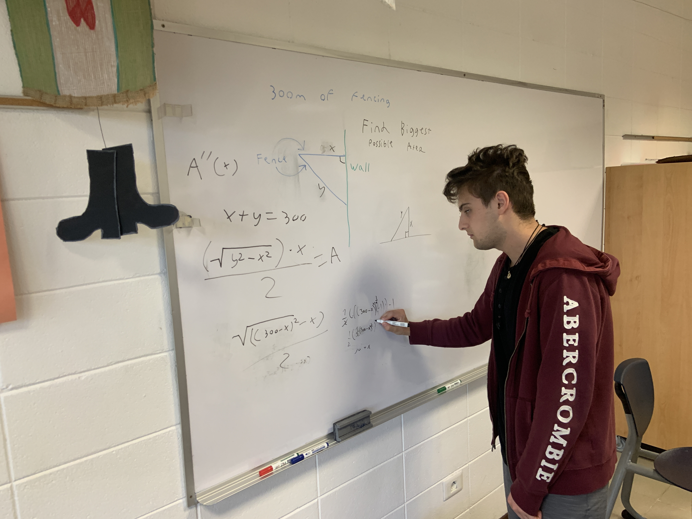Ethan attempting the chain rule
Also for the first time in a while, it rains a lot.
-
Date:07/02/2024
Climate:Damp
Location:Uruguayan American School
Bruno works on beats during study hall.
ToK"The mind is its own place, and in itself can make a heaven of hell, a hell of heaven." - John Milton
"There is nothing either good or bad but thinking makes it so" - Shakespere
Turner explains how Shakespere copied John Milton who copied William Blake from the Marriage of Heaven and Hell.
In Chemistry, Amaral has to leave mid class for a doctors appointment. Alex and Sebas struggle to solve problems relating to energy production. Timo joins them and he starts helping by simply guessing what needs to be done. Timo didn't study the Energy option, but Amaral didn't let him do medicine so now he has too switch.
During lunch, people play clahs royale. Chiara plays against Fabri and loses. Then she plays against Timo and almost doesn't lose.
PhysicsThis physics class everybody dedicated their work to the options they chose, here is everyone's options.
Relativity Timo Engineering Dani Ethan Luca Alex Chad Sebas Mati Imaging and Optics No one Astrophysics Martina As you can see engineering was a popular choice, Imaging and Optics was not. So the entire engineering team sat down at a table while Martina and Timo sat down at another.
It was all going well until the engineering table hit question 2 of the practice paper and they struggled a lot. I am not really sure what it was about, but it had something to do with longitude and latitude and earth, at some point the following exchange happened.
- Alex:Wait but we don't know how much the earth rotates
- Chad:It's once per day
- Alex:Really?
- Dani:Are you stupid?!
Meanwhile, Mati notices how Martina and Timo are chilling in the other table. Mati gives up on engineering and goes to look at what Martina is doing. Martina explains how everything is astrophysics is really easy, it's using the same three equations many times and the rest is just memorising cool facts about Astrophysics.
Mati makes a wild move and decides to grab the physics textbook and join Martina in Astrophysics. Mr Williams tells them that Astrophysics is actually the most popular option, and relativity is the least popular. Timo is confused at how imaging could possible be more popular than relativity but Mr Williams had apparently completely disregarded imaging as an option due to how absolutely no one in their right mind choses it.
Ethan at one point joins the Astrophysics/Relativity table to see how it's going, and he regrets not taking Relativity or Astrophysics, he thinks about changing along with Mati.
So Mati and Martina do Astrophysics reading and lauph at how they don't understand half of what they are reading. Alex, Chad, Dani, Luca, and Sebas struggle in the engineering problems. While Timo and Williams struggle to calculate a relativity problem.
But at the end most of these conflicts are resolved.
HomeroomMurphy has a talk where he makes some key points.
-
Don't get senioritis and throw it all away now, be responsible. Senioritis is a term that people use to express how people just start feeling like it's over before it's actually over
-
Put you name in the diploma of IB and UP. Also Murphy's middle name is Michol with an O which is really cool
-
People will have the opportunity to design their yearbook senior page.
Also it's Angie's birthday, she does a juntada with some people and she probably has fun.
-
Date:08/02/2024
Climate:Cloudy
Location:Uruguayan American School
Dani, Sebas, Timo, and Ethan sit together in english to do some paper 1 practice.
Ethan at some point sings and recommends a musical called Hazbin hotel and he sings parts of some of the songs.
Sebas asks some unique questions. "would you rather lose 4 fingers or have a permanently receeding hairline" or "Would you rather be David Goggings or a king in the 1500s"
They then discuss the healthiness of summo wrestlers, Dani thinks it can't be healthy to have that much fat. But Timo says that they are healthy and they are overpowered since they can't be defeated by anyone who isn't another summo wrestler. Dani think that even though no one could defeat a summo wrestler, people can just run from them since summo wrestlers lack agility.
Ethan does some research and concludes that summo wrestlers are actually healthy since they work out so much it removes the unhealthy fat and they keep the healthy fat as armor, however when they retire and stop working out the healthy fat becomes unhealthy fat and they start having a lot of problems.
BreakDani mocks someone who had a 2 year hardcore world since they are playing alone in multiplayer. Fabri said that the maximum amount of time people can play in minecraft multiplayer is 2 weeks before they get bored.
Digital SocietyLupi and Chiara play clash royale against each other, Chiara wins a touchdown match because she had the ram rider. Dani, Lupi, and Sebas talk about ice spice, sebastian alfonso's cooking, sebastian sass as a chef, and Uruguay being classified as the happiest country despite it being the one with the highest suicide rates. Then they start making some emojis in the google emoji kitchen
In lunch time everyone plays clash royal
SpanishThey watch a video about Ernesto Sabato and his biography. Dani does not like how he was in communist and anarchist groups.
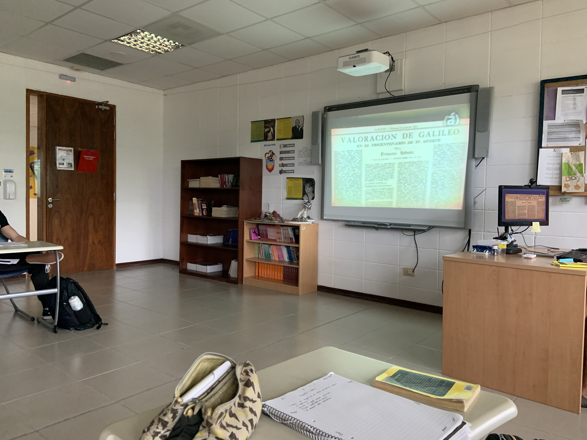They see something related to the author
Daniel salpica a santino con agua en la clase de español.
Later that day, Corey sends the following message to the Table Tube Gang through megans phone
Corey's message
-
Date:09/02/2024
Climate:Sunny Hot
Location:Uruguay
Alex and Sebas work on chemistry option C Energy but they don't understand anything.
Dani solves the optimisation problem using rules that Timo didn't learn.
Mr Turner starts showing people in ToK some jobs that he could get at perplexity and other tech companies. Then he started talking about oregon and it's epic compost recycling system, and it's net 0 energy buildings aswell as the bartering system, and a bloodpark were gangs. They also talk about the history of rap and how Blondie was the first to rap. In oregon there would always be a person that makes beer, or someone that makes honey and they would trade or barter instead of using currency sometimes which is great.
ChemistryMr Amaral was here this morning, but he had to leave because he felt sick, so a new teacher that I don't know the name of substituted him. Lupi and Lucas did some a bio test while Timo, Sebas, and Alex did Energy stuff, but they didn't understand most of it. Alex tried to find the test online but he failed. Timo then tried to find it in an IB repository and he succeeded. So they do the things and now they can see the answers. But they still don't understand a question that had to do with ligands.
Alex leaves for a second and so Sebas talks to Timo. Sebas comments that he didn't sleep well last night and he wants to sleep, but Timo knows he slept well because he dreams when he sleeps well. Sebas was curious as to what Timo dreamt but he didn't want to say, since it was "too weird".
Alex comes back and Sebas asks "Is the bird returning to the flock?" Alex replies "The bird is staying with the flock but he is leaving once migration starts." Sebas refused to explain what this meant to Timo. Timo theorises that it means Eitoku is leaving to Japan, but he wants to be sure.
Then Alex leaves again, he had previously left to go talk to Eitoku but now he actually goes to the bathroom.
LunchClash royale stuff. Also Lucas and Ethan play agar.io
PhysicsIn physics people divide themselves once again into the Astrophysics/Relativity table and the engineering table. However Mati does not join the Astrophysics/Relativity table because he is in la paloma right now. I am sure he is studying physics anyways (no)
Ethan once again considers switching from engineering to another option, engineering is apparently pretty hard.
Martina says that she might join the volleyball sunday classes when they start since it will very likely just be a day where the volleyball team will just play a match and not actually train.
Towards the end of the class Luca sees Timo's notes in journals. Luca focuses specially on one journal that has some kind of lock. He calls it the secret journal because even though secrets to be found found are notes on relativity. Luca reads some of the notes and he admits that relativity sounds more interesting, specially the part where he read about the spacetime interval.
Dani really likes the design of Timo's notebook but he thinks that his handwriting is trash. So he finds the juxtaposition of the very elegan notebook and Timo's handwriting very funny. Sebas said that at least his handwriting was original


The Journal with relativity notes
For advisory in physics, they watch a StuCo video where they interviewed Chiara. Kylah also made an anouncement and so did Salma.
VolleyballBefore volleyball happens, Lupi, Alex, Eitoku, and Chad play a game where they flip a spoon, whoever the spoon is pointing towards has to throw a muddy ball to anyone and if he fails he has to get hit by the ball. Pretty interesting game
.jpg)
.jpg )
.jpg )
Miss
Volleyball happens, everyone is rusty.
Timo finally sends Corey the instrumental for Corey to rap over.
Sound End - By Timo
Corey liked it.
Megan said corey didn't like how he couldn't rap about murder and drugs due to the feel of the song.
-
Date:10/02/2024 - 11/02/2024
Climate:Rainy but really hot
Location:The house of Alex, bowling place, Rudy's
The volleyball team is back in buisness. Alex invites the volleyball squad except Mati and Fede because Mati was in la paloma and fede was at the dentist yesterday and so Alex thought he was sick so he didn't invite him. Als Sebas who was there and Kagura who is Eitoku's girlfriend from japan that lives in Argentina and goes to the Lincoln school.
They played a little bit of badmington and a football match where Lupi and Luca were very competitive, and then they went to the pool.
Timo arrives and Kagura thinks that he is Alex's older brother because he looks older since he is taller and has a beard. They both have a conversation about Argentina, Uruguay, and which one invented dulce de leche. They are all planning to go bowling but before that happens, Lupi and Luca get competitive with each other. Lupi believes he can beat Luca at any physical sport except football, but Luca is really confident in racing.
They ask everyone who would win. Luca is a pretty fast person, however Lupi has won some medals for his speed. Lupi asks Chad on his opinion but he won't take sides, then Lupi asks Timo and he gives it a thought before concluding that Luca would win given he plays more soccer and hasn't had a serious leg injury.
Lupi counters saying injuries don't matter as proven by Eitoku. "It's a miracle he's alive, and bro went to SAAC 2 months later" - Lupi
Luca eventually gives up and admits Lupi is overall better than Luca. Then they have a small discussion on weather to take ubers or buses to go to bowling. They land on calling 2 Ubers. In one of the ubers Chad and Luca discussed entretainment in Uruguay compared to entretainment in the United States. The US has waterparks which Uruguay lacks, Luca informs Chad of a trampoline place called Summit which has several activities like dodgeball, duels, and more.
Chad thinks this trampoline park is amazing and he didn't know Uruguay had such things, he proposes going there some day.
They arrive at the bowling place, but all the lanes are occupied so the play a game of pool. Luca and Alex vs Chad and Lupi in one table, Eitoku and Kagura vs Timo and Sebas in another. They call Alex because a lane opened, which didn't allow them to continue the game, although lupi and chad were winning by two balls.
After some time a second lane opened for the other group, in this case Eitoku and Kagura won.
So they played a bunch of bowling, Eitoku and Alex were the two with the most points. Although Eitoku's name was written as "Bitoku"
.jpg)
.jpg)

The bowling
They uber back to Alex's, in one of the UBer's, Lupi and Luca start competitive trash talking each other again. Luca argues that Lupi always fumbles.
So they get back to Alex's and they start planning something. So you might recall that yesterday Alex, Eitoku, Lupi, and Chad were playing a game were they spun a fork, and whoever it landed on needed to throw a muddy ball to someone, and rest ran to avoid the muddy ball.
They planned to repeat this experience with eggs instead of a muddy ball. Lupi and Chad went for eggs while the rest stayed for a while talking about how vaping is bad, probably not as bad as smoking, but still bad since it is addictive. Then they start their journey to Rudy's.
So everyone arrives to Rudy's, Chad and Lupi have the eggs. They talk about random things, I don't remember all of them so I will make a list of what I do remember.
-
Worst name
They talk about bad names and who has the worst name in the class. The name Milagross pops up. They mention other bad names like bob.
They agree Alex is a fire name.
They also gave the lady wrong names. Alex is Pablo, Timoteo is Mateo, Sebas is Alejandro, Eitoku and Kagura gave their normal names, Lupi was Chad, and Chad was also Chad. The lady was so onto them but she was buena onda and she let it be.
-
Soda
They talk about good Sodas, they concluded that the best Soda is ginger ale. Timo doesn't know what that is so Eitoku does a little magic. Apparently a specific ratio of sprite to soda tastes exactly like ginger ale. Timo compares this to an anime called he had watched were someone made coke using ginger and carbonated water, so it makes sense coke woul have some kind of ginger taste. Eitoku and Kagura had seen the anime, it was Dr Stone.
Timo told some soda stories of once were they offered a soda called "Sangre de Lagartija", a dark green soda made of other sodas. And also once where Fabri's relative gave everyone first class in a buquebus fare to Lincoln when they were going to friendhsips (Friendships is like a middle school SAAC), Fabri's relative also gave everyone free drinks, and Santino collected them all in a bottle and drank it, the mixture was a strange black colour.
-
Arts
They talk about arts and how Alex and Kagura don't reall do any arts. They also mention the SAAC fine arts festival.
They talk about songs, Timo wants to show Eitoku and Sebas his new song. Also Bruno sends a video of his beat that Eitoku, Alex, and Kagura watch, Bruno was using an ociloscope.
-
Gay bars
They talk about how they might go to a gay bar.
Also Alex mentions how it's easier to be a lesbian than to be gay.
-
Sebas' story
A new student was there and she started crying and he didn't know what to do.
-
A little challenge
Timo and eitoku fill a cup to the brim with coke and sprite.
-
Good animals to ride
They say that camels are shitty animals to ride and elephants are epic
-
Eitoku goes to the bathroom
But he obviously just went there to vape. So Alex tells Kagura "you gotta help him quit". But Kagura says she tried to convince him but she was unable to. So they talk about drugs and how Sebas got drunk and Kagura, Alex, and Timo haven't.
-
What the others are talking about
So far these conversations have mostly been with Alex, Timo, Sebas, Eitoku, and Kagura. However Lupi, Chad, and Luca have been having a completely different conversations pertaining to homicide and some other random topics. Alex takes notice of this and wonders what the hell they are talking about.
-
Elliot
So the food arrives and they messed up Eitoku's name really hard there.
-
Quick story of Luca
He tells Chad a story of how some hosts lived incredibly far in friendships.
Also in SAAC volleyball Luca had 0 interaction with the hosts. They also talk about someone called goober.
-
Rob
They talk about being robbed, no one has really been robbed.
-
Badmington
Sebas is pretty good at badmington, Alex thinks it's becasue he is from Thailand.
-
Volleyball
Luca says that he had quit volleyball when they lost a match thanks to him. But after Alex and Chad arrived to the school, he started doing volleyball again.
-
Gay
Alex doesn't like it when gay people make being gay their whole personality.
-
Origin of discrimination
Timo wonders for a second what is the origin of racism and all the discrimination. They conclude that most discriminatory people have heard stories or they have been through bad experiences related to a discriminated group, and then they pass it to their children and stuff.
Sebas' old friends hated gay people so he found it weird that Fede was gay, it was a juxtaposition in his life.
-
Timo's story
He had gone to a mission but he couldn't sleep so he annoyed everyone by playing a recorder. In the missions he was known as flautita because of this.
-
Nico Bruni
At one point he wanted everyone who was going to SAAC volleyball to host people for SAAC Fine Arts, parents got really mad about this.
Then they all pay and leave. Timo asks Eitoku "How much money someone have to pay you to quit vaping/smoking". He says about 100 thousand dollars.
Then they see videos of tragic events in instagram, which is apparently all of Luca's and Lupi's feed. Meanwhile Eitoku and Sebas listened to Timo's song, Sebas liked the second part of the song better than the first and Eitoku liked how the instruments sounded good. Timo recommended another song to Sebas, but he was too tired to listen to it so he said he would listen to it later.
And then finally, the Egg Trials Begin. Except Eitoku and Kagura had to leave.
AwardsPart of the Egg trials
First to hit First to be hit Most hits Most hit Least hits Least Hit Cheapest Hit Timo Sebas Chad Timo Lupi Lupi Alex Then they go to the pool where some people do belly flops, and they pass the ball around. They also use the hose to clean themselves up and also to clean all the egg disaster.
-
Worst name
-
Date:11/02/2024
Climate:Sunny
Location:Alex's house
Sebas and Timo wake up. Then Luca wakes up and he plays some clash royale games with Timo. Lupi's father arrives and Lupi is waken up by the rest. Apparently Lupi's father got mad afterwards because they were leaving for his sister's birthday.
Eventually they leave
Later that day the superbowl occurs and the Chiefs win.
-
Date:13/02/2024
Climate:Rainy
Location:Montevieo Shopping Area
Eitoku and Kagura get to a McDonalds were Eitoku orders a drink.
Then Fede and Timo arrive.
They start to say interesting facts about each other, Kagura really struggles so instead Timo gives another fun fact, he tells the story of Sebas, the ritual, and secrets. Eitoku comments on how he knew Sebas' secret before Timo. Fede wants to know what the secret is but he can't know.
Then eventually Ale arrives and they go to el club de las milanesas.
Eitoku and Ale order a milanesa which they plan to share because both seem really good. Fede and Kagura order something to share because Fede has been here and he knows that the milanesas are big. Timo orders a sandwich called La Bestia which gives whoever finished it the unnoficial title of La Bestia.
.jpg)
Milanesa place
While they were waiting for the food, Fede talked about how Nazi Germany contributed to why the colour pink was seen as gay.
The food arrives, Eitoku and Ale were unable to finish their food, so they decided to take it and later feed it to a homeless person. Fede tried using a discount code he had previously obtained, but it didn't work.
After that, Ale got an ice-cream from McDonalds, they tried to find a place to eat it but everywhere was extremely windy. They just enetered a fredo where Eitoku bought an ice-cream.
.jpg)
.jpg)
Eitoku and kagura
They finish their ice-cream, then Fede and Timo attempt to catch a bus, but then they decide not to do that and to instead wait for Timo's mom.
Apparently Sofe couldn't come because Fede dislikes her so much and Eitoku knew that.
-
Date:14/02/2024
Climate:Sunny
Location:Uruguayan American School
During study hall, the engineering team of physics practices some problems. This day the chemistry class has their options test, Sebs doesn't like that. So Sebas goes to Amaral's office and argues that they didn't get to ask questions about the energy optional module since Amaral was sick throughout most of last week. Amaral agrees to make today's class a study session.
Today Mr Turner has fallen ill and thus Mr Davidson will be the ToK supervisor for today, this ToK study hall will take place in Mr Davidson's classroom, and no one gets anything done because they are too busy playing with a big black dildo that Santino obtained from Salma's brother (Walter.)
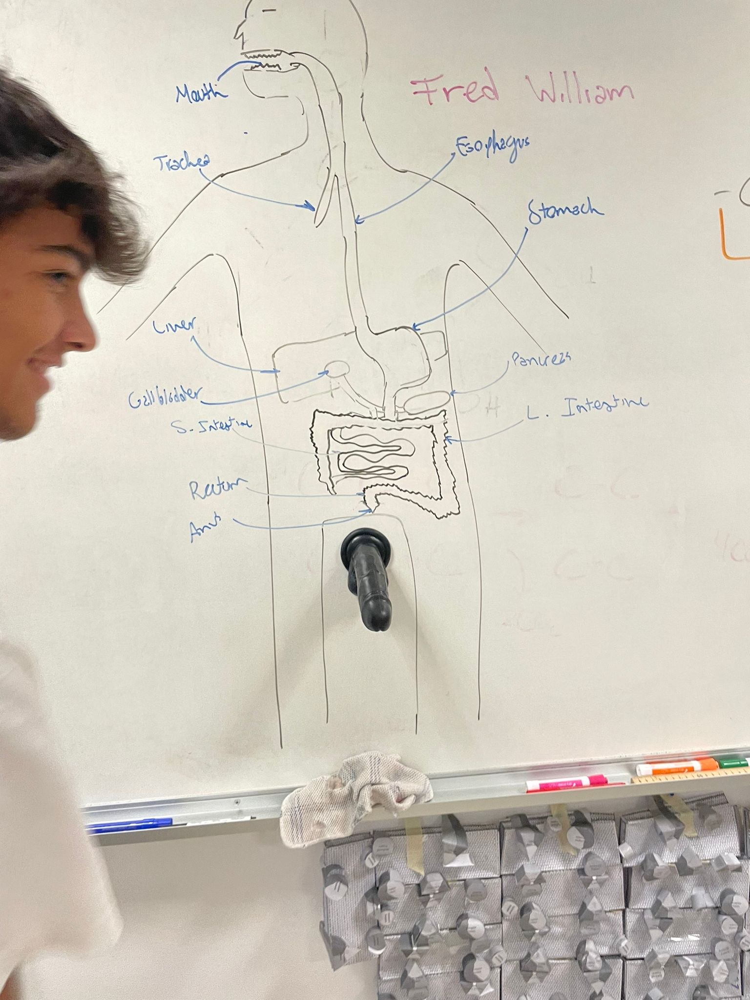Very mature stuff
During Chemistry, Alex wasted all of the lesson re-learning what he had learned in physics instead of learning the new chemistry content from the energy option.
During Physics, the HL people continue doing the HL part of the optional module while the SL squad worked on uncertainty problems. The SL people talk about a bunch of random stuff, Martina said sometimes she wishes she was a man, she argued that it would be easier to pick an outfit.
Later that day Santino, Martina, and Rocco are driven by Salma to Martina's house. They put Santino's toy in the roof of the car.

Extremely mature behaviour
-
Date:15/02/2024
Climate:Sunny
Location:Uruguayan American School
English class practices for paper 2 while the rest the HL English class reviews Medea.
During Digital Society. Timo, Fabri, and Lucas take the Chemistry test, Lucas is fine with Biochem but Timo knows nothing about the energy optional module, he infroms Sebas about this during lunch and Sebas tries to study but he gives up. Alex does a similar thing, Lucas lauphs at everyone who chose the energy optional module.
During Math, Santino comments on his actions yesterday with his toy and Salma's car. THey also learn about definite integrals.
During Homeroom, Martina decides that she doesn't want to stay in the physics homeroom, so she comes down to Sylvia's homeroom where she plays cuarto oscuro, and because she is on the wrong homeroom she is chosen as the tagger. This time, Fede performs a strategy where he climbed ontop of a shelf, Ethan immitated this.
.JPG)
.JPG)
Fede and Ethan taking advantage of Martina small height
Megan informs the Table Tube Gang that Corey has cheated on her one month into the relationship. Fede is devastated, but Timo questions the validity of the claim. Megan says she got this information from a girl named whitely. Apparently Whitely claims that Corey was with her one month into the relationship. Megan shared some screenshots and Fede quickly noticed some inconsistencies and some suspicious activity.
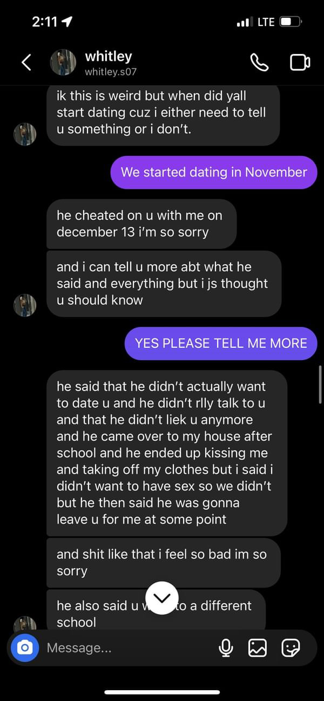 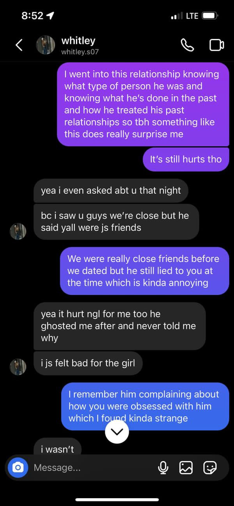
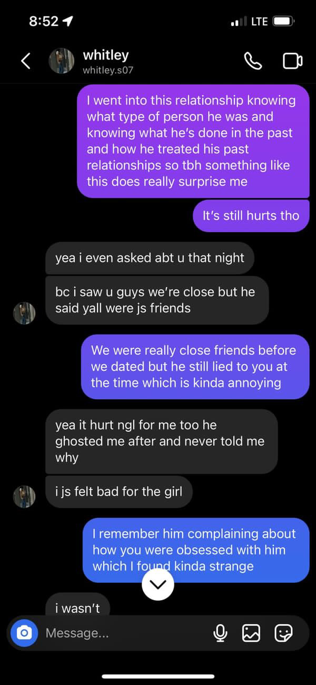
Fede questioned why would Whitely ask when Megan and Corey started dating if Corey already told her about Megan.
Also Fede said it was too heavily connoted. Furthermore he historically analysed it through OPCVL and deduce that the information is not completely reliable and it's only one side that could be biased. Fede advised for Megan to go talk to Corey instead of keeping speculating. Megan is worried because Corey has had some bad behaviour in the past. But Corey has also told Megan that Whitely was obssesed with him so there might be something suspicious there.
-
Date:16/02/2024
Climate:Sunny
Location:The House of Chiara
It's senior skip day, meaning the seniors are going to skip this day, at least most of them. Bruno, Sofe and Lucas where the only ones that came to school for no apparent reason other than the fact that they just wanted to.
Everyone united at Chiara's house. The first to arrive was Fede, Mili, and Luca. They spend some time talking, everyone was supposed to arrive at 12 and eat at Chiara's but it's already 13:00 and most people haven't showed up.
But people start arriving, Fabri, Mati, Alex, Salma, and others. Fabri then goes with Mati, Salma, and Mili to buy stuff at a gas station, people ask Mili to buy alfajores and other stuff.
The people that remain go to the pool. Timo also texts Lucas, and Lucas texts him back saying "Albe dere in fivr". (I'll be there in five)
They all go to the pool, and at this point many people have arrived including San, Martina, Lupi, and Chad. Chad and Lupi are passing the ball and trying to do trickshots. Alex eventually arrives and joins them.
People at the pool
After a while everyone arrives, some go into the pool and they play a game where you can only pass the ball with the head. Chad also does some trick shots with Lupi.
Then Chiara tells everyone to go out of the pool and to clean stuff up because some people are going to come to talk to everyone about the plan for after prom. So they all get out of the pool and they all start to clean out up all the trash left.
Fede quickly asks about the UPD and people reply that the best part about it where Bruno's stories and the fact that Dani was very clearly jealous of Sofe's boyfriend.
The people arrive, they are 2 people and one of them is named Lucas. They talk about how the party is going to work, but they also talk about the more important issue, the money.
How the money is going to workEveryone will have 8 QR code tickets that they will sell, these are the afterprom tickets. Seniors will also have to pay an additional 234 pesos that they can obtain by selling raffle tickets.
A portion of information
Chad immediately initiates the prom-ticket-selling process by sending a message to Rocco, Nicolas Menedez, and Facu Diano for some questionable prices. Facundo Diano is confused about the ridiculous prices of Chad so he messages Salma, Salma proceeds to ask "Quien le mando un mensaje a Facu?" exposing Chad's work while also exposing the fact that Chad didn't hear they had said that there was a plan for selling the tickets to increase proffit. The plan was to increase the price as the days go until prom. However Chad argued that if he can sell a ticket for 2k right now he should do it.
Then the people leave, Fede brings out a cake because tomorrow is his birthday. They all sing him happy birthday.


Fede;s cake
After that, some people played UNO, some people played football, and some others played pool. A little bit of everything.

UNO
People that played pool had a whole torunament thing with several teams, the final match was Lupi and Eitoku vs Fabri and Luca.
Lupi makes an epic shot. He knows that the 8-ball is 100% going in so he just leaves the room to celebrate. The ball does go in, but Fabri and Luca take it out before he comes back. This extended the game time.
Chiara had a dinner at 8 and thus she kindly asked everyone to leave. Luca left, but Fabri and Lupi really wanted to finnish this game in the stupidest ways possible.
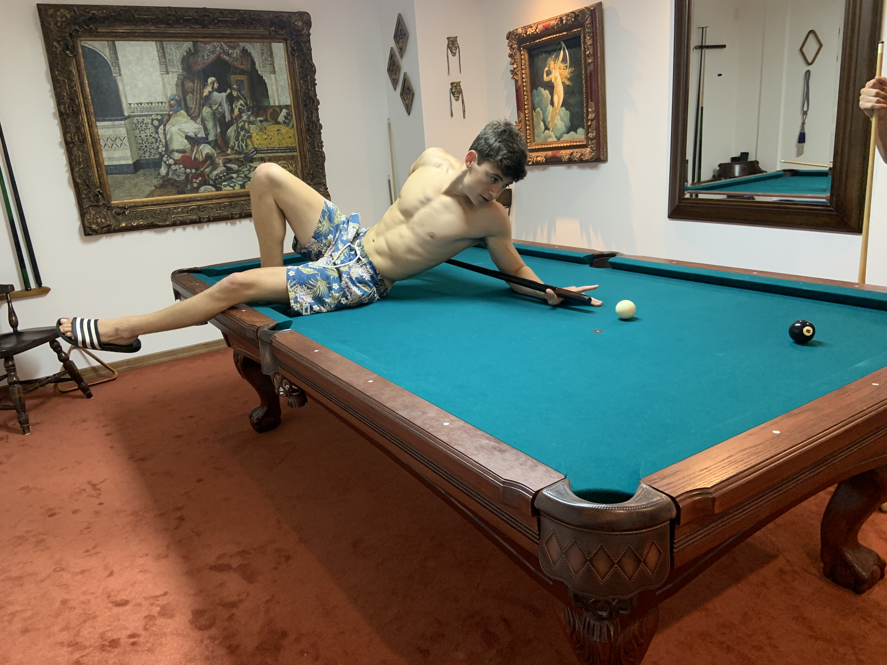Here are all the epic shots
Then Fabri reveals that Lupi had won all along since the 8-ball had gone in several plays ago.
Turns out the Table Tube Gang was right and Whitely is crazy. Corey hadn't cheated on Megan. However Megan remains cautious, knowing of Corey's past.
-
Date:17/02/2024
Climate:clear
Location:Uruguayan American School
In volleyball, they take the following picture since Flor has come to visit.

The volleyball people
-
Date:19/02/2024
Climate:Sunny
Location:Uruguayan American School
It's Timos Birthday today!
At 6PM Sofe sends a message explaining how she stayed up all night finishing the BIO IA. Bruno responds immediately saying he also did the same thing, and Timo follows up saying he has been working on the extended essay, then Ale is also online.
In school, Bruno is explaining to Sebas and Lucas how the stars aligned for Bruno to finish succesfully the IA and doing so perfectly, he was proud of his IA.
Antonina Laura checks powerschool and to Sebas' surprise, it's Timo's birthday. So Sebas wishes him happy birthday.
It is revealed that the "bird returning to the flock" means Eitoku returning to Japan.
The chemistry class starts to learn more Organic chemistry, this time they learn how to identify compounds based on experiments and their molecular formula. This means that they have to use empirical formula again.
During lunch, they all play clash royale, they talk about physics and Alex mentions how he calculated Eitoku's final velocity after his fall, I didn't quite catch the exact value. But he did take into account Terminal Velocity and the fact that Eitoku didn't reach that. However he failed to take into account air resistance and Fede made him aware of this.
In Physics, the HL people learn new information about Nuclear physics, the radius of atoms, and the quantisation of nucleons which is similar to the quantisation of electrons. This is also apparently the reason why certain isotopes or nuclides are more stable than others, because they are quantised since quarks also behave as waves like electrons.
In Homeroom, Williams checks up with everyone and their Extended Essay progress, everyone is pretty much good except Timo who started it yesterday.
Dani comments on the "Timo build" and how Timo is wearing an all-red outfit.
Later that day Sebas sees Timo headed to an ice-cream shop, he finds it funny because he is in a very conspicuous all-red outfit.


The Ice-Cream of Timo
Meanwhile on the other side of the world. Megan and Milla wish Timo a happy birthday, and now Timo makes them do a challenge, they must all do something random.
- Corey has to learn a song in the guitar called "Saline Solution"
-
Megan looked at a relativity problem but she didn't solve it.
.png)
Sebas, Milla, and Eitoku are in space. Eitoku and Sebas find themselves going at ludicrous speeds towards each other.
According to Milla, Sebas is going at 70% the speed of light to the left while Eitoku is going at 30% of the speed of light towards the right. Milla, Sebas, and Eitoku are all in inertial frames of reference.
Determine, according to Sebas, the velocity of Eitoku.
- Milla wrote a persuasive sentence of why climbing a tree is random. She didn't want to write an essay like last time because she has suffered from the IB.
- Fede talked about some random thing with Eitoku
-
Date:20/02/2024
Climate:Sunny
Location:Uruguayan American School
Nata comes here today, for unkown reasons.
StuCo meeting happens
Fede and Mati sleep in homeroom/spanish class
The digital Society class watches all the IA videos. Dani's video is by far the best.
The Digital Society Inquiry Projects, except Lupi's and Timo's
Also people decide to sleep in class
.jpg)
.jpg)
Sleepy bois
Football 5 is happening this weekend, it was organised.
People chose a theme for prom. The Theme will be Cassino
-
Date:21/02/2023
Climate:Sunny and Really hot
Location:Uruguayan American School
During the ToK study hall, Fede sends out a form for everyone to chose weather or not they are going to help in the wine and cheese tomorrow. Timo sends a second form of what teachers will be invited to PROM. Also Turner talks about how women used to be property but now they aren't thankfully
Women used to wear this, video by Bruno
During lunch, the students find a ball. They start to to pass it all over the place until Mr Turner appears and tells everyone that the flexible workspace isn't the place for ball throwing.
Ball situation
During Physics, Williams checks people's IAs. While he is doing that, Santino and Fabri try to solve a rubiks, meanwhile Alex and Chad played clash royale. San and Fabri try cheating using a website but to solve the rubiks, but they still fail. After Williams is done checking IA's, the HL people learn stuff about half-life and decay and the decay constant.
Santino and Fabri struggling to complete a rubiks cube (Santino is red-green colour blind.)
-
Date:22/02/2024
Climate:Sunny
Location:Uruguayan American School
Megan has gotten a tattoo that she has wanted for a long time. Her parents don't really like it but it does look really cool in my opinion
 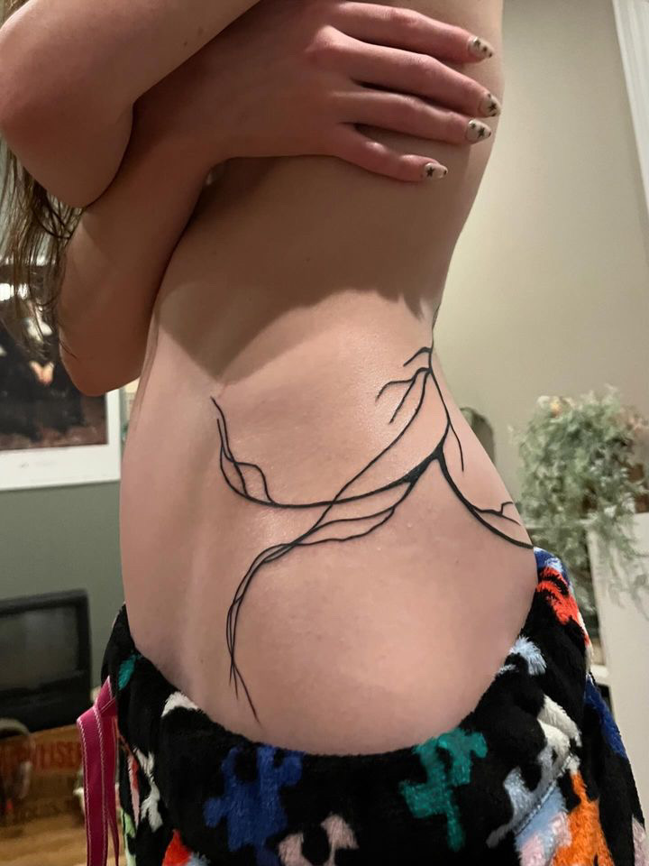
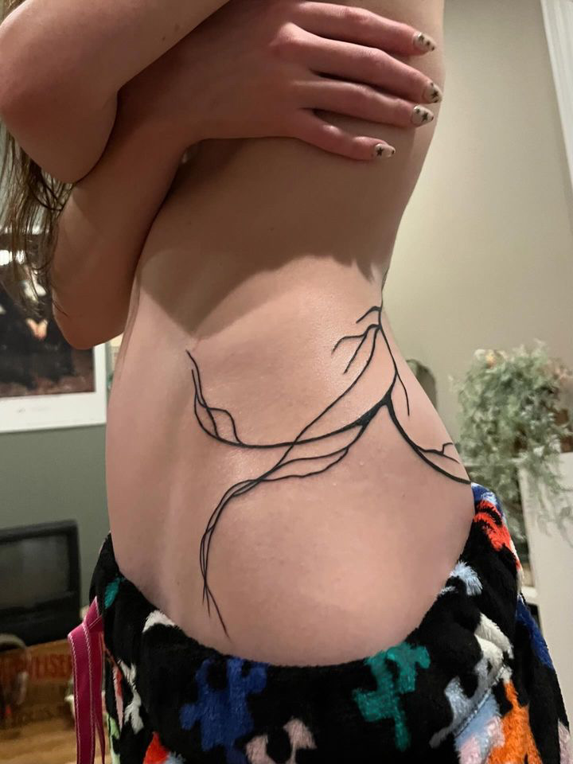

Megan begins to get consumed by the darkness
In English, everyone takes a paper 1 test.
During Digital Society, Mr Javi insists everyone on finishing their IA's. Dani and Lupi have a talk about talents, achievements, and goals, specifically in Math.
During Math AI, they learn to solving integrals using the trapezoidal method of approximation.

How to do the trapezodial method
During lunch, Lupi and Dani discuss interesting words like the word "Ubiquitous".
In Spanish class, they read the book El Tunel outloud and they contemplate how creepy the main character is. The main character is basically obsessed with this random woman and he won't leave her alone. During advisory Fede and Chiara dance while everyone else doesn't dance.
Fede and Chiara after dancing
Timo, Eitoku, and Mati stay working and sleeping until wine and cheese. Alex joins them and they play volleyball. Then they create the poster for the Wine and Cheese babysitting
While they are doing the sign, Luca joins and he finds an instagram post that reminds him of Dani, Alex doesn't understand so Mati reveals a story that Marina told him about something that Dani did once.
Luca doesn't believe Marina's first story. But he establishes that Dani is much better now. Alex is empathetic towards Dani. Mati needs to charge his computer but he doesn't have a charger, he only has a cable, so he plugged his computer to Timo's computer and it worked.
After they finished the poster they started to go towards the gym and they played basketball and volleyball. Kids started arriving and everyone started playing with the kids. Some kids got hurt, some vommited, and the seniors ate alot.
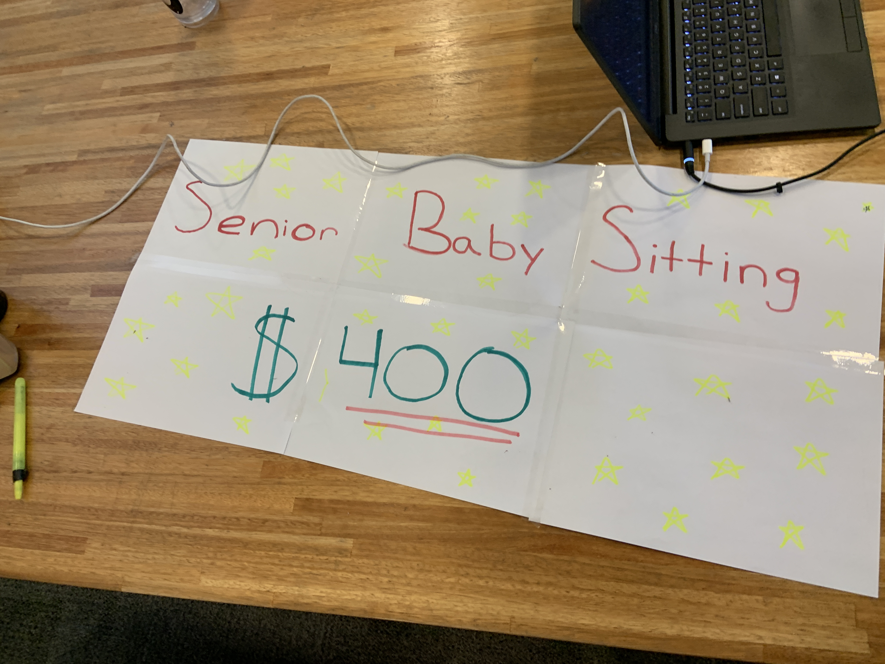The finished poster
-
Date:23/02/2024
Climate:Sunny
Location:Uruguayan American School - Rudy - Delicias
It's Luca's Birthday
Timo arrives late. Antonina isn't here today, Mr Davidson scolds Timo for arriving late. Nikki arrives later. Then Timo's alarm rings, Sebas asks Timo if this is the usual time he wakes up, yes it was. Timo explains he doesn't care about being late on A days since he has study hall and the ToK study hall for the first 2 periods, meaning he only has to go to school for the second half of the day. Sebas mentions that if this was the case for him he wouldn't go to school until the 3rd period.
In ToK, Turner and Timo have a discussion on how contractions can be used in academic writing because it can change the meaning.
"I can" does not equal "I can't not" since the former is saying one is able to do something while the latter is saying that one is unable to not do it, meaning he/she must do it.
Turner explains how this could be used in academic writing for the introduction, when saying something along the lines of "I can't not refraing from showing you my thesis" which implies it is literally impossible for you not to read the thesis.
Amaral is sick, meaning that they won't have the Energy test today. Instead they do a bunch of worksheets. Computer science people call Alex for help. But Alex eventually returns to chemistry, they call him again but this time Alex refuses, he must work on chemistry experimental analysis of organic compounds with infrared spectrums, mass spectrums, and nuclear resonance.
During lunchtime, everyone says happy birthday to Luca and they also play clash royale as always.
Chiara asks Chad how is day is going, Chad responds that his day has been good so far. He reciprocates the question back to Chiara. Chiara reveals she has a UTI and it hurts and she feels like she needs to pee all the time. Mati joins the party and assumes correctly that Chiara has been oversharing information, but Chiara justifies herself saying that Chad was the one that asked how her day was going. (Even though Chiara asked first.)
In another table, Sebas and Dani discuss Timo. For some reasons Dani finds the character of Timo really strange, how he dresses, his mannerisms, his handwriting, his signature, his way of speaking, the way he looks like. Sebas and Dani often poke fun at Timo's signature during physics. What they focused on today was the way he sits. Timo usually sits with his legs crossed which Dani is confused about. Sebas theorises that if Timo was a girl he would manspread, being always the opposite to the norm.
This physics class is not an HL class, SL people finally start learning the topic that Amaral wanted his Chem+Physics students to learn. Electricity and Electric Fields. Most people (Only Timo) know this topic already since Williams taught it in middle school. Alex was not here in middle school so he struggles a bit.
After physics. Mati works on some work, he goes to the bathroom, does drugs, and then comes back to work harder. Fede lies down and sleeps, Eitoku copies Fede's actions. Lupi, Chad, and Alex play clash royale at the library, and Timo makes paper airplanes, featuring an unusually aerodynamic tube.
After that they play volleyball, where everyone is slowly but surely regaining their skills. Then they all get back home
At 21:30 people arrive and eat at Rudy's to celebrate Luca's birthday.
People who came- Fabri
- Martina
- Mili
- Lucas
- Timo
- Alex
- Chad
- Lupi
- Eitoku
- Angie
- Chiara
- Matias
- Luca
Eitoku brought his vape, his cigarretes and a very cool electric lighter that produced a clean blue flame.
Alex reveals that Nata wants to get with him, but he is no longer interested, he asks Martina for advise. Martina recommends being honest.
Martina reveals that she likes someone from some grades below named Rafa and she is pretty sure he likes her back. However she does not want to approach him, she wants to wait for him to approach her. Mati mentions that she only goes for girls that go for him first. Also Rafa is in the same Grade as Marco Lupinacci
Mati doesn't reveal anything
Timo reveals his new shoes
Eitoku doesn't reveal anything.
Then they start playing some songs which Martina and Mati know from heart.
Burgers arrive and everyone eats.
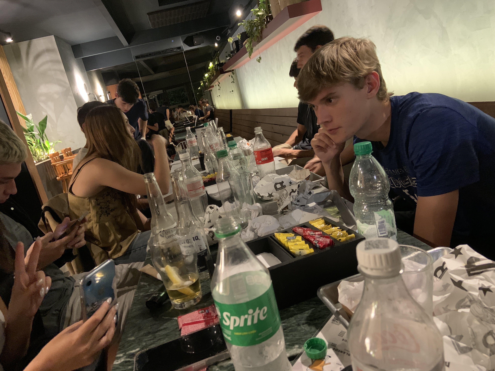People at Rudy
Lupi's neighbour approaches Lupi, says hi to him, and then leaves.
Fede and Timo had a talk about Hamilton and how disney is on a downfall.
While all of this was happening, Mili was telling an incredibly interesting story to Fede, she was telling it with so much passion, that it got Lupi and Chad's attention. So they tried to figure out exactly what was going on but it proved to be an arduous challenge because they lacked the necesary previous context. Lupi concluded that Mili was dumb anyways.
They have a small talk about cedulas.
After a while, Chiara and some others leave. The rest go to get ice-cream. Mili buys everyone some ice-cream and she also buys Luca some nerds. Luca says jokingly that nerds are good pre-workout and he states he will eat them as breakfast tomorrow for the football match he has. Luca also proceeds to lauph at the Chem HL people that have to be at school at 9 despite this being a weekend.
Recently Luca has started a lot of beef against all sciences that aren't the ones he is taking, those being physics and computer science. He makes fun of chemistry and biology people whenever he has the chance.
Alex, Angie, Chad, Eitoku, and most others leave. Which leaves Fabri, Martina, Angie, Mili, and Timo. Fabri drives them all home. Martina mentions that this time she might join volleyball practice tomorrow, Fabri says the same thing since he must take his father to the father football match that is happening. Timo recalls a time where Fabri was driving Lupi home and Fabri chased Timo who was on the ewheel which effectively scared him. Martina states that she really wants the cafeteria to be done. So far everyone has been eating in the upstairs flex space and she is getting depression from it
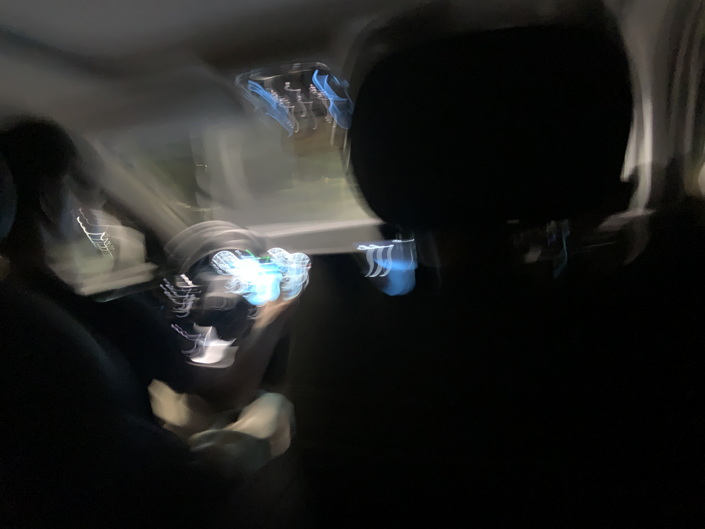Driving
Fabri succesfully leaves everyone home.
-
Date:24/02/2024
Climate:Sunny
Location:Uruguayan American School - Tajes 5
At 9, the Chemistry HL group arrives to learn some organic chemistry. Timo and Lucas are the first, but they see Amaral isn't there yet, and thus they start to play with paper airplanes, including the unusually aerodynamic tube. They see Chad going off to basketball, and then Mr Amaral arrives.
He brings biscochos with him, and then the rest start to arrive. Alex, Lupi, and Sebas. They learn about optical and stereoisomers. And they also play with paper airplanes. They also learn what chirality is. There is a bunch of german-originated vocabulary.
Also out of nowhere Mr Turner comes, he is panicking because he has to get a lion's main mushroom out of a freezer before it goes bad. Unfortunately the mushroom is locked up in some place.
At some point, Chad and Eitoku arrive at the class, they see what the Chem HL people are doing and then they leave to volleyball.
Eventually the HL chemistry students finish the lesson. They start throwing paper airplanes really agressively until Sebas knocks a bottle with chemicals.
Sebas and Lucas leave, and the others go to volleyball. Alex and Lupi play for a bit but then Coach Sebas arrives and doesn't let them play because they missed a big part of the practice. Alex is not happy about that.
When the practice ends, they all practice spiking and setting for a little while and then everyone leaves.

Football thing
After a while, the football 5 match happens. Everyone arrives before 18 except Mati, so they start without him, the teams are the following.
Team 1- Fabri
- Lucas
- Alex
- Dani
- Mati(not here yet)
- Luca
- Lupi
- Timo
- Chad
- Fede
In the first half hour, team 2 won by a lot because the other team was one teammate down.
Eventually Mati arrived, and then it was way more even. Still team 2 won 12-9.
Plays worth noting- Lupi passes the ball to the center and Chad comes out of nowhere to score a goal.
- Mati kicks the ball and scores a goal to Fede inbetween the legs
- Fabri scores from the middle of the field
- Lucas constantly sends the ball into orbit
-
Date:26/02/2024
Climate:Rainy
Location:Uruguayan American School
During study hall, the class discusses skincare products in the flex space. They have some products from La Roshe Posay to show.
During 2A, the Spanish B class does some presentations with Rodrigo. Fede goes to the seventh circle of hell (talks to Ms Moskovicks about his extended essay).
Timo anounces through the class groupchat that his birthday will be next saturday at the same place as the last one.
During 3A, the chemistry class learns about the mechanics of free radical substitution, it's a really heavy class which no one enjoyed.
During Lunch, Eitoku and Timo go to get food together. Mili informs Timo that his birthday celebration this weekend interferes with Bianca's birthday celebration, and for this reason Nikki, Martina, and Santino won't go to Timo's celebration.
Eitoku doesn't like Bianca, he says that she spreads false rumours around. Mili argues some of the rumours are true, Eitoku says no, Mili says yes, and then Eitoku says "so, who is getting you the skincare products from japan?" Mili wanted Eitoku to buy her some products from Japan, Mili agrees for the sake of her products.
Then they head back, Dani is very stressed about the extended essay, but Fede is telling him that it is only worth one point so he doesn't need to worry about it that much.
During physics, they learn about electric fields. They learn the equations for electric fields, and the equations for uniform electric fields, and after all of that, they have a little game about using electric fields to score a goal.

Uniform Electric Fields
The game is as follows, 2 teams are made
Team Sebas Team Alex Martina Chad Timo Dani Matias Ethan Luca They must answer questions relating to electric fields, if they get it right, they get to play a game in the big screen, if they get it wrong, the other team plays the game.
The game on the computer is a game where you must place non-moving charged objects to direct a moving charged object towards a goal, but if it hits a wall you lose.
Here are some epic plays (the game ended in a tie and no one scored)
Epic plays
-
Date:27/02/2024
Climate:Rainy
Location:Uruguayan American School
The English class goes to Añon's classroom to make sure everyone is working on something. They are all pretty silent since they are all very busy working on their extended essay.
During Digital Society, Javi gives everyone time to work on their IA's or their extended essay, the last priotity is a Digital Society assigment.
In math AI they have a checkup quiz about using trapezoids to find the area of a curve, many people don't really undersand and they use the rest of the class to review the trapezoidal rule.
Today is also compliment day, so every class presents a compliment video to StuCo.
Different takes of the senior compliment video
-
Date:28/02/2024
Climate:Cloudy
Location:Uruguayan American School
During study hall, Chad and Dani work on complicated engineering problems. It's a lot of complex math. Then Martina comes and asks for help because she forgot how to re-arrange equations so Dani quickly explains how to move a fraction's denominator to the other side of the equation.
Timo changes his birthdyay to next saturday because of the following reasons.
-
Bianca's quinceniera
A big party that was planned several months in advance which Pauli, Martina, San, and Nikki definately intend to go to.
-
Constan's Birthday
A close friends birthday is this very same day, and thus Constan wouldn't be able to come.
-
Extended Essay and IA's
This one is self explanatory.
-
Other people that can't come
Mati and Luca can't make it for different reasons. Luca had his wisdom teeth removed and Mati I don't know.
ToK checks the last of the ToK essays. Turner also talks about compost this time.
The chemistry class has another test about finding the correct organic compound. Some of them do it succesfully and some others don't.
During Lunch, people play clash royale. Dani also gives Timo some advice on how to finish the extended essay. It involves the use of AI, but Timo hates AI so he refuses.
Then physics has a test, it's the papaer 3 which is the optional module. The Engineering people suffered, the Astrophysics people I don't really know, and the Relativity people didn't suffer.
-
Bianca's quinceniera
-
Date:29/02/2024
Climate:Sunny
Location:Uruguayan American School
The Digital Society class works on the extended essay, Lupi is really worried about the extended essay. Except he is not worried at all and he is really confident he will sitll pass the IB. Timo is actually worried sick about his extended essay and he doesn't think he will pass the IB.
The Math IA class has a test on integration in which most do well.
In Spanish, the class realises that the clocks are slightly off.
"Yes I have heard from other teacher's that the clocks are slightly off"-Douglas Murphy after escorting Bruno out of the classroom
Something Suspicious
Murphy comes to the spanish classroom with his serious presence. He looks at Bruno and firmly commands him to pack up his stuffand go outside.
Murphy found a vape in Bruno's bag. Apparently some kids ratted out Eitoku and Bruno and now they are both suspended. Bruno only for a day, but Eitoku for an entire week. The reasons behind this difference are currently not known.
Bruno and Eitoku were the only ones caught, Nico Menendez(also a severe drug user) is fine.
The Spanish class does nothing for an hour and then they play gartic phone.
The gartic phone gameplay
-
Date:01/03/2024
Climate:
Location:
The English class works on whatever they have to do.
Then in Digital Society, Dani and Sebas talk about hallucination scenes of Madagascar and Dumbo aswell as Lupi's extended essay and how he should really start worrying about that. Eitoku arrives out of nowhere. But Eitoku is not supposed to interact with anyone since he got banned for drug posession.
According to Bruno, Eitoku and him got caught with vapes in the bathroom after a teacher became suspicious of all the meetings in the bathroom of the boys. They smelled the vape smell.Then some kids ratted out on Bruno and Eitoku, and yesterday they got caught by Mr Murphy.
According to Ale, Murphy said that Ale's name popped up as someone who vaped, but Murphy didn't have any hard evidence of him vaping so he couldn't suspend him. However Murphy met up with good ol Alejandro and told him to be careful.
Alex, Sebas, and Lucas finished taking the chemistry test that they failed yesterday. Lupi arrived and immediately worked on the extended essay. Meanwhile, Dani and Sebas viewed different hallucination scenes from disney, they agree that Dumbo's drunk scene is really good but really scary as a kid.
Dumbo drunk scene
Lucas also says this really interesting thing to Lupi that I thought is worth noting "Don't make yourself the alive" (If you know spanish then translate that to spanish)
Lucas also talks to Sebas about starting a Toothpaste Factory. This happens in several Digital Society classes, I am not sure what this really means.
While all of that is happening. Chiara teaches Santino some math about integrals. You see... Santino did not know anything about integrals, specially the trapezoidial rule, so last mathclass so he made an agreement with Mr Zarsky that he would take it at another time. So Chiara is teaching Santino how to do the trapezoidial area approximation. Very wholesome stuff.
Alex says to Lupi "If you're the main character, I'm the main antagonist" since Alex claims that he just cooked in the Chemistry Test.
Sebas, Mati, and Timo go to the library were Eitoku resides, yet Lorena prevents them from talking to him. Murphy doesn't let him talk to people:( However only from his facial and body expressions, one could definately tell that he wasn't happy.
In Mathematics AI, they talk about Voronoi diagrams Santino struggles to understand because he is red-green colourbling and all the lines are red or green. Fede wanted to join this class, but he didn't because something happened. Fede is sad that he will never get to learn how to create a voronoi diagram.
Chiara mentions the game "Sims city" which Zarsky also has played before. Santino says that he would be the police and says in spansish "Mato todos los negros". Zarsky does understand Spanish by the way so Santino clarifies that he won't actually kill all black people.
During Spanish, everyone takes a test.
Then volleyball boys go to volleyball. They don't play a match :(. Sebas tells everyone that tomorrow there is volleyball practice from 9 to 10 because the girls have a match. This is an unusually early time.
Before everyone leaves, Fede informs everyone that tomorrow there will be a juntada in some place at an unspecified time.
Later that day, Nico Menendez hosts a party with alcohol and stuff. The following is a list of the people who went to it.
- Mili
- Mati
- Martu
- Chiara
- San
- Eitoku
Also for some reason the Senior groupchat starts posting a bunch of stickers of Alex aswell as some other goofy stuff.
Sticker war
-
Date:02/03/2024
Climate:Rainy
Location:Uruguayan American School
Volleyball practice starts at 9 and ends at 10, Timo was the only senior that went there. Chad couldn't go because he was in basketball practice. Chad did some sort of plyometric execises outside and then went inside because hints of rain started to emerge.
There is also a volleyball match today for the girls, so the girl volleyball team starts arriving. And the opposing team aswell. Here are some clips from that match.
They lost but it was pretty close
Mati arrives out of nowhere. Mati wasn't in yesterday's volleyball practice, so he didn't know today's practice started at 9. Timo informs him of this, then he talks to Martina, Sebas, Chad, and proceeds to leave.
At this point there is a lot of wind and signs that a huge storm is coming.
The arcus is a cloud that forms in front of massive storms, it's a barrier-looking cloud that foretells strong winds. If the arcus cloud goes over your head, you will feel a strong foreboding wind.
Soon after the arcus cloud passes, a tremendous storm covers the sky. It rains a lot. Fede reports that a manhole turned into a geyser and all streets are flooded. Truly a storm of incredibly magnitude. Unfortunately I forgot to aquire footage of such storm.
Bianca's Quinceniera
Later at night. Bianca has her quinceniera. It's a big party that she has been planning for almost a year now. Even some seniors such as San, Nikki, and Martina are going.
-
Date:04/03/2024
Climate:Sunny
Location:
During Study hall, Sebas works in his physics IA where he struggles to find the difference between a linear correlation and a directly proportional relationship. I also don't know the difference
Chad revises the final version of his economy extended essay with Antonina Laura. Laura is really proud of what Chad has done.
ToKAmaral comes and delineates the process of uploading IB work to the IB website. Dani, Fede, and others officially upload their ToK Essay
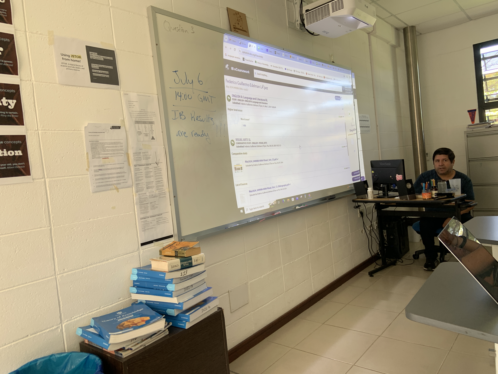Fede's upload
Then they start lauphing at some interview where Boris Johnson lies through his teeth about making model buses. Turner found this really funny.
Meanwhile, Dani, Mati, and Martina talk outside. Mati is surprised that no one is in Turners class, Dani explains that Turner just let's them leave whenever they want. Martina says that she only leaves after like 20 minutes of Turner talking since he always has an anouncement to make, either that or he just starts talking about random stuff. Martina theorizes that Turner has ADHD.
After that, Dani makes a comment on how Turner has a fire music taste, and Luca agrees.
ChemistryAmaral gives everyone a little bit of a timeline, he explains that he will be preparing everyone for the mocks instead of teaching the content because he feels like it's the best move.
They all take a paper 1 and they all do a little bit worse than what they expected.
LunchThe biology class has a biology test about the human body, so while everyone is eating, Fede delineates the process of digestion. Chiara considers just leaving to avoid the test. I don't really know if she did leave.
The biology class has a test, and the physics class corrects their test on the optional module. Everyone did pretty good considering no one died. But in all seriousness most actually didn't do that great. Sebas got only 3 points out of 40.
The first few problems were about experimental science, and they were the same in all tests. Williams corrected these questions, saying that he would later correct engineering questions in the next class, and Relativity and Astrophysics some other time.
Chiara states that she stopped vaping and switched it up for gambling. Santino, Chiara, and Mili have gone to gamble last weekend and they won quite a lot of money.
After that, they learn about circuits, and proceed to answer problems about the electrostatic force. In one of these problems, one has to assume that 2 people are completely made out of water.
Alex and Chad try to speedrun the worksheet but Chad keeps getting stuck on some little issues, like the fact that we implicitly assuming that water is only made of electrons.
Eventually, homeroom happens, Sofe comes to homeroom. Sofe missed all of last week because she got very sick, several students pointed out how she missed an entire week of class, yet she didn't partake in the senior skip day which was the only day where it was acceptable to skip school. Martina leaves to Sylvia's homeroom and later, Lucas finishes his Bio test and joins Williams' homeroom. Lucas says that he has no clue of how he did in Bio.
Bruno goes to film club, Turner asks what the deal is with Sofe, Bruno confirms that Sofe was really sick but now she is feeling better. The film club proceeds to make a script for a 1 minute film.
Later that day, Mati says that all the preparations for friday's movie night are ready. He also apparently convinced the popcorn suppliers to lower the prices, epic move.
Fede establishes throught the groupchat that he wants to burn a book from Moskovicks, Angie then says she would totally burn a book of Hamilton because she hated it. I am not 100% sure, but I think Fede probably didn't agree with this. They plan to do a bonfire at the end of IB where they burn everything
-
Date:05/03/2024
Climate:Sunny
Location:Uruguayan American School
EnglishThey review all the literature that they have read in order to practice for paper 2.
Chiara leaves mid-class because she hasn't been feeling well lately. Moskovicks later pulls Zalma and Mati aside and talks to them about Chiara leaving. Zalma is confused as to why Mosko talked to her about Chiara leaving. Martina missed this cause she went to the bathroom and she agrees that Moskovicks' actions makes no sense
Lupi has a theory, up to this point, most students liked Ms Moskovicks. However this might be the first class that doesn't like Moskovicks. Moskovicks started to realize this after the seniors didn't tell her about senior skip day, it's the first class that doesn't tell her about senior skip day. This made mosko realize that this class does not like her. After that they all play clash royale.
The digital society talks about the enviorment. Timo brings up nuclear power and all the benefits that come with it, Lupi agrees. Javi then brings up the concept of e-waste and how there are incredibly large dumps of hardware waste. Then Javi talks about how digital actions like messages or likes consume energy aswell and thus they still have an impact on the enviorment.
"Now instead of having landfills we can just have art all around" Lupi after San made art out of trash.
Lupi lauphs at the fact that one of the United Nation's goals is literally "No Poverty" and the goal is to half poverty by 2030. Dani comments about how in 2015 when these goals came out, he knew that these goals were not attainable at all.
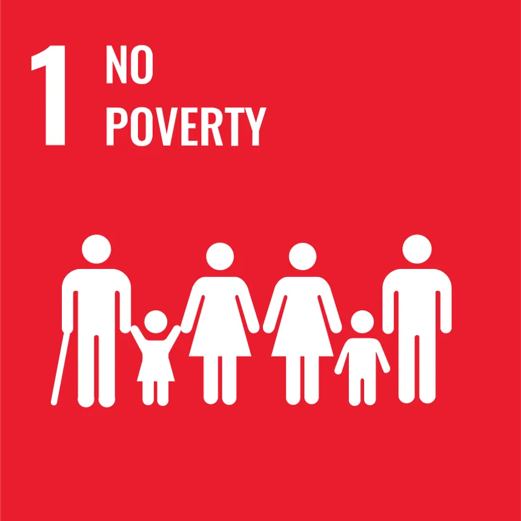Math LunchSeems reasonable
-
Date:06/03/2024
Climate:Sunny
Location:Uruguayan American School
During study hall, Chad and Salma practice for economics, Timo shows Bruno his senior page and Bruno shows Timo a beat he made. Martina falls asleep, Sebas and Dani talk about random shennanigans. Lucas also does some stuff, Chad and Salma realize they might not do great in Economics, and both Sofe and Ethan are here here (A rare event). Chiara however isn't here, she has been feeling really bad lately. Santino tells Timo that Constan is going to the Casino with everyone this friday.
During ToK, Lucas shows everyone a very interesting combination of food. Mandarin, Peanut butter, and a cracker. Turner describes Lucas' experiment as "illegal". Turner also shows Bruno how to make some spicy sauce. They also discuss the reason behind why people of the class took certain humanities.
ChemWhy Digital Society?
Amaral and Mills left for some IB buisness. Amaral is leaving, and Mills is taking over as the IB supervisor. So for chem, Maria is here, and she gives out tests for everyone to practice. And that is what people do.
At lunch, people play clash royale. But they also talk about some other things. Dani and Fede have a small discussion concerning androgenus names. Is Robin an androgenus name? Dani argues that it isn't, but Fede argues that it is. Fede presents the evidence of a main character from the show How I met your mother who is a girl named Robin. Dani presents no evidence and refuses to believe Robin is a girls name. Dani aslo refuses to believe Timo's middle name is Elisabeth despite Fede having seen it in documents before. Dani claims that it's just a dumb thing that Timo said while the UAS class of 2024 was still in elementary.
Random stuff, also Mili wants Fede to talk to his brother so he has better chances to get in StuCo
Sebas dreads the future (Physics class). Everyone turns in the work that they have done with the optional module. Then they learn a bunch of equations relating resistance, resistivity, volts, power, and current. They also learn how to add the resistance of circuits in series and in parallel.
-
Date:07/03/2024
Climate:Sunny
Location:Uruguayan American School
It's Chad's Birthday !!!
Eitoku is back. Sebas had said that he got an entire week of suspension, but it seems like he got off early because of good behaviour. In English class, they all revise books and take notes.
Moskovicks sees that Chiara and Alex aren't getting along so Moskovicks moves them closer to each other. They discuss works for paper 2
In Digital Society. Chiara, Dani, Sebas, and Timo talk about how Dani is not 18 and thus unfortunately he can't go to the casino tomorrow.
Nikki almost gets locked out of her school gmail by Mr Javi because she didn't turn in her homework, Javi has access to all passwords.
Javi about to change Nikki's password
Lupi, Dani, and Sebas talk about accents, and how the Chilean and Spanish accent are the worse, and the Peruvean and Rioplatense accents are the best. They also talk about password hashing, and they find out Lupi's password "Lupinacci7" takes only 5 minutes to crack (4.29 minutes) Lupi's logic behind the password is that his favourite number is 8, so no one would expect him to use a 7 in his password.
After that they talk about places to visit
- Epstein Island
- The timeskip zone
- Japan anime party
Martina arrives. She was absent in English because she had a fever (I don't think that's true), however she got better and she searched for Georginna so that Georginna would remove Martina's absence. She visited Digital Society and asked around for Georginna, but she wasn't there.
MathTHey do their penultimate checkup quiz which no one liked. Then they learn about rounding and significant figures. Physics people have an advantage since they have been dealing with significan figures for a while.
Eitoku tells Sebas about how last weekend while Lupi was cooking up an entire extended essay. Sebas did boxing with Alex. Timo builds several tube paper airplanes, and he also shows Bruno how to build one. Timo also teaches Sebas how to count efficiently
LunchPeople have NHS. Lucas has been making several jokes were he just translates a spanish sayings into English even if they don't work that well.
Saying Translation Nada que ver!? Nothing to see!? No te hagas el vivo Don't make yourself the alive Ni en pedo Not even in fart Then they talk about funny instagram posts. IN one of them, there was a presentation on famous black people. And someone chose George Floyd, he presented one of his most famous quotes "I can't breathe".
SpanishThey talk about times were they cheated on tests. Like a time where Bruno used his phone in the Spanish class and Camilo called him like 7 times but still got no response from Bruno. And another time where Bruno dropped his phone in the middle of a test.
During Advisory, they play Gartic phone and it's as goofy as last time.
-
Date:08/03/2024
Climate:Sunny and really hot
Location:Uruguayan American School - Casino of the Sofitel
It's Alex's Birthday!! And international women's day.
During advisory, Martina works on her Physics IA, Dani does the same thing, and Chad plays some clash royale. He wants to pass onto the next arena but he is finding it hard.
Mili has brought Alex a cake, and they eat the cake, the frosting is a bit too salty but the rest is pretty good. During break, Chad, Eitoku, Alex, Lupi, and Timo eat cake eat in the History class. They don't finish it, so Alex transfers the cake to the Spanish class.

They eat the Cake of Alex
In ToK, Turner puts a love song and Santino is invited into the classroom. An Chiara gives him this pillow.
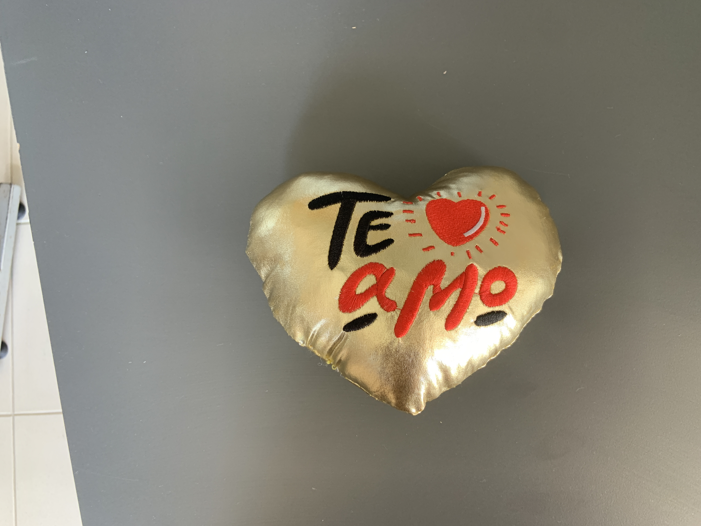It belongs to Nikki
However Santino leaves immediately and Chiara declares that they are in a fight now. Turner and Fede start singing the song.
Fede and Turner singing
In Chemistry, everyone does a paper 3 exam. They are supposed to do it individually, but they don't. Timo puts some music and everyone takes an entire hour to finish the first section. Alex also brought his cake here. Mr Williams passed by and asked for a piece of the cake. While doing the first section, Lupi realizes that Lucas has changed to a different bottle. This is because Lucas' previous bottle broke, but this one is worse because it leaks all the time so Lucas has to take off the cap in order to drink.

The new water bottle in question
At this point the cake looks like garbage because it has been torn apart and taken to several classes. They didn't really cut the cake, they just dug onto it with spoons, so it's all messed up. To make it worse, Lupi grabbed a spoon from the chemistry lab and used it to eat some of the cake, possibly adding some questionable substances to the cake.
Lucas ate the cake and his his hair started falling out.
LunchDuring lunch, Alex and Lupi left the cake at a table and then left.
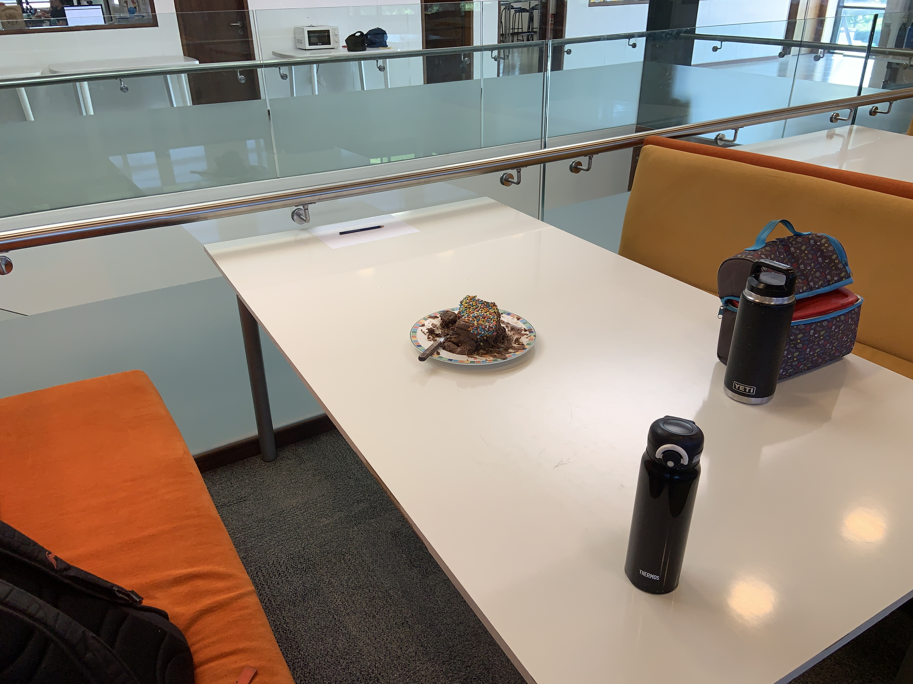Abandoned cake
Then Fabri, Lucas, Luca, Dani, and Timo sit on the table that has the cake. They start making fun of the cake and how bad it looks at this point.
Characteristics of the cake (According to them)Abomination
- Incredibly unhealthy substances
- Cancerous ingredients
- Hydrochloric and Sulfuric Acid (This one might be true due to Lupi using a spoon from the chemistry lab)
- Radioactive isotopes ("Eating the whole cake will result in the same side effects as being near Chernobyl's core while it was melting down")
- Greenhouse gases
- Bacteria
- Shit
Then Fabri makes a video of the cake with a funny sound effect.
He sent it to the groupchat
During physics, all the students are killed by Mr Williams because he presents a topic that has to do with systems of equations that everyone struggled with. Specially the Math AI people which are only Martina, Timo, and Sebas(Sebas unfortunately coudln't come because he needed to do his cedula.)
Williams went really fast through 3 chapters in one class. As stated by Alex "He basically gave up and started speedrunning the entire syllabus." Mr Williams also said to everyone that if they didn't understand the topic immediately then "you're just going to have to give up those marks."
After that torture, everyone goes outside to play human knot. It's a StuCo event. The Class of 2024 struggles a lot with this one.
.jpg)
.jpg) 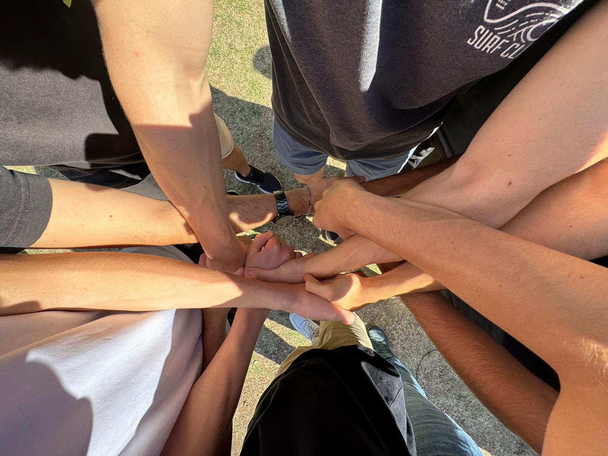
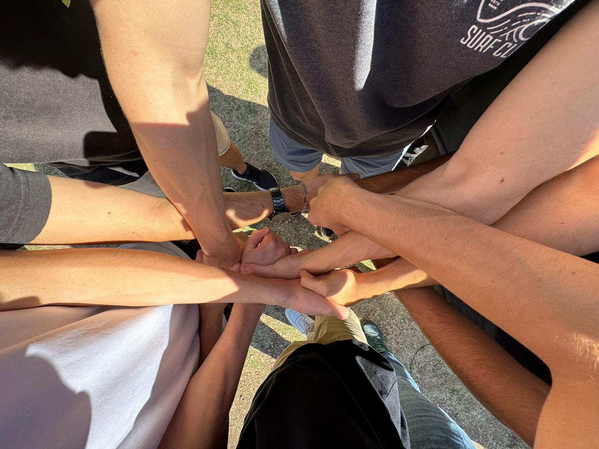
Human Knot stuff

Bruno
Then some people go to the library where they play clash royale in hopes of getting the leader position. They do some interesting stuff this time, for example in one of the matches, Timo picked ALex's deck and Chad picked Lupi's deck. Chad wanted to take it a step further with people picking the worst decks possible but no one agreed to do this.
Then they go to volleyball, Coach Sebas asks everyone if they want to change the time of tomorrow's match from 11 to 13. Everyone says that they would rather play at 13:00.
Then they do some fun training, and at the end of the practice Coach Sebas says that he doesn't give a shit about what everyone said and he is going to make the decision to play the match at 11 because it's more comfortable for him and Nikki.
While all of this was happening, Dani, Sebs, Chiara, Mili, Martina, Salma, and Angie are at the movie night, here are some fun pictures of that. The volleyball squad shows up and plays ping pong. They also send a bunch of pictures throught the groupchat of everyone working.
.jpg)
.jpg)
.jpg)
.jpg)
.jpg)
.jpg)
.jpg)
Movie night stuff
Sebs, Dani, Timo, Luca, Alex, and Chad play ping pong for the first time in a long time. They have all lost a considerable amount of skill. Luca almost losing to Marco Lupinacci.
Dani also plays ping pong against Timo and he actually wins.
The volleyball squad joins them, then they clean up everything while listening to cool music like Down Under by Men at work, Africa by Toto, and Role Modelz by some guy.
CasinoSantino, Fede, and Mili are at the Casino. Mati is trying to get in but he unfortunately couldn't because he isn't 18. They tried to make it so that Mati used Fede's cedula but it didn't work. Timo arrives and sees Mati struggling.
Mili starts to play real roulette, and then Alex, Chad, Sebas, and Lupi pull up in elegant style. Sebas had sunglasses but he couldn't wear them inside so he had to take them of.
Mili starts to play real roulette and she is getting some money. Sebas said that this was more boring than what he expected. They got to a slot machine and try to put a bill in but it doesnt work. They see Chiara, Angie, and others while they are here.
.jpg)
.jpg)
Casino adventures
After unsuccesfully trying to use the slot machine, they go to E-Roulette upstairs. Luca accidentally bets all of his money on one number, but he won, even though he didn't know what he was doing. After that, with the help of Fabri, Luca started his incredible climb where he started with 500 and ended up with 3200 pesos.
Chiara came, bet all in one number, won, did a little dance, and then left. But then Luca started losing some of his money, he dropped down to 2600. Meanwhile Chiara, Fede, and Angie go to the bar. Chiara drinks some shots, the Bartender is apparently the owner (I don't know of what, the Casino? the Bar?) and he gave Chiara some salt because apparently you gotta have tequila shots with salt. Chiara pours some on her fist but then the cap of the salt container falls and she spills the salt all over the table. She used her credit card to collect the salt. The Bartender thought this was an odd reaction.
Then, Angie, Fede, and Timo go to the smoking place of the Casino, it's a place that is outisde and has a great fan so that people can smoke there. They talk about Marihuana, Angie says she never tried it because she feels it would be too strong for her and she wouldn't enjoy it. Fede advises her never to mix drugs. And they gossip a lot.
Meanwhile upstairs at the e-roulette. Luca cashes out, Sebas also Cashes out, and Chad also cashes out. Luca won a lot, Sebas won a little bit, and Chad won a negative amount of money.
Chiara plays again with the assistance of Alex. They win quite a lot. After that, people start to leave. Sebas says that once they started to play E-Roulette, he started having fun. Lupi and Alex made quite a lot of money.
.jpg)
.jpg)
.jpg)
Gambling stuff
Then people start leaving, here is the conclusions
- San won a lot
- Alex and Lupi won a lot
- Luca won a lot
- Fabri won a moderate amount
- Sebas earned a moderate amount
- Chiara won quite a lot
- Chad won a negative amount
- Timo forgot his cash
- Fede didn't bet
So one last thing. Alex gambled it all at the last minute and won 1800k thanks to Lupi's advise of putting everything on 8 (Lupi's favourite number).
.jpg)
.jpg)
.jpg)
.jpg)
Alex (Thanks to Lupi), San, and Mili won a lot of money, the rest also won quite alot, except Chad.
Everyone leaves eventually. It's raining.
-
Date:09/03/2024
Climate:Sunny
Location:Uruguayan American School - Volleyball CDV court - Portones - Lon Tennis Solymar
.jpg)
.jpg)
.jpg)
Martina said that Sebas looks amazing in this Casino outfit
There is a volleyball match. Timo and Lupi arrive really late to the Uruguayan American School, and Timo forgot his shirt. So they go to the volleyball court.
Some person hits his head really hard against the floor, he was bleeding, and some paramedics rushed to the scene it was really serious. Then Eitoku came, he has finished the SAT and he is ready to play, he came in an Uber with Mateo, while in the Uber, they played clash royale and Eitkou destroyed Mateo.
Sebas(coach) put Mateo as setter instead of Timo and Alex as middle blocker, leaving Timo and Lupi out. They didn't play for the entire match, which was COach Sebas' way of teaching them the lesson of not being late. Mateo as a setter wasn't half bad though. Here are some clips.
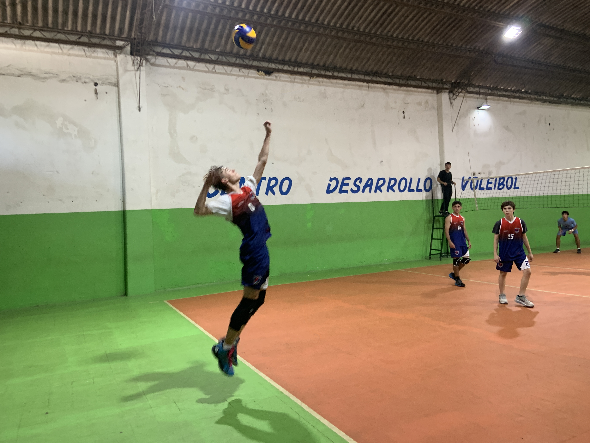They won the game
Everyone was really thirsty, Chad went to get water but in order to get water he needed to pass through a room where the other team was having a team meeting. Chad didn't want to interrupt and so he didn't get the water.
They all decide that after arriving at the UAS, they will go to eat something at the prtones shopping. While going there, they discuss two things that I remember.
They discuss fights of the class, Ethan against Bruno is one that comes up, Bruno is said to win because he is stronger.
Eitoku and Timo discuss romours, some true some untrue, that Bianca spread of him. Eitoku doesn't like Bianca because of what she has said about him. Timo agrees that rumour spreading is bad even if the rumours are true. They also talk about superseniors, which are seniors that date people from grades below, here is a list of superseniors in our class.
Santino
Eitoku (Once with Agus I think)
Nikki
Martina (With Rafa)
When they get to Portones, they had a small discussion about weather McDonalds or Burger King is the better burger place. Lupi and Alex argue Burger king is better while Chad and Luca are the opposition. Eitoku just ordered some Sbarro stuff. Eitoku gets his food first, Burger kind comes second, and McDonalds is last.
Eventually the McDonalds stuff comes and Luca is missing a burger while chad has some extra fries that he didn't order. Luca gets his extra paddy but Chad does not give up his extra fries. The Burger King burgers look better than the McDonalds burgers. Luca's burger was acceptable, but Chad's burger looked bland and pale compared to the Burger King burgers.
Lupi tries Chad's burger, they all try each other's drinks, but they don't reach a consensus and both teams believe that their fast food restaurant is better.
They talk about the fact that Alex's family will be leaving to a relatively dangerous place. I don't remember the country, I think it was isle of man. Eitoku leaves via Uber and he meets with some japanese Ambassadors that just happen to be there. Alex has met them before and apparently they are super nice. In a work meeting that they had, it seemed more like a family reunion and less like a work meeting.
Lupi comments on how more and more people are moving to Uruguay because it is a relatively safe place. The US is very volatile and has guns and europe has the whole ukraine-russia and palestine-israel situation. ANd Uruguay is the safest place in latin america.
They get ice-cream, and then they start their way back to school. On their way back to school, they talk about fights again, they conclude Sebas would beat the shit out of anybody and Ethan would get clobbered by anyone.
They also start talking about Florida, Australia, and how it contains dangerous animals. They reach school and then they leave.
Timo's Final Birthday Celebration
Luca is the first to arrive. Timo had told Martina to bring a volleyball and Fabri to bring a football. Fabri advised Timo that he should tell Luca to bring the ball since he might forget. But Luca asks Fabri to bring a football.
There is a ping pong table, a footbalito, and a airhockey table. Luca and Timo play a ping pong match and they talk about stuff. Timo mentions an interesting story of how Dani said that he wasn't going to be able to come because he woke up at 9AM and he was tired. Timo accepted this fate and wished him luck on his physics IA, but then a miracle occured Dani decided to come nonetheless, he had given it some thought after eating somethign and regaining energy, it was Timo's last birthday, so he made an effort to come.
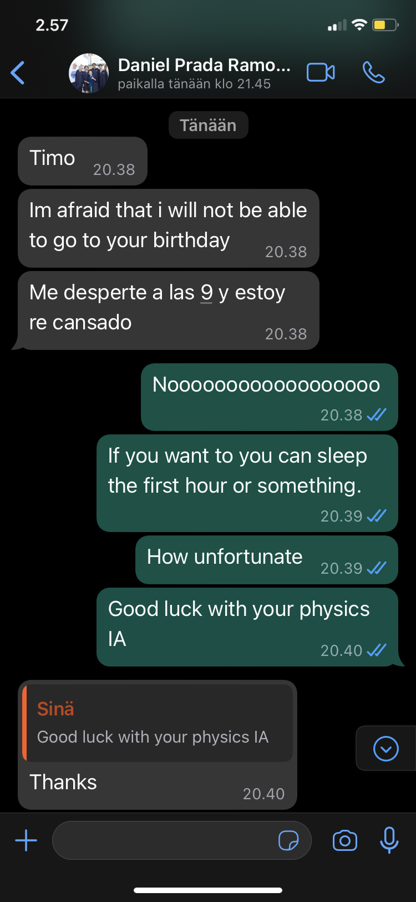
Dani's text messages
Luca commented "ah, asi que solo hablo por hablar". Luca also talks about how bad the other volleyball team was today, and how they are surprised that they had lost to this same team previously.
Luca wins 2 games and then Salma, Mili, Nikki, and Mati and others arrive. Salma and Nikki briefly play airhockey while the rest sit down at a table and talk about stuff as more and more people start to arrive.
They all sit down at table and they talk about the Casino and how Alex made 1800 from 500 yesterday thanks to betting to Lupi's favorite number and how Chad and Lupi were the only ones to not have won nothing. Dani arrives eventually, and he asks if there is a ball. Fabri also arrives and he establishes that he succesfully forgot to bring the ball. Martina also forgot to bring the volleyball this is so unfortunate.
People start playing ping pong, like Alex, Lupi and Chad, while others play futbolito. However the futbolito is dark so they use a lamp to illuminate. The teams are Ethan and Sebas against Eitoku and Timo. The latter destroys the former. Eventually they move the futbolito to the light and stop using the lamp. This is because the ball sometimes gets stuck in the inner mechanics of the futbolito so they had to tilt the whole table, resulting in the lamp to fall.
Eitoku lights one of his cigarretes with a candle that was on a table and people start playing some ping pong. The table is very humid because the air is very humid.
Dani and Sofe have a small talk about why men should give gym tips to men and women should give gym tips to women. They have this talk while playing ping pong and SOfe actually won that ping pong match. Then Sofe and Timo play, they have a very long match. Then Dani asks Timo how does it feel to have lost against him yesterday, Timo says that he is proud.
Some girls start to sing karaoke with a screen that was inside. And some other people go to the nearby playground.
In the playground, people go to the seasaw and the swings, and Fede tells Mili about 3 stories that he remembers about elementary.
- A small fight with Angie about their last names
- Valeria was Fede's girlfriend
- Tricycle toys
At this point Fabri, Luca, and others went to get a football at Fabri's house and most people left playground and went to play ping pong or do other stuff. Mati, Mili, and Timo are there. Mati shows a cool trick with the swing where he flips. Mati used to do gymnastics with Valeria when he was a kid, he doesn't do it anymore but he still remembers some things.
Epic Cartwheel
Then Mati leaves, Mili and Timo talk about their day. Then Sofe joins and Mili asks Timo to explain quantum mechanics to her because she needs to write an essay on that. Sofe is ultra confused and she understood nothign while Mili did understand somethings.
While that was going on, most of the boys went to play football in a football field. However they are only playing passes and making jokes. Timo and Eitoku join, and they start a match. But not before they find Frogger's cousin.

Frogger's cousin
Timo also finds a glowing ring from the other party which he throws with all his strength in an unspecified direction and it hit Sebas. Timo apologises a lot
One team is the team with shirts, and the other team is the team with no shirts. The no shirt team is winning by a lot at first, but the match turned into a satire match after Timo (The goalie) dribbled all the way across the field towards the oponent goal and then he missed.
- Dani scores a goal
- Santino misses the ball a couple times
- Eitoku actually was a really good goalie
Here is the whole match, but not very well filmed.
After that, they go to some benches, in Timo's previous birthday, Martina played an anime ryhtm game in these benches. Everyone feels itchy and their shoes are completely ruined because the grass was humid and so all ther grass blades stuck well to the shoes.

Sebs and Chad
While the soccer match was happening, the girls+Fede and some others were doing karaoke and just dance, they did this for like an hour and a half. Pauli, Bianca, and Leo also went a gossiped about current interesting events. The football team returns to find the girls singing some songs.
They sing songs
Sofe is at the swings talking to Angie about film, Angie apparently has a relative that is interested in acting. Sofe knows alot about this because she is studying to be a director so she knows which places deal with this cinematographic stuff.
The girls are all still singing some random but good songs.
Some people starts eating ice-cream and the music gets lowered. Sofe and Timo talk about the Sofe-Fede relationship. In case you aren't informed, Sofe and Fede have hated each other since the beginning, the reason behind this is unclear since both are smart and nice people. Sofe says "I want to gouge his eyes out with a spoon" because she hates people who hate others for no reason. Timo finds this quarrel comical. Suddenly, Eitoku and Fede pop up, apparently they were at the swings talking this whole time.
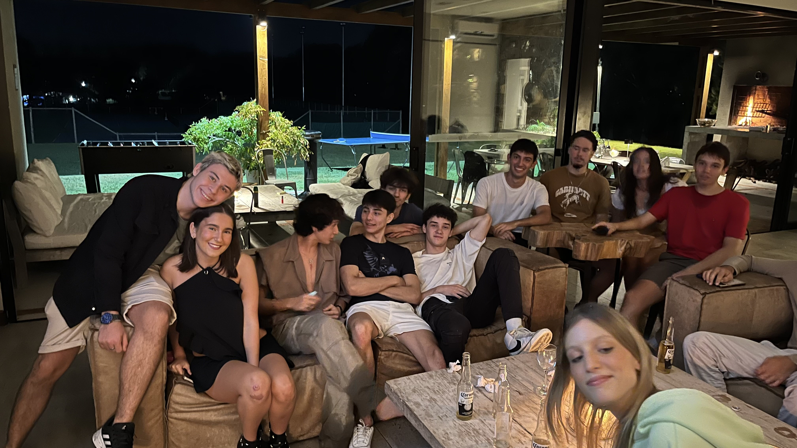 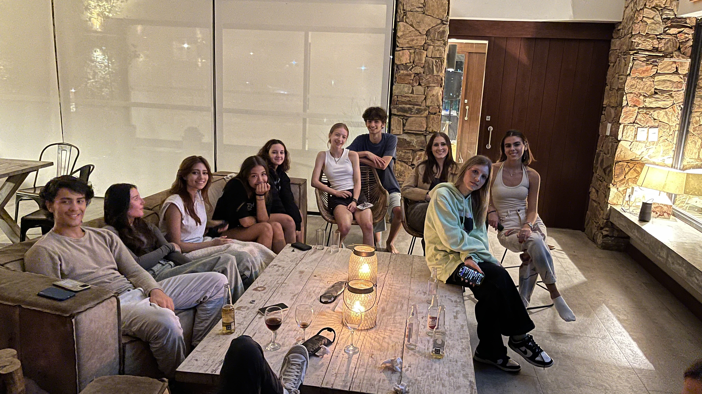They stopped the music after a while
Also, we lost Ethan along the way, I don't know when or why he left.
Dani shows some reals to Sofe and Eitoku. One reel is specially relatable, the reel is about teachers having bad breath, and Mr Amaral's breath is usually not great. He is still a great teacher though. Then everyone starts to use their phone, eat ice-cream, and play clash royale. Eitoku and Sofe go away to talk about some rumours that Bianca spread about him.
Then people start to leave. Chad, Eitoku, Lupi, and Timo are the ones left. Eitoku is petting a dog while the rest says by to the ones who leave. Fabri goes to ludicrous speeds which enfuriates Nikki.
The dog Eitoku was petting
After that, they go back and find Eitoku petting a dog, the dog is very scared so Chad approaches it carefully. The dog smells chad and then leaves
They form a plan where Chad and Lupi are left at their house, and Eitoku takes an Uber from Lupi to his house. Now the only ones left are Chad, Eitoku, Lupi and Timo. They have some interesting talks as Lupi heats up a burger procedurally using the remains of the fire, and the rest eat slightly humid chips with bread and coke.
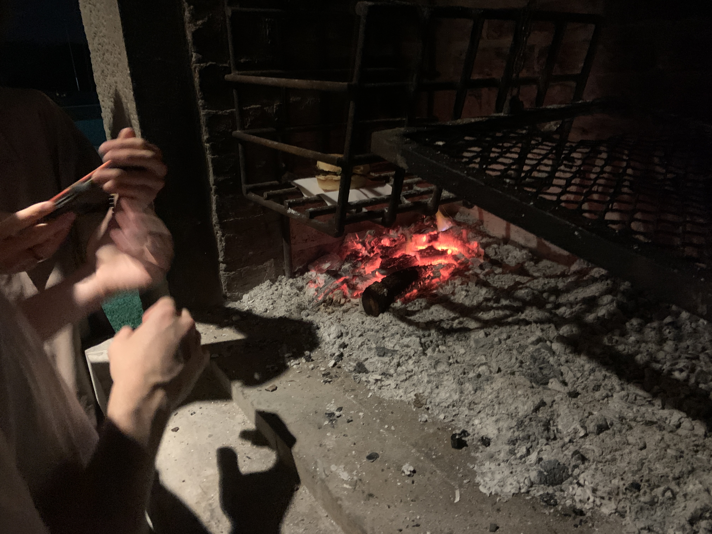Lupi cooking
-
Timo's Birthday
Timo is really happy that almost everyone came. Bruno and Guille were the only ones from the class to not have shown up. Constan and Nata were supposed to show up but they couldnt't. "Timo I want you to know that your birthdays are like a national holiday for like our grade. Like they're, they're like a time capsule, they're like a reference of how much time has passed" - Lupi
Eitoku also mentions that the shirt he is wearing is the shirt that Eitoku wore in the previous birthday. Chad mentions that his birthday is brand new and has nothing to do with the past. Timo mentions that he likes to make his birthdays a reunion of everyone, even before Chad and Lupi were here.
-
Eitoku and his rumours
So Eitoku was with Agus which is a girl from another grade. Now this girl called amine was texting her and she is from 9nth grade. Eitoku doesn't know what to do. Lupi helps him by sending an emoji of rice to amine through Eitoku's phone.
-
Lupi and fire
In 2016 when Lupi was living in Uruguay, it was the first time he had a fireplace. And he would live the baton in the brazas for a while and it would be all red, and then he would draw stuff in the fireplace walls with it.
-
Eitoku stuff
Eitoku claims that cigarretes make you feel warm, but in the heart.
Eitoku says that he like hot dogs with chips. He used to have them in Venezuela all the time. Lupi has never been to Venezuela and Chad states that he will never go to Venezuela. But Eitoku says that his funeral will be held in Venezuela and thus everyone must be there at least once in their lives.
Chad says "you are going to go to my funeral, but I won't go to yours" implying he would rather die than go to Venezuela. "It is crazy that one person, will have to like, go to all of their friends' funerals" - Lupi. They discuss who is going to be the last standing and the first to fall. They conclude that the first to fall will be Eitoku because of drugs or Lupi because of some stupid shit like falling off a cliff.
-
Next Bite
They talk about the order with which you eat food. There are several theories as to the best way to eat. There is saving the best for last, not eating the part you don't want. Eating all the bad parts first and the good parts then. Or you put it all in a smoothie and it's all equally good and bad (-Lupi)
-
Drinking
Chad and Timo never got drunk. Chad had gone to Europe and he drank for the first time but he never go drunk. He went to Germany, Switzerland, and a little bit of France but not paris. Eitoku says that he can go to china through paris and Lupi states that there is a portal between paris and Shangai.
Eitoku says that there is a fake paris in china with an Eiffel tower and Timo condluced "There is a fake everything in China."
Lupi likes the humid lays chips, "they are a little bit stale, but it's nice". Lupi starts warming up some buns in the fire for Eitoku.
"Nah vegetables are crazy bruh" - Eitoku (I don't know why he said that but I think it's something worth remembering)
-
Lupi sleeping and blue zones
After going to Portones, Lupi was kind of tired. He sometimes puts a documentary and sleeps while listening to it. So after he came back from portones, he took a nap and listened to a documentary called 100 years. It was about ways to live 100 years. And what people do, is go to these places called bluezones. Chad and Timo have heard of this before, but not Eitoku.
In the blue zones, people don't eat much meat, they eat a lot of vegetables and complex carbohydrates. And it's also very hilly terrain, meaning that people are constantly active and doing exercise. Okinawa is a blue zone in Japan. Lupi also states that to live longer, people have to eat until they are 80% full. He says this rule to Eitoku in japanese.
Anyways Lupi didn't actually go to sleep because he was really interested in the docuentary.
They talk about how sometimes, Eitoku goes to sleep but he can half-listen to a documentary. Chad's father (Mr Murphy) can be sleeping to the point that he is snoring and he can recite word for word what happened while he was sleeping.
-
Cold Coke
Apaprently slightly frozen coke is really good. Eitoku asks if there is any word for something barely frozen he suggests the word "glizzy". The actualy word is slushie and glizzy is a gun and a hot dog.
According to Lupi, that coke was really good, it was cold and syrupy.
Timo leaves Chad and Lupi at their houses, Eitoku is left at Lupi's since Eitoku's house is incredibly far away. Also, San goes tot he Casino for 20 minutes, puts in 3000, and leaves with 6500.
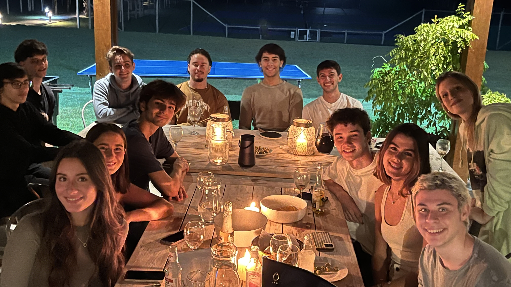The last of Timo's reunions
-
Date:11/03/2024
Climate:Cloudy
Location:Uruguayan American School
Martina's brother set an alarm for a fortnite event. The Alarm didn't sound so he missed the fortnite event and he gets really mad because of this.
Alex and others go to Mr Turner and they talk about how much they earned at the cassino. Alex is wearing a hoodie today for some reason.
Fede talks bad about Sofe, saying that she hasn't turned in her English HL Essay and her Comparative Study for Arts. Fede also complains about the fact that to go to UCL he has to get a 7 in English which is practically unheard of. Only 3.9% of the people who take English Lang and Lit get a 7.
Fede also gets told that Eitoku is currently in Japan, but he knows this is a lie.
ChemAmaral is still not here, and Maria still hasn't arrived, so the chemistry people start to just talk. Timo had published a video of Amaral making Isoamyl acetate (boiling water for one hour) to the chemistry google classroom. However Lucas told him to take it out because Fabri was saying some suspicious things about Amaral. He was also saying some things like the n-word with vinegar. This is because they were doing a reaction with ethanoic acid which is a component of vinegar.
They also did some new translations
Saying Translation La concha de tu madre The Shell of your mother Tremendo Mongolico Tremendous Mongolian La puta que te pario The prostitute that birthed you Negro de mierda Black of shit Then, Lupi tried to find the prism glasses and everyone helped him, but he failed. Maria comes and says that Williams reported "unruly behaviour" from them. But everyone was confused because they didn't really do anything bad.
Maria gives them a paper 2 exam. The paper 2 has several questions, however question 1 is like 5 pages and no one finished it. It had to do with phosphorus reactions. Sebas also tries to convince TImo that Eitoku is in Japan. Timo messages Eitoku and it turns out he actually is in Japan.
LunchEitoku is not in Japan, he lied.
Sebas and Timo go to get their lunch, however they find out that their lunch has been delayed. They see the rest of the Eitoku, Chad, Lupi and Alex going to the elementary wing table. This is something they have been doing quite often. Sebas and Timo decide to follow them while talking about chemistry and studying for chemistry since Sebas did not understand anything from the paper 2.
When Sebas and Timo arrive to where the others are, they have to go all the way back to get their food. Timo tries to take a shortcut through the construction zone but Jeff catches them. They ended up taking more time and Timo comments "more haste less speed".
They get their food and come back. They talk about how in the US there are George Floyd plushies and they also spit some bars relating to Georgy Floyd like "So many chains on me I can't breather"-Sebas and "Black lives no longer matter"-Lupi.
A teacher comes out to say that they are using "language that is okay in high school but not here" since they are in the elementary wing. They are sitting outside but the classroom next to them still heard them. Then they talk about how black people have a black history month but others don't, there is no bulgarian month or jew month. Then Lupi says the following about Jews. "Jews are not minorities, Jews make the most money out of any ethnic group" and then a teacher looks at him through the window.
Then they talk about reddit stories and how Lupi saw this story about a woman who took everything from her husband.
Timo records some teros
And then they play clash royale
WIlliams is in a meeting for the first 15 minutes of the physics class. During these 15 minutes, they talk about last volleyball match. Luca tells Timo not to be late for the next match because they want Timo to set instead of Mateo. Timo then shows everyone the videos that he recorded while everyone was playing that day. He airdrops all of them to everyone. Luca also tells everyone that he couldn't send the videos of the egg trials because they were too many since Luca recorded each trial seperately. Timo advises Luca to put them all in a google drive folder and then send the link.
Then Williams arrives and they all recap last class which Sebas and Mati didn't attend. They also learn a new equation that describes the internal ressistance of a battery and they answer questions about it.
During homeroom, Lupi says that Timo using his yellow pen is autistic. The yellow pen's writing is very hard to see.
-
Date:12/03/2024
Climate:Rainy
Location:Uruguayan American School
During English, Moskovicks talks for hours about Things Fall Apart and Othello. No one finds it useful but no one has the guts to say it. Fede is tired but any time he stops listening to Moskovicks she scolds him for it.
During break, everyone plays clash royale in the computer lab, and also the StuCo officer elections are held. Alex mentions how he could barely stay awake during Moskovicks' monologue. At some point Moskovicks asked "Is everybody finding this useful?" and everyone lied.
Moskovicks also informs everyone that she wants all assigments in paper, so everyone that has turned their assigment in google classroom now must go to print it. Some peope weren't here, like Chiara and Ethan, and thus they miss out on this information.
During Digital Society Lupi, Sebas and Dani look at countries and streets with goofy names. Also, Chiara and Santino are not here today. Dani judges Timo's song called "Sound End", and then both Dani and Sebas try to rap over it. Ms Mills arrives and makes Timo turn in the extended essay, this makes sebas realise that he hasn't turned in his, so Timo actually turned it in before sebas.
Dani and Sebas rapping
The math class does it's last checkup quiz about measurments and uncertainties. They also play this new game called linxicon which is about word asociations.
Math!!!!!!
During lunch, the Alex, Eitoku, Chad, Lupi, Sebas, and Timo go to the elementary benches where they play clash royale against Eitoku who is the leader. Eitoku has now officially been the leader of the clan for 4 days which is an insane record. In order to become the leader of the clan someone has to beat the current leader, I don't know if I ever explained that but now you know.
During ToK/Spanish, Timo joins the ToK class for a quick meeting with Turner regarding the ToK essay and the form that comes with it. But then amaral comes and he elongates the duration of Timo's stay by making everyone sign up a form. Meanwhile, Fede was having a meeting with Derreck Gay about ways to be more inclusive in UAS.
ToK
Spanish class analyses poems.
Also it is really rainy and Martina left for unkown reasons at some point in the day.
-
Date:13/03/2024
Climate:Rainy
Location:Uruguayan American School
LunchThe cafeteria is now ready, look at these videos.
Study hall 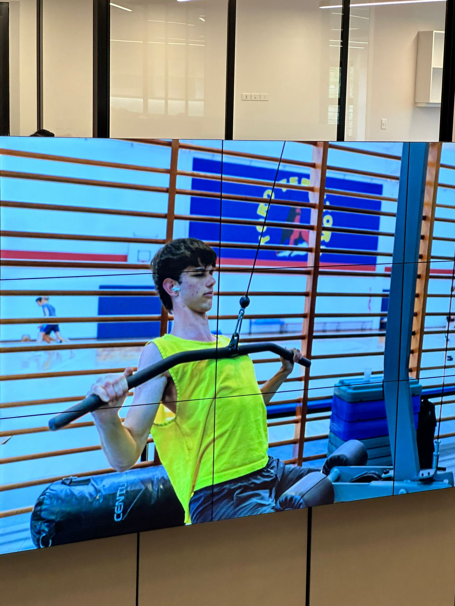
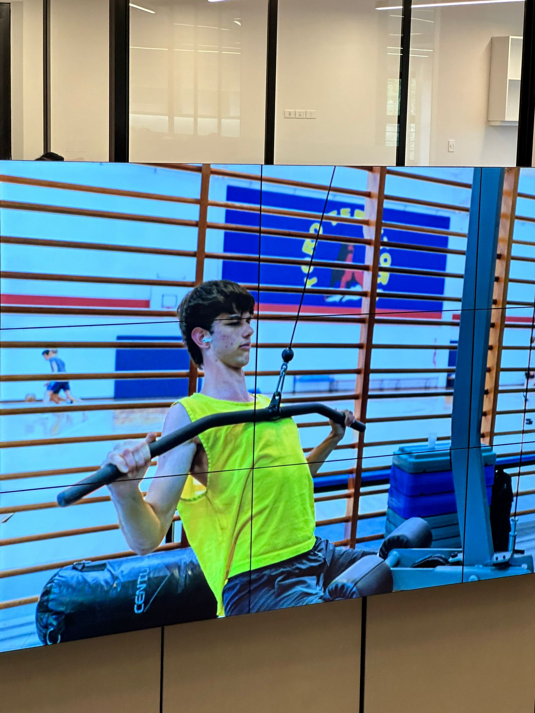
The new and improved cafeteria, I liked the old one better
Lucas and Dani critique Timo's carefree way of life. They make fun of him for not knowing the months months and constantly forgeting things. He also gets average grades because he doesn't study which Dani mocks. Mr Elder joins the conversation and he is very intigued by how everyone in this tiny group is switching between spanish and english and also how they are having an interesting argument considering everyone's ideas. Dani explains that they are just making fun of Timo's lifestyle. Mr Elder tells a tale of how he once lost his airplane ticket, so he stayed in the airport bathroom, and when no one could see him, he jumped over the fence and got on the airplane. Elder says that everyone's got their own lifestlye, and as long as it works that's good.
During, Chemistry, everyone takes an experimental science test and everyone does pretty well. The test is about a student that accidentally measured the temperture of a neutralisation reaction in a titration instead of measuring the pH. And all the questions are about how this information can still be used and why it should never be done this way on purpose because it increases the chances of error.
Fabri brought some snacks and Timo brought rustic chips. One question asked was something along the lines of "What can be used to measure the volume of NaOH more precisely" Alex said" using a higher volume of NaOH", Timo said that "using a volumetric pipette instead of a measuring cylinder", and Lupi said "using a more precise measuring cylinder". The answer key it very clearly said [Do not accept "Use a more precise measuring cylinder"] which was kind of funny. Alex's answer was correct according to Amaral, but it wasn't in the answer key, however if Amaral were the one grading this test, he would still give a point to Alex. Timo's answer was good.
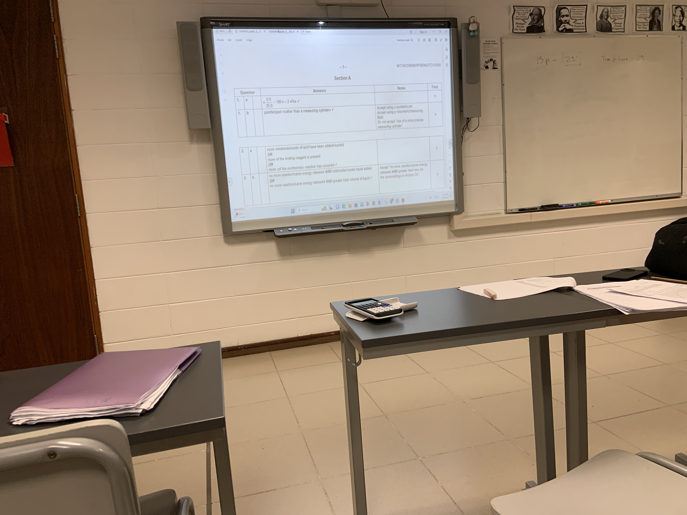LunchLupi getting targeted by the IB
During lunch, they use the new cafeteria for the first time, Sofe thinks that the table division promotes bullying. Eitoku, Timo, and Lupi play clash royale. And Taconne tells Eitoku via a phone call that Kagura is coming to SAAC Fine Arts (Tomorrow). This is a lie
In physics. Williams puts a video of Bill Nye the science guy for him to quickly explain magnetic fields to the class. Then he very quickly explains the 3 hand rules for the motor effect, the generator effect, and the maxwell one. After rushing through Magnetic Fields, standard level completed the syllabus. No one understood anything, but at least SL is officially done and they can study for the mocks in peace.
Later that day, there is a basketball game, some poeple from SAAC Fine Arts have arrived here aswell.
Unfortunately I couldn't get a video of them scoring
Also, the SAAC Fine Arts preparations are happening


The stage and the instruments
Later that day, Timo congratulates the SL Physics class for finishing the syllabus. Ethan has not been attending school lately due to unkown reasons. Ethan didn't come to school.

Ethan was not there, I corroborated
-
Date:14/03/2024
Climate:Rainy
Location:Uruguayan American School
The SAAC Fine Arts people have arrived and there is an opening ceremnoy that occurs. They do a tango dance and candonge dance. This is awesome because instead of withstanding another english class, the seniors get to watch a dance instead.
The SAAC Fine Arts
But eventualy the opening ceremony ends and Moskovicks resumes her class which is mainly comprised of her talking and everyone dying of boredom. They do some useless thing that I don't have the brainpower to try to remember

Mosko stuff
Digital SocietyThe computer lab is currently being used by the SAAC Fine Arts media crew. SO Javi gives the digital society class a study hall in the library. Alex joins this study hall.
MathDuring Math, Zarsky gives everyone a study hall. Lucas and Sebas are allowed to leave. The rest stay here, also during Digital Society, Chiara arrived.
Santino gets some help from Timo and Zarsky about Math problems.
The mothers are in charge of organising some stuff for prom. Timo's mother made Timo be in charge of creating the sitting arrangement. During Lunch, Timo tells Sebas that he has created the sitting arangement for prom and that he knows with who Sebs will be sitting with. Sebas said that he already knew this and Timo is surprised and he apologises. But Turns out Sebas didn't know shit and he just lied for no reason. So Timo tells him that he is seated with Chiara, all because Martina's mom didn't want to sit with Chiara's mom and prefered to instead sit with Fede's family. Sebas is unhappy with this.
During Spanish class, many people are missing like Ethan, Bruno, and Santino. Bruno has SAAC Fine Arts, Ethan has missed every class in the week, and San was helping SAAC Fine Arts drama.
-
Date:15/03/2024
Climate:Cloudy
Location:Uruguayan American School
They put a previous SAAC Basketball game in the big screen on the cafeteria during break.
During Math, Fabri and Chiara play clash royale since Mr Zarsky gave them a study hall. Mr Zarsky goes around and asks what everyone is doing.
Timo:Digital Society IA
Lucas:College Stuff
Fabri:Clash Royale
Chiara:Clash Royale
Mr Zarsky tells Fabri and Chiara to put their phones away.
Timo also gives Lucas a very old barrita de cereal which he had in his backpack for a long time.
Also Chiara asks Zarsky if he will be going back to the US and Zarsky says that he will be staying in Uruguay and getting a job here.
The SAAC Fine Arts students are still here, let's take a look at what they are doing.
Working Hardly
Spanish class reviews some of the books for the Mock exams
After classes end, Eitoku, Mati, and Timo go to the flex space where some guitars were left by the SAAC Fine Arts Musicians. Eitoku and Timo start playing the guitar and they try to teach Mati some songs. Timo tries teaching him wonderwall but then Mati insists on Eitoku teaching him another song. Mati kind of gets it but then he gives up immediately. The Eitoku learns a song and he plays it while Mati sings it. Eitoku and CHad then go to Basketball. Timo and Mati assist the media crew for a little while. However the media crew was nearly done at this point.
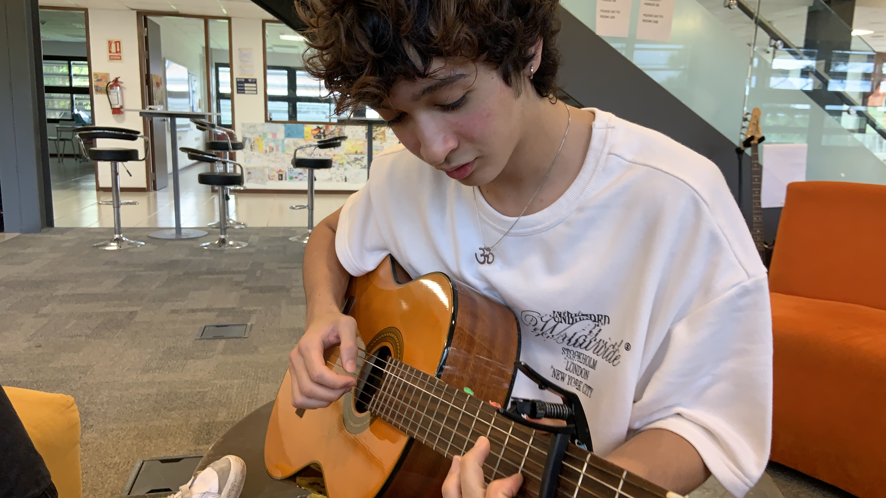 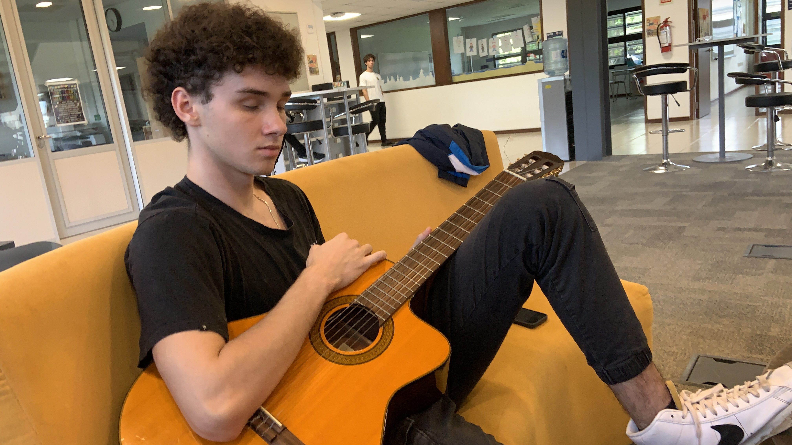Eitoku and Mati Guitar
-
Date:16/03/2024
Climate:Rainy
Location:Uruguayan American School - CDV court 2
Today, volleyball happens. First, everyone reunites in UAS. All the SAAC Fine Arts students are here preparing their arts for the final ceremony. Marco arrives without shoes, saying that he has forgoten them in the house of Mateo. On the bright side, Lupi and Timo arrived in time. So everyone gets in the bus and heads to the CDV court.
The court sucks, it's raining and some water leaks through the roof, there is also little space to serve and the floor is very slippery. Mateo arrives with the shoes of Marco. Here are the ones who played.
Outside Middle Opposite/Setter Marco Lupi Mati Luca Alex Timo It's UAS against the strongest CDV team. This will be touph. CDV starts with an advantage, they are winning 2-0 in sets. Luckily it's best of 5. UAS locks in and wins 3 sets in a row ending with a point done by Lupi. Here is everyone celebrating. What an incredible comeback.
They celebrate
Alex and Lupi go to Alex's house while the rest leave from UAS to their house. All of them except Timo, he goes on a little adventure.
Timo's Infiltration
Timo wanted to participate in SAAC Fine Arts, however this is the senior IB and he had to spend a lot of time finishing all of his IAs, his extended essay, and his CAS stuff so he couln't afford to practice the music sheets that baranzano gave him. However Timo heard some time ago about someone's plan to just infiltrate SAAC Fine Arts and he liked the idea. I don't know if that person actually ended up infiltrating though.
SAAC Fine Arts is a time consuming event, the media crew has many videos to film and edit, the thespians have their acts to practice, the visual artsits have the mural to do, and the musicians are the busiest since they have to learn several songs which takes time. But at this point, the media crew and the visual artists were practically done. The mural was complete, and all videos were mostly complete, Bruno was just adding some finishing touches.
The Fine Arts practice
Bruno and Sofe had a small arguments about what to add and what not to add. But then Timo arrives. Timo has a plan to obtain a SAAC Fine Arts T-Shirt with Mr Turner's design and he wants to infiltrate and participate in the final song event at the closing ceremony.

Sofe, Bruno, and Tobi
In his search for a T-Shirt, Timo encountered Vera and Jorge playing the piano and the guitar. This encounter happened multiple times until Jorge inquired about Timo's meandering. Timo explained his goals, then he sat down, and they all chatted for a bit. Then they sang wonderwall together, and Timo resumed his search.
Turner had said that there was a extra large T-shirt that no one wanted because it had a spot of dirt or something. This spot of dirt was beyond the scope of Timo's worries. This shirt was in the possesion of drama teacher Claudia Carvalho. So after searching for Claudia for half an hour, and playing ping pong against some artists, Timo aquired the SAAC Fine Arts shirt. Jorge had also provided him with a collar that the SAAC Fine Arts artists had.
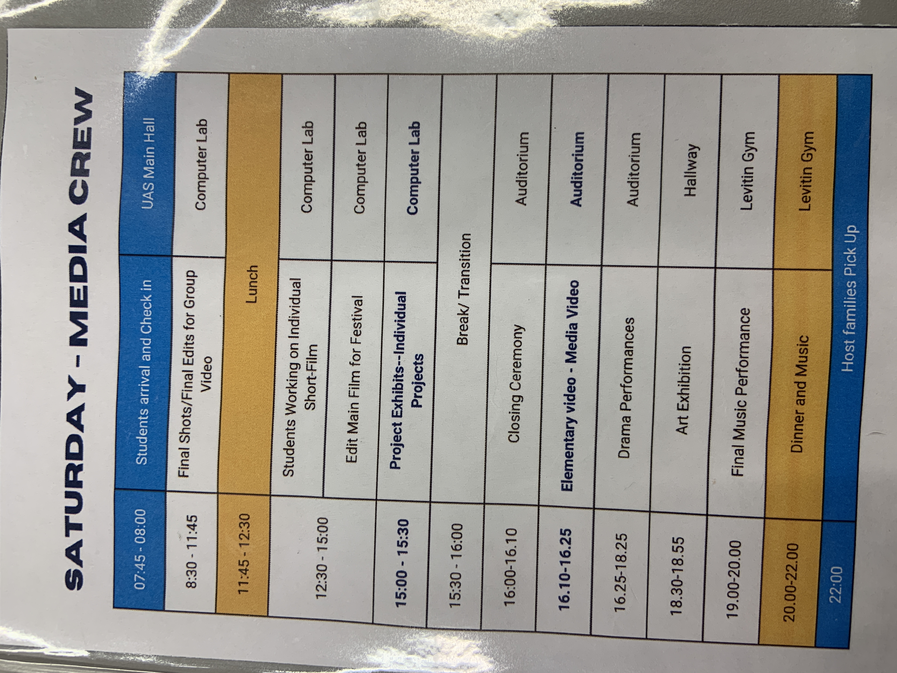
Timo succesfully aquires a badge and a shirt
Then the Final Ceremony occured. Here are some clips, or if I get the final video, I will put it here. I just need Nicolas Bruni to do his job and make the livestream public in the UAS youtube Channel (I told him like 6 time and he still hasn't done it)
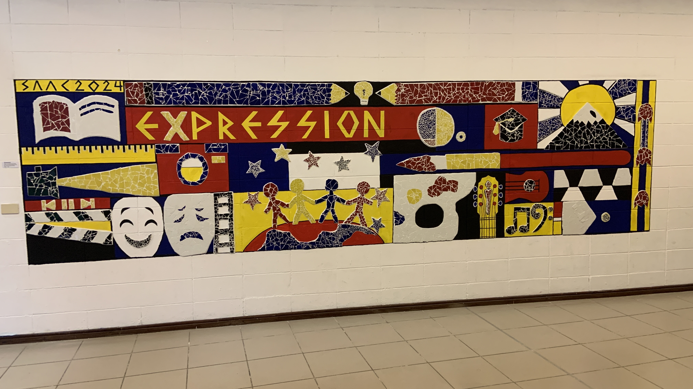 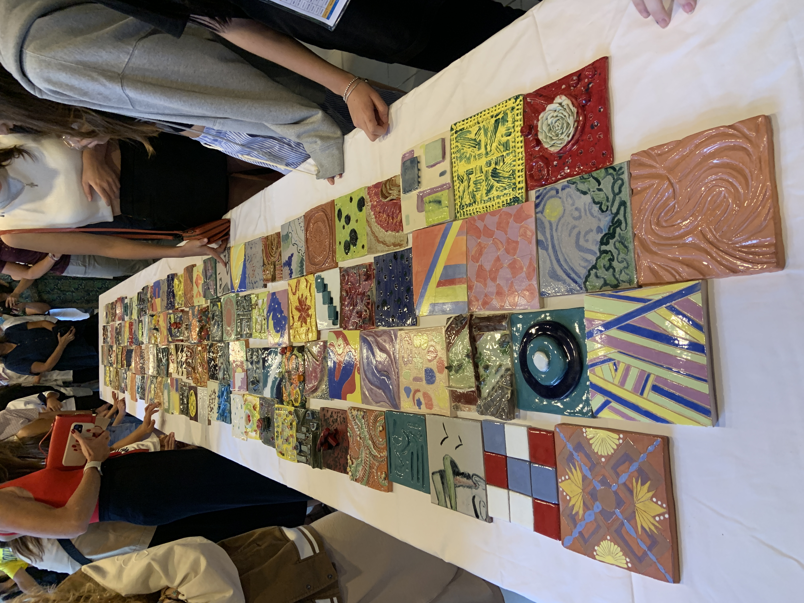The Fine Arts
Then they had pizza and it was very fun.
In this day, Megan informed the Table Tube Gang about how one of her friends that she used to see every day has died from a car accident, and one of Corey's childhood friends died from drugs.
-
Date: 17/03/2024
Climate:Sunny
Location:Burdeos Al Pinar
Nata's Birthday
People who attendedAt first, they sit inside the restaurant and they play an interesting version of UNO where every card is a wild card and there are no numbers. They play for a little while until they realize that they don't really like the game. Eitoku says that Alex is a bitch for not coming here.
More and more people start arriving, including Vicky. Eitoku had made out with Vicky and he also ghosted her, so it was kind of awkward for him. Nata proposes for everyone to go to upstairs which leads to an outside place with tables. Eitoku and Timo go here first, they discuss true natural red hair(Not orange hair) and weather it exists or not. Timo searches it up, and apparently it does exist. Eitoku also states that asian people can't be blonde, red, or brown haired. Only black
Eventually everyone comes up and they divide into a bunch of tables. Nata, Matilde, Natalie, and Vicky are in one table; Eitoku and Timo are on another; Renata, Melissa, and some other football players that Nata became friends with are on another table; Juanma, Sofy, and Luna are on another; and finally Lara, Taijia, and Mili are on the last table.
Then they quickly go back down where they take a picture. Eitoku and Nata sing a song.

Song and Picture
Timo and Eitoku talk about how to fix the world. Timo believes that we have to accelerate the end of the world so we can re-build it sooner. Eitoku believes people should not be allowed to have children so that overpopulation is fixed. They also talk about how Eitoku actually started his extended essay before he decided to fall from the 5th floor of his apartment. His research question was "To what extent is modern art effortless".
Timo tells Eitoku of how he sneaked into the SAAC Fine Arts yesterday and he got a free shirt. Different bits of food arrive, some of it comes in eatable plates. However the main course hasn't arrived yet.
Then unfortunately, Eitoku has to leave, he leaves witht the statement "I will never study for english". Eitoku left without eating the main course or the dessert. The food arrives shortly after Eitoku leaves.
After eating, Timo joins Nata, Matilde, Vicky, and others in a fire at the beach. Vicky states that she wants to got to the UAS afterprom and her plan was to make out with Eitoku in order to get invited. Timo suggests a more sensible approach, buying tickets from him.
Then they go back to a table and they see some pictures that Juanma gave to Nata as a present. They are funny pictures of Nata, and then desert comes. It's cheescake or brownie with ice-cream. They encounter a dog which nata feeds.
Eventually everybody leaves, and Eitoku forgot his Jacket.
-
Date:18/03/2024
Climate:Sunny and later a bit rainy
Location:Uruguayan American School
Mocks: Part 1
The mock exams occur today, here is the schedule. Mocks are supposed to be a simulation of an IB exam. The mocks count as the finals for the semester. The mocks are the final grades for the people who don't take the IB like Fabri and San.
 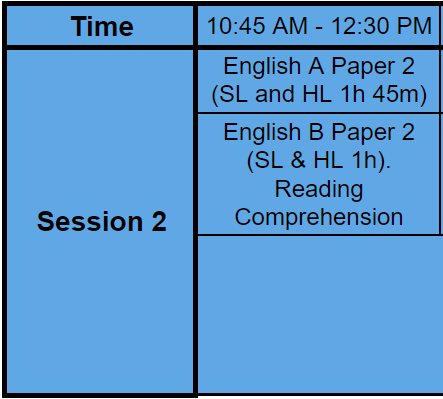
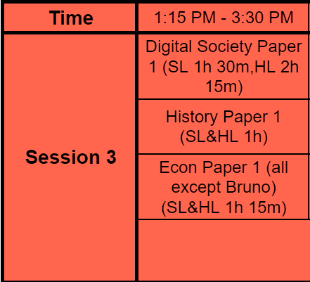
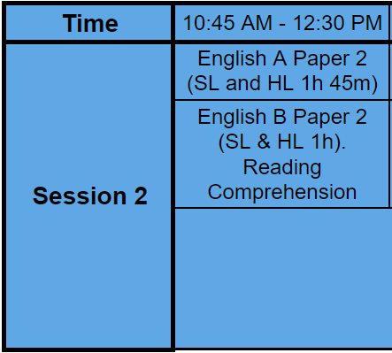
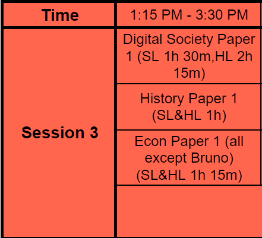
The mock schedule
All the English papers are completed, everyone feels pretty good about the outcome of both the first and the second english paper.
In the third session, the digital society people finish way before the anticipated time which is worrying for some people since Digital Society is a new class. The fact that they finished so early might mean that Javi taught the class incorrectly and no one knows how to take the exam properly
Econ and History do pretty well too.
Later that day, Fede discovers a past papers website similar to the one Timo had during chemistry in 09/02/2024. Fede sends the website to the class. Chiara accesses it. This is the website.

"I feel hacker" - Chiara
-
Date:19/03/2024
Climate:Sunny
Location:Uruguayan American School
Mocks: Part 2
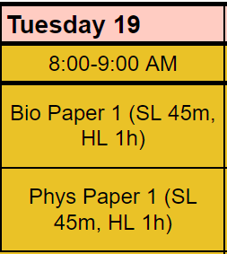 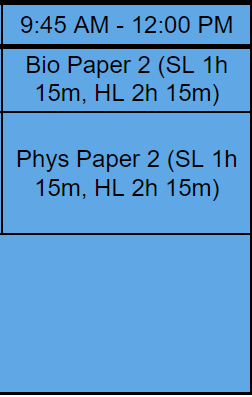
The mock schedule
The physics paper 1 is taken and everyone thinks they did pretty well. The physics paper 2 is also taken, but less people are confident on this one. Mr Williams also didn't teach the full IB syllabus so there were some HL questions that couldn't be answered.
Everyone starts their history or Digital society paper while TImo and Lupi finnish their lunch, both of these have Digital Society but they both start later because they have extra time. Lupi steals some random milk caramel from Eitoku, then both proceed to discuss how well they think they did on the exams. Lupi sees amaral, Lupi calls him several times but Amaral doens't seem to notice and he leaves walking up the stairs.
Then the Digital Society paper 2 is taken, and it's super easy. Others also do History where they write a lot.
After the exams Dani and Timo talk about 2 things. First, Dani comments on how Bruno is always contradicting himself and not doing what he says he will do. This affects Bruno's trustworthiness negatively since less people will believe or depend on him.
Dani also talks about how Mr Amaral doesn't care about anything that isn't chemistry. Dani had brought his own data booklet to the exam container but Amaral took it away and threw it away since Dani needed a clean version. Dani found this really funny.
Some people play clash royale and Alex becomes leader by beating Luca, also Timo gives Eitoku the Jacket that Eitoku had forgotten in Nata's Birthday.
Mati also sleeps in the flex space.
Later that day, Fabri, Lucas, and Timo study for chemistry, specifically organic chemistry. It starts to rain, lately it's been raining a lot which is good because Uruguay has suffered from recent droughts. Anyways, they try to guess what past paper Amaral might use and eventually they go back to sleep having learned some things.
-
Date:20/03/2024
Climate:Very rainy and stormy
Location:Uruguayan American School
Mock: Part 3
 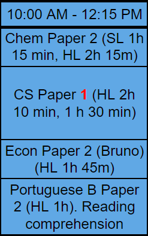
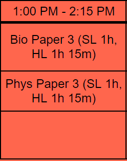
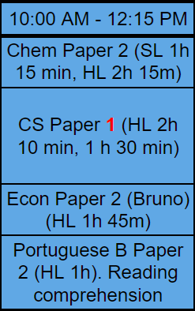
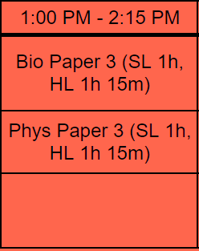
The mock schedule
Chemistry takes their paper 1 and 2. There are also some History exams, some computer science exams, and the paper 3's of biology and physics.
Lupi believes that he got a 3 or a 2 in the chemistry paper 2. Lupi thinks that the mock chemistry paper 2 was one of his worst tests ever.
The containers are also all incredibly muddy at the entrance because of the constant rain. Martina and Mati took the atrophysics paper 3 which was very easy, they are very glad they picked astrophysics. Meanwhile engineering had a harder time, but it wasn't as bad as they thought. Relativity was okay aswell
After the papers, some people stay in the flex space for a short while. Eitoku and Chad have a basketball game. Timo plays some clash royale games against Eitoku but with different twists like picking the worst cards or infinite elixir. Eitoku talks about his host family and how one of the members of this family is a volleyball player that is approximately as tall as Timo, yet this volleyball player is the second shortest person in his team.
Mati is also there, but he is sleeping. Mati likes sleeping in the flex space.
Later that day, there is a lot of rain. So much rain in fact, that an Alerta Naranja is anounced and in some places in Uruguay there is Alerta Roja. Amaral sends out an Email saying that Mock Exams are canceled tomorrow because of the storm and everyone celebrates. The Senior groupchat had been planning a bomb threat to avoid taking the exams, but that will no longer be necesary. The Bomb threat idea was given to them by the fact that someone unironically did that in Argentina
The table tube gang also talks about how physics is no longer the hardest subject for Milla and Timo, instead the hardest subject is now psychology for Milla and Chemistry for Timo. THey also talk about the storm and how it destroyed a part of Timo's tree.

The incredible storm
-
Date:21/03/2024
Climate:Sunniest Day of the Week
Location:
Canceled Mocks
The Mocks were canceled because yesterday's storm was insane. However this day is an amazingly sunny. An anouncement was sent through the UAS app about classes continuing like normal. But no seniors to my knowledge came to school.

The Sky Today (No storms)
Later that night, the Math AI people complain about Math. Then Fede is informed that one of his senior quotes from his senior page is not appropiate. Apparently "Suck it up buttercup" is far too offensive to be put in the yearbook.
-
Date:22-23/03/2024
Climate:Sunny
Location:Uruguayan American School - The House of Martina - San Nicolas' Park
At 1 AM, Timo tells Dani about the new minecraft update. Dani could not give a shit about the new minecraft update if he tried.
Mocks: Resumed
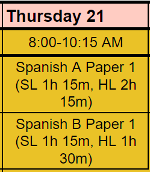 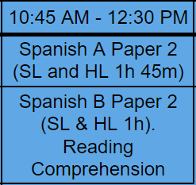
The mock schedule
So the Mock exams aren't done yet. Today, the Math HL people have all 3 Math papers. The Math AI people have Papers 1 and 2. And the digital society HL people have the Digital society paper 3.
Everyone was very unhappy with paper one math, it's too many questions in too little time. In the Math AI classroom, no one finished the test.
Paper 2 was much easier for everyone, the time was fairer, there were fewer questions, and the questions were easier. Except that Mili was cheating with sticky notes and she got caught. Very unfortunate that Amaral just happened to be walking by when Mili dropped the sticky notes with the answers and got disqualified.
After Math HL finished their tests, they immediately started talking about math and certain questions. People eat lunch and then they go to the flex space. Timo is doing nothing, and Sebas asks "Are you ready for paper 3", this gave Timo the knowledge that he wasn't done for the day and he still had to do Digital Society's paper 3. To make matters worse, Digital Society's paper 3 required research guided by a pre-released statement. Neither Sebas or Timo did the research so they speedrun like 3 websites and then everyone is called for Mocks.
After the mocks are done. THe physics people give a visit to Mr Williams who has already graded all the papers. Mr Williams mocks and scolds Alex for his absolutely atrocious graph of intensity. No one got the graph question fully correct which is extremely upsetting to Mr Williams. Mr Williams also reviews Mati's paper 3 (The Optional Module) in which he got 18% and Martina got 12%. Mr Williams comments on how Mati got many points that Martina didn't get, but Martina also got all the points that Mati didn't get, meaning that if they worked together they would have gotten a good score.
Timo argues that scientists work togetether and thus tests should be done together aswell. Then Mr Williams recommends a psychologist to Alex after seeing his test. Mr Williams felt that one of the main factors towards Alex not getting a 7 is because he took the tests with a "I am not goot at this" mindset.
Williams also acknowledges that Timo has improved his communication of ideas, also Mr Williams enjoyed reading Timo's relativity notes in his journal. Finally, Williams tells Timo to anounce to the physics HL people that no one got less than a 3 in the exam, meaning everyone passed the mocks. Mr Williams felt that this would motivate his students.
After that, Volleyball happens. They play matches all the time and everyone has a lot of fun. Alex struggles to spike the ball in a way that allows him to win the point, but apart from that they all had fun. In the lockerooms, they discuss whether or not to go to Martina's juntada today. Most say yes, except Alex.
Martina'sMati is the first to arrive, then Timo. They go to Martina's room and talk about physics and how Mr Williams said that with Martina and Mati's knowldege combined, they could get a decent Physics grade. After that, some more people arrive, but they still talk about physics. Martina states that the reason she didn't do physics HL was because she had to miss some Higher Level lessons due to horseriding stuff. When she came back she found it immposible to catch up. Then she states that when she is rich and she has a stable job and a big house she will do astrophysics as a hobby.
So everyone talks about Physics, and in a moment of silence, Timo asks Lupi "So how's biology?", and then everyone starts fighting about which science is the best. Mati says that he would have liked to do chemistry and that he might do chemical engineering in the future. Lupi assures him that if he is doing chemistry, he has to completely focus on chemistry, since any chemistry related jobs require a deep understanding of chemistry.
Fede creates a list of the order in which Hitler would kill people.
- Santino (He is black, or black enouph for Hitler to kill)
- Fede (He's gay)
- Martina (Dyed hair
- Mati (Curly hair)
- Luca
- Chiara
- Timo
- Chad (He would not kill Chad probably)
- Lupi (Lupi used to be blonde and he has green eyes which is close to blue)
Then, Chad and San go to play rocket league while Timo plays the piano. San loses, then Timo goes and he loses, then Lupi goes and he loses, then Fabri goes and he loses. Chad is like a god at rocket league no one was even close to beating him.
Then the pizza arrives with some coke, but the delivery failed to deliver the pepsis, and Martina could not re-order them. She also couldn't order more because everything got closed. So no ice-cream this time :(

At the house of Martina
San and Lupi go to the pool in boxers. Then they play football, they get cold so they start drying up. Meanwhile, Martina explains how Mili is very good at lying and convincing people, specially teachers. So she will probably be fine and won't get reported to the IB for cheating in the Mocks. After that, everyone proceeds to play a game called psyche, a game were an incomplete sentence is presented, everyone writes their own version of the complete sentence, and then people pick the option that they think is best (or the funniest one). Many jokes are done with a girl named Trinni, this girl had gone to SAAC and everyone made jokes about her. These jokes were eventually taken way too far and now people just worship her and love her as a joke.
The winner of the game was Timo, yey. He won mainly by choosing the correct answer instead of the funniest.
After that, they all go to the San Nicholas park. Luca explains the origin of the joke about Trinni, for a moment, they all feel bad for Trinni. Martina is with Raffa and someone from Rafa's grade named Josefina is also in love with Rafa, the love is unfortunately not reciprocated..
They eventually get to the park. Lupi, Luca, Chad, and Timo go into a spinny thing and the spin fast. But Lupi felt really bad, he was crying involuntairly and he almost vomited a bunch of times. Chad felt super dizzy aswell, he lied in the floor for a while. Mati left during this, and Luca left his retainer container.
.JPG)
.JPG)
.JPG)

.JPG)
Park Adventures
Then everyone left the park while Lupi, Chad, and Fede stayed to recover. Back in Martina's house, they talk about dreams. Angie has strange dreams about backyardigans killing people, Chiara had dreams about clash royale, and Fabri has had dreams were he realised that he is dreaming and he changes dream.
They also talk about the possibility of Angie inviting everyone to her campo after the IB things are over.
Santino was sleeping all this time, but he has risen, coincidentally, Lupi, Chad, and Fede arrive. They all stary making jokes about "jerking off" and "gooning" and they literally do this for an entire hour help. During this time, Fede plays truth or dare, I only remember some of the questions selected.
- What do you think is the most overated celebrity (Lupi really wanted to say Taylor Swift, but he refused to say it in Fede's presence)
- Don't blink for 5 minutes (Poor Timo)
- Massage someone for 5 minutes (Poor Timo)
- Who are you most jealous of (The only correct answer is Dani, unfortunately Dani was the one who got this question se there was no answer)
- Spin 5 times (Chiara did not spin 5 times)
I don't remember the others. But after that, Lupi, Fabri, and San go to the bathroom, they make a lot of noise, and they come back with a white substance covering their faces. They clean themselves up before anyone can take pictures.
After that, they all start to leave. Most people leave throught the Fabri Movile.
-
Date:24-26/03/2024
Climate:Sunny
Location:France
Santino is in France now
Also during these days, Fede and Timo talk about a lot of stuff. Here is everything they talked about condensed into a list.
Fede possibly getting a haircut
Timo succesfully stalking someone from the first time, it was very elaborate.
Sickness and preventing getting Sick
-
Things Fede doesn't like about Sofe
- He didn't like how she said he shouldn't have the UP Abanderado award
- He didn't like her overall vibe
- Maybe transphobic
- Maybe manipulative of Bruno
- According to Ethan she discriminated against jews too
Then they talk about love, hate, and indifference. Fede says that they are all a vector sum but Timo just believes that love and hate are equal opposites while indifference is in the midde.
The next day, Timo tells Fede of a dream where Timo was in Vienna and he was an artist but he made no money whatsoever. But he was still happy because the city was beautifull and he was making art. In this dream, Sofe and her boyfriend broke up and the world also ended. Timo and Fede proceed to realise that Sofe has deleted many pictures of her boyfriend in social media, which leads them to believe Timo's dream might be right.
They talk about how sometimes people like telling a lot of things and oversharing while others only say things when asked. They also state that "No one asked" is a dumb thing to say in most cases.
Spontaneous conversations are cool, Bruno is really good at being spontaneous.
They talk about who to invite to the football 5 that is happening on wednesday. Fede strongly suggests not to invite Nata
They talk about how consulting to people before doing things is a good idea, but one must know who to consult. Fede states that he would consult Timo for anything that isn't relationship or university related. Timo also states that he would usually tell Sebas about his dreams or predictions, but he feels like Sebas has gotten bored of it. Fede didn't like that he was Timo's backup
They talk about how the IB doesn't leave much time for people to be themselves, its a system that strips you off your individuality and forces you to be someone.
They somehow start talking about hate and love, aswell as Martina and Eitoku's strange relationship. Fede believes that there was no love or hate in that relationship and Timo is confused as to why they were even together in the first place if there was no love.
After that they talks about Timo and asexuality. But Timo refuses label himself as anything as a protest to the myriad of useless labels created by the LGBTQ community.
-
Date:27/03/2024
Climate:Sunny
Location:Football
So everyone went to play football 5. This time, it's 2 hours. Ethan was going to come, but he was visited by his cousin, also Lupi couldn't come which made Luca mad. Mati didn't want to come, but everyone ended up convincing him. And Fede came all the way from colonia. Before this, Timo had suggested inviting Sofe or Nata, since Nata played on the football team and Sofe asked to join. No one agreed to have them invited.
Team 1- Timo
- Lucas
- Alex
- Dani
- Fabri
- Chad
- Mati
- Luca
- Sebas
- Fede
These were the teams for the first match. It was incredibly uneven since team 1 had more players at the start, this is because of two reasons. The first one is that Mati and Martina arrived later (Martina came because she was bored, she didn't want to play though). And thus throughout half of the match, it was a 5v4. The second reason is that the teams were simply unbalanced. Alex and Timo made many goals together
While resting, everyone drinks water, Fede talks to Martina, and people congratulate everyone on their epic plays. These are the second set of teams. Martina watches from inside the field for some reason this time, which leads her to be prone to getting absolutely destroyed by the football, luckily this never happened.
Team 1- Timo
- Dani
- Lucas
- Luca
- Mati
- Chad
- Fabri
- Alex
- Fede
- Sebas
Football (Video Recorded by Martina)
This was a more balanced match were team 2 won because of Fabri's skill, Sebas' technique, Mati's fear of the ball, and Alex and Chad camping at team 1's goal. It was a more balanced match than the last, however everyone believes that the first teams in this day was the best. Towards the end everyone was getting tired, and Mati just gave up being goaly, he essentially started to dodge the ball instead of trying to catch it.
After that, they all went to Rudy's. Timo entered Lucas' car without warning or permission. Lucas and Dani got scared since they thought they were getting robbed. Lucas drove Dani to his home, then left Timo at Rudy's, and then went to his home to take a shower.
Then everyone else arrived at Rudy. Everyone was really tired, they started talking about Rafa, about Trinny, about underage dating, but more importantly they talked about a trip that they were planning. Matias, Mili, Fabri, and Martina are going to Buenos Aires for one day and coming back since this entire week they don't have school.
Lucas eventually arrives, they all eat burgers, they are really good, but they comment that Garage Burger has better burgers. Luca was also mad at how Lupi couldn't come to the football thing.
Fabri orders another burger. Martina, Mati, Fede, and Timo go outside for some fresh air, and also to smoke. Fede talks about his boyfriend, and Martina reveals that some girl stalked her TikTok and she is suspicious of her.
Eventually Fabri drives everyone home. While this is happening, everyone discusses Martina's situation, there is this girl named Trizziana who has been stalking Martina's TikTok. Timo has heard the name from her sister, apparently Trizzi and Rafa talked at some point in the past, and maybe they were together. This was enouph information for Martina to text Rafa, Rafa told her that Trizzi and him used to talk. Fede was not satisfied with this and he insisted that Martina should discuss the situation more thoroughly. Martina wasn't entirely convinced saying that she did have some trust in Rafa.
They also talk about volleyball and how they have improved a lot. They think about doing something for volleyball similar to what they have done in football tennis. Only that they would need to find a volleyball court.
-
Date:29/03/2024
Climate:Sunny
Location:Buenos Aires Argentina
Martina, Fabri, Mili, and Matias go to Argentina Buenos aires were they go shopping and stuff.
.jpg)
They are in a hotel I think (Photo By Martina's story)
-
Date:29/03/2024
Climate:Sunny
Location:Buenos Aires Argentina
Once again, they are in Argentina.
.jpg)
Photo by Martina and Mati's story
-
Date:30/03/2024
Climate:Sunny
Location:Irrelevant
Bruno reveals all the drugs that he has ever done.
- Alcohol
- Pregabalin
- Cannabis: (Flower, Hashish, Hash Rosin, Shatter, Live Resin, Diamonds)
- Lorazepam
- Alprazolam
- Etizolam
- Clonazolam
- Flualprazolam
- Diazepam
- Ketamine
- Nitrous Oxide
- Deschloroketamine
- 3-MeO-PCP
- Dextromethorphan
- O-PCE
- MDMA
- 6-APB
- Caffeine
- Methylphenidate
- Amphetamine
- Lisdexafetamine
- Cocaine
- Nicotine
- 4-FMA (4-Fluoromethamphetamine)
- Methamphetamine
- 3-Methylmethcathinone (3-MMC)
- Theobromine
- DMT
- LSD
- 2C-B
- 4-HO-MET
- AL-LAD
- Psilocybin/Psilocin (Mushrooms)
- Salvia (Salvinorin A)
- 5-MeO-DMT
-
Date:01/04/2024
Climate:Sunny
Location: Uruguayan American School
School is back, yeeeeey. They don't have their final mocks today, they have them tomorrow.
Chemistry class takes a paper 3 exam as practice for the paper 3 mock that they have tomorrow. This exam was going to be taken the 21/03/2024
Physics class goes through the paper 2 mock exam, in multiple occasions Mr Williams says "This questions, was answered terrible"
-
Date:02/04/2024
Climate:Very Rainy
Location:Uruguayan American
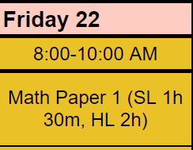 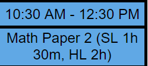
The mock schedule
The mocks happen. People had the spanish papers 1 and 2. Computer science and chemistry had their paper 3. Everyone in chemistry found the test very hard. Transesterification appeared in a question. The biochemists had a question about sharks too it was kind of strange.
-
Date:03/04/2024
Climate:cloudy
Location:Uruguayan American
During a study hall at the beginning, Timo wonders what the physics curve is. He searches it up online, and he sees that Chad was questioning the UAS physics curve in a subreddit. Timo shows Fede the post of Chad, and Fede is intrigued.
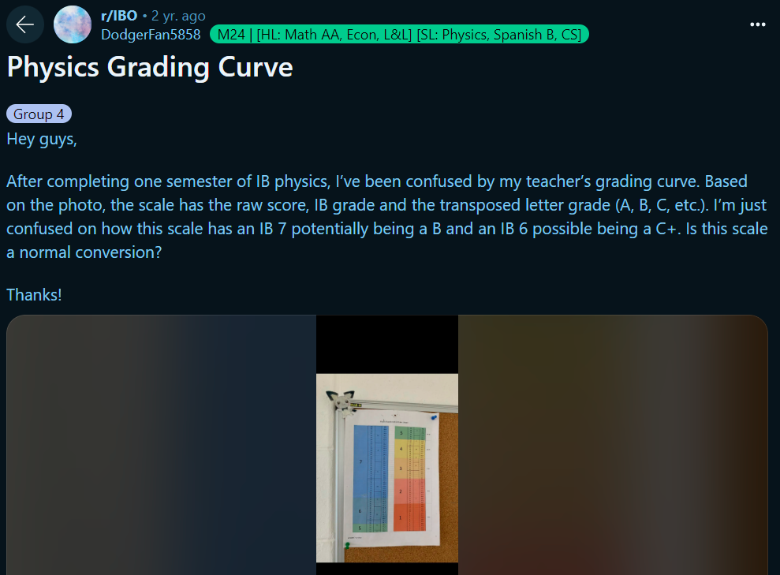 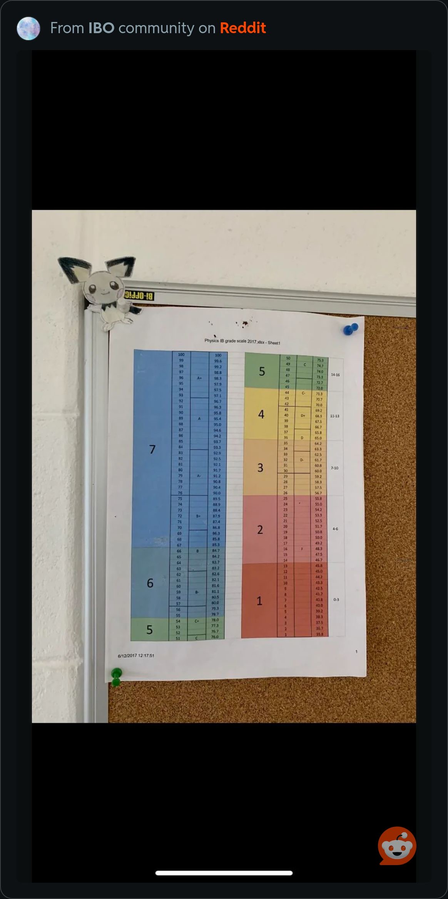Chad in Reddit 2 years ago
Chemistry class learns organic chemistry HL. They learn about Sn1 reaction mechanisms and Sn2 reaction mechanisms and how in some occassions a certain mechanism is favoured because of steric hindrance. I have no clue what application this has in real life because free radical substitution happens regardless.
The Oomp Loomp and the Mechanisms of reactions
Physics HL learns about fields. They already learned about the gravitational one, so now they are learning about the magnetic ones and how they have similar stuff like the inverse square law.
In Homeroom, Fede, Chad, Alex, and the rest of the class, but mostly the first 3, have a discussion about the science grade curves. The science department does not want to change them, but the students do. Here is the rundown, you get a percentage score in an exam, then the IB grade is calculated, and then the IB is converted to a percentage again. But sometimes the percentage is converted really interestingly, like if you get a 7, you might get 85%, even though a 7 is the maximum score.
-
Date:04/04/2024
Climate:sunny
Location:Uruguayan American
During digital society, Javi scolds Timo, Lupi, and Lucas for not finishing the digital society IA. Sebas and Timo talk about Timo's habits and also how Sebas hasn't listened to the song that Timo recommended to some months ago. Sebas says he listens to it but Timo knows he is lying so he retalliates by wasting Sebas' time.
Timo says "It's someone's birthday today". Then Sebas asks whose birthday it is and Timo replies "I don't know". But then both of them realised that it had to be someone's birthday in the world.
So they both check instagram and they see that it's actually the birthday of Linda Rasheed (No clue who this is) and Carla Antonio Rivas[SAAC Fine Arts participant). They both send a follow request to Linda.
During math class, Sebas gets his follow request accepted by Linda, Timo doesn't. Then they talk about ginger people. Sebas has apparently met a very unpleasent ginger person once and because of this Sebas now hates every ginger person. He hates Carla upon the knowledge that she is ginger.
-
Date:05/04/2024
Climate:sunny
Location:Uruguayan American
Eitoku SurpriseAfter school, Mili wanted to do a surprise party for Eitoku. They planned to do it at Fabri's house for some reason. Fabri's home and Eitoku's are the furthest distance apart from any other two people, so that wasn't the smartest choice
Fun Fact: Fabri lives really far from Eitoku. The distance between Fabri's houses and Eitoku's is the largest distance between any two houses of the class of 2024.
Eitoku somehow realised that this was a surprise and and Lupi revealed this to the surprise groupchat. They ended up changing it to Chiara's house which was closer to literally everyone except Ethan. Fabri was not happy about this. The juntada is at 20:30

Eitoku knows
Timo very uncharacteristicly arrives at Chiara's house at exactly 20:30. He brings some chips and both go down to the basement. Chiara sets up the Playstation 5 knowing that people will want to play Fifa. They talk about Mock exams and IA's, apparently Chiara has completed all IA's last year so she has absolutely 0 things to worry about, except the exams. This is the opposite of Timo who has every IA to worry about.
Luca arrives, he shows Timo and Chiara the Computer Science groupchat. In the groupchat, Dani always several gives unnecesary updates on his computer science IA and everyone makes fun of him for that. They also briefly talk about how Sofe isn't coming and how she does not like Fede. Chiara mentions that now that she broke up with her boyfriend she should hang out more with the class. Apparently she broke up with her boyfriend some time ago.
More and more people start to arrive, at one point Lupi arrives and people confuse him with Ethan, and the same thing happens with Dani. They start to watch tik tok rizz party, I'm not really sure what it is, but from what I understood it's just a bunch of guys dancing in a kanye west concert.
People start to play pool. Alex and Eitoku vs Chad and Lupi. The second team wins by a lot. Then the next set of teams play, Timo and Sebas against Fabri and Luca. Luca and Fabri start winning by a lot, but sebas and timo make and insane comeback, only the 8-ball remains, and timo does a mistake which costs him and Sebas the game. That match lasted very long and everyone was begging Fabri to just finnish it.
Pool Adventures
In the middle of that match, pizza came, everyone ate pizza, they ordered pizza because it is Eitoku's favorite food. Then they ordered more pizza because 2 pizzas wasn't enouph. Also Mili bought Eitoku some cake and they all ate cake. Eitoku, Sebas, Luca, lupi, and Alex took shots aswell.
Pool
Some people start seeing some of Lupi's instagram feed, it consists mostly of lethal accidents and Indian foot that looks digusting.
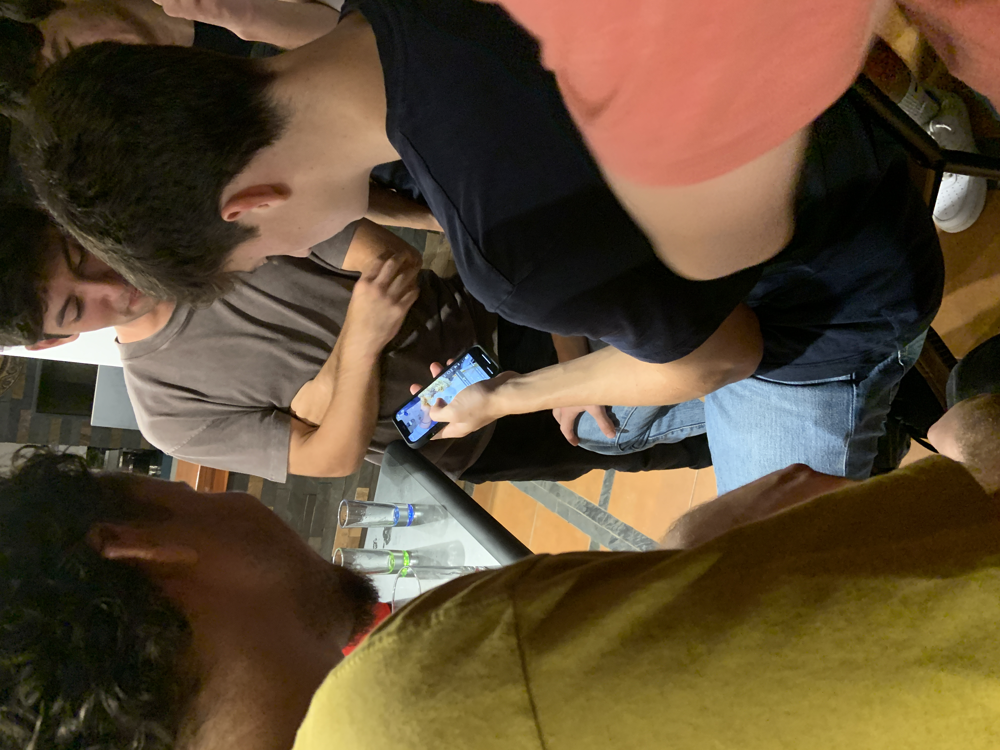Everyone watches Lupi's reels
Mili and Martina wanted to play a match of pool, but Martina lost motivation to go through with it so Angie played instead, and then Mati too I think. Anyways, everyone left eventually.
-
Date:06/04/2024
Climate:sunny
Location:Uruguayan American
It's international day, meaning that people from several countries set up a stand in the UAS gymnasium for people to try out the food from different countries
Timo arrives, there is this game that little kids do where they get a passport and they visit every single stand. Each stand has it's own stamp and so once their whole passport is stamped, they can turn it in to get a kaleidoscope. Timo did that.
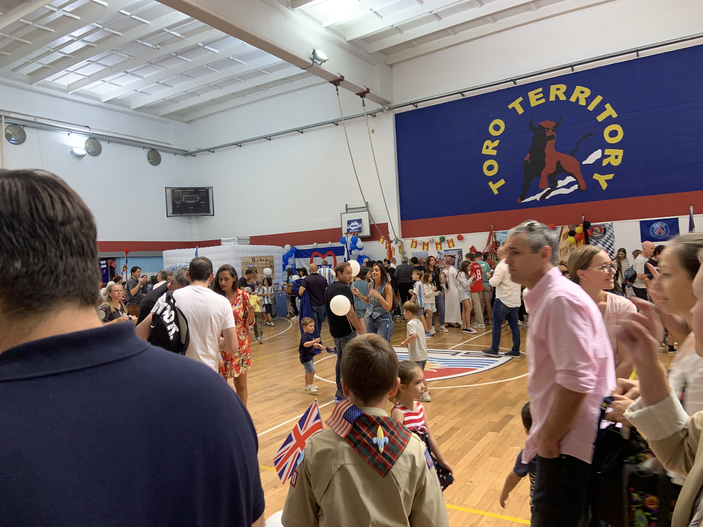 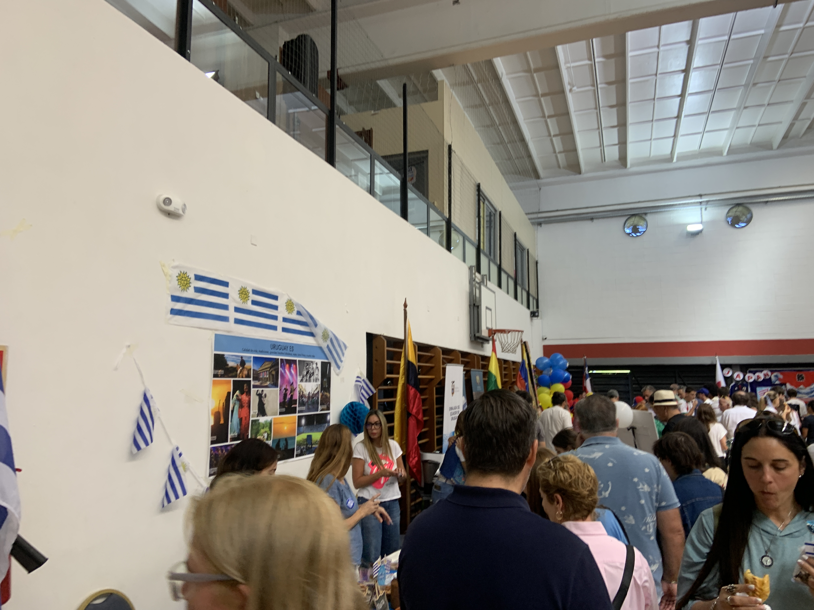
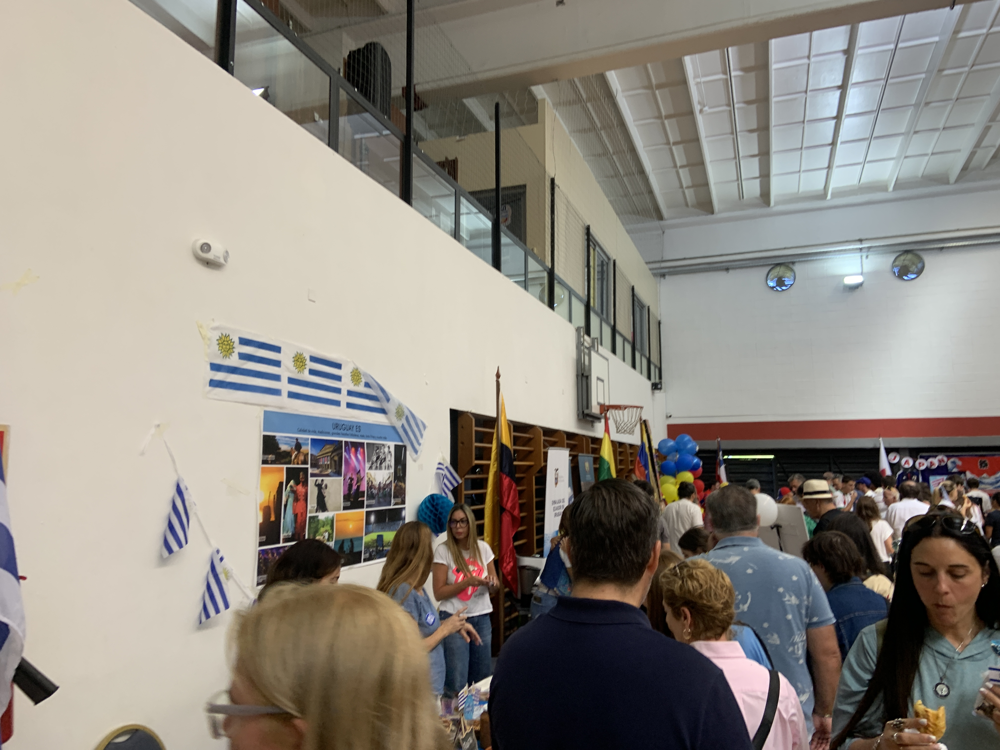
The Fair
Chiara, Alex, Lupi, Chad, Luca, Martin stein, and several others are here aswell. The Quatar stand is very good and it has actualy food. Sebas came in late, and then everyone sat at a table outside. They talk about what they would do with a lot of money, and also ways to get a lot of money. Mati has a whole list of things he has to buy in the future when he is rich, the list includes private jets, houses, lawyers, security, and more. Timo also showed them the kaleidoscpoe that he got which Mati absolutely destroyed for no reason.
Martina arrives, and then several people leave. The ones who remain go to get some cake from Quatar, Sebas hasn't eaten anything so he was hungry. However the cake from Quatar was the only thing left, it had a layer of butter which no one liked so they piled it up in a plate. Then Luca had the absolutely terrible idea of spinning a bottle, whoever it lands on had to eat the butter. They waited for Lupi to arrive and they did the game. Timo ate the butter.
Then they decide to gather a bunch of stuff from the stands and create an abomination composed of suspicious stuff. They spun the bottle and Alex had to drink it. Then Chad drinked it, but he vomited. The abomination had some liquid parts and some solid parts. The solid parts where mostly from the Chile stand which had a very bad flan. Alex didn't eat the chilean flan while Chad did.
Special Stuff
Mili witnessed the whole event, and Mati did aswell, Lupi said they were both pussies for not daring to enter the challenge.
Then everyone left
It's also UAS's birthday and there were a bunch of UAS balloons that had the number "65" since it's UAS's 65'th birthday I guess. Timo stole a lot of UAS birthday balloons.
-
Date:08/04/2024
Climate:sunny
Location:Uruguayan American
During the study hall of the first period, Chad and Sebas play geoguesser. They are really good, Sofe and Fabri join them and they question the origins of their skill. Sofe also tells Timo that she created some poems. One is called "this poem isn't for you" and another is called "hearbreak". I think this poems are probably inspired by Sofe's breakup with Juampi but don't quote me on that.
Timo is reading Sofe's poems during the second study hall. Sofe had written 3 poems in total but Timo didn't get to read the third because Sebas was called him to inform him that it was
CHEMISTRY TIME!!!
So the UAS class of 2024 is really slow. This can be seen by the fact that the physics, biology, and chemistry have all failed to finishe their syllabus before the Mock exams, something that doesn't usually happen. Unfortunately this means the chemistry teacher Gabriel Amaral must schedule a class during a study hall.
Timo quickly arrives at chemistry class, and Mr Amaral starts teaching. Lucas is there and he asks Timo for food. Timo searches his bag, he does not find food, but he does find a balloon which he inflates.
Mr Amaral talks about reaction mechanisms that have to do with addition. He also explains how alchohols can be reduced instead of oxidised through the use of hydrides, but this process needs heat, sulfuric acid and no water. If water and hydrides are together then boom. They also review esterification. Finally, they reviewed all organic reactions. Now with a clear understanding of organic chemistry, the class was ready to take a break.
Suddenly Lupi arrives. Amaral had made a deal with everyone that they would meet during the second period where people either have study hall or spanish. Lupi was at home, but he had forgotten that he was supposed to come to chemistry class to learn today. So now Lupi needs to catch up with the rest some other time. Anyways, the class learns about high resolution hydrogen detector of when the spin of the hydrogen atom switches when exposed to electromagnetic radiation according to how unshielded it is (I don't remember the actual name of this.) They learned that high resolution stuff grants you the ability to detect how many neighbouring hydrogens an organic compound has. They also learned that young's slit experiment can be used to determine the bond lengths of things crystals lattice structues using wave diffraction equations. The chem class of IB used to have to do some calculations where they actually needed to know how to calculate bond lengths according to diffraction patterns of crystals, but this class does not need to know that so they are lucky.
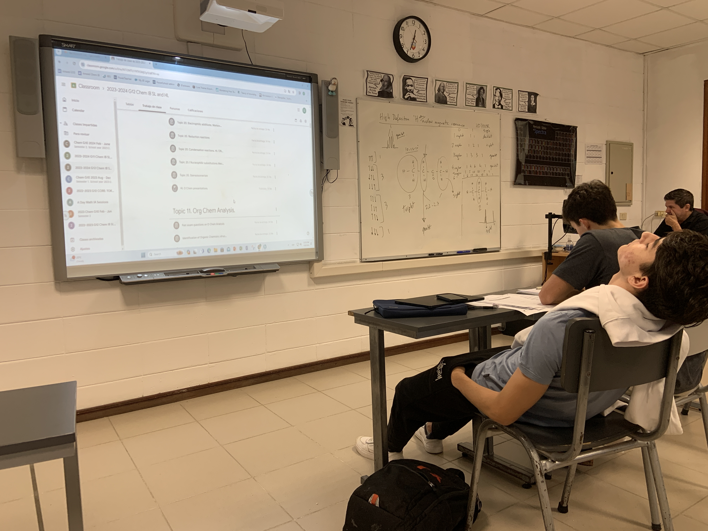Alex dies
During lunch, everyone eats.
The physics HL class learns about fields in the creation of electricity. They also learn about AC currents, about peak currents, and Root Mean Square, and volts. They get some equations about these things. Dani had some previous experience with Root Mean Squares due to his IAs
After that, they all take a look at the IB art exhibition.
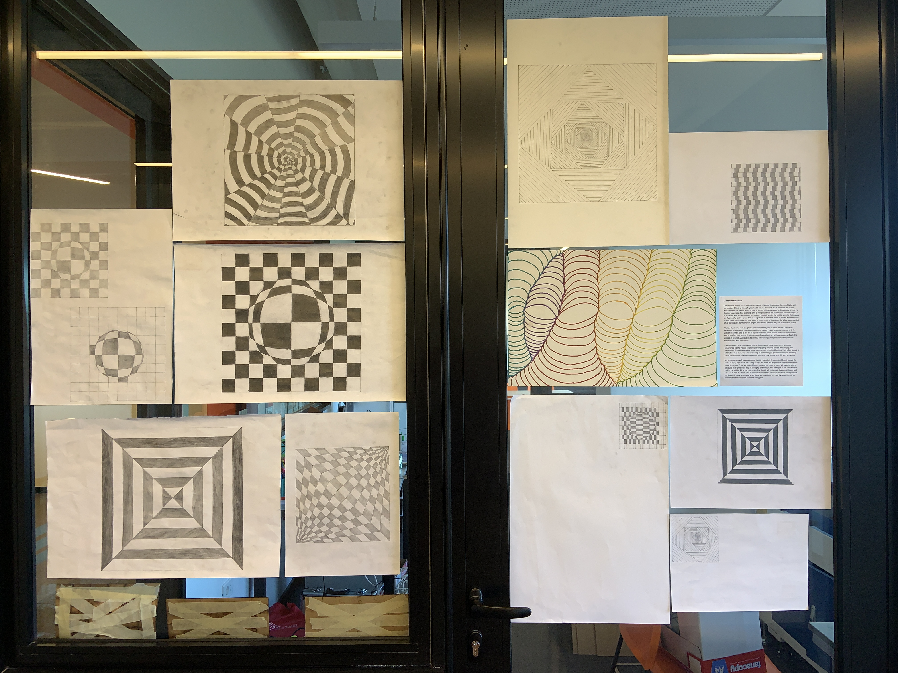
Fabrizzio's Optically Illusive art/Sofe, she sat on a painting while she was covered in paint


Fede's contumacious paintings/Martina's metamorphic art
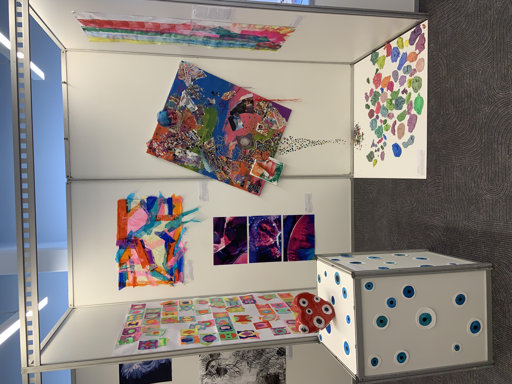 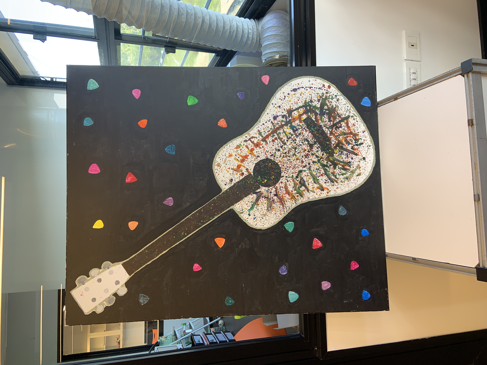Salma's Chaotic Art/Eitoku's Stringless Guitar


Ethan's Existential Artpieces/Tanu's Mandala
-
Date:09/04/2024
Climate:cloudy
Location:Uruguayan American
Carrier day is today, and some people attend the meetings of past UAS students who are now doing a carrier. Moskovicks explains things about paper 2. Timo arrives late and Moskovicks is really mad about this. Last night Dani had asked Timo to print his physics IA since Timo has a coloured printer. But the printer broke so Timo spent the morning fixing it which is why he arrived late.
Timo gives Dani the physics IA, Dani and Sebas are shocked since they were completely convinced Timo was going forget to print Dani's IA. Msokovicks proceeds to explain how to answer the most popular question in the mock exam.
Milagros is not here. During digital society, Lupi works on his IA which he has not finished, he was supposed to finish it, but he hasn't finished it, which is not good.
During Math class, Zarsky is not there, Ms Paula is here to replace him. He tells everybody that Zarsky will be back next week and that everyone should practice for the exam. Fabri and Sebas play geoguesser while Timo does his physics IA and Martina speaks to Mr Dingley about something (she didn't want to tell me for some reason) but I think it's probably something abour her art exhibition since Mr Dingley really liked Martina's art, specially the distorted flower pictures.
During lunch, everyone eats.
During spanish, Ale (an underclassman) is in the classroom, he is taking a Uruguayan History test. Sylvia goes upstairs to upload the Orals to the IB website. Ale immediately asks for help since he knows nothing about the test that he is taking, Fede's got him covered.
Meanwhile, Sofe has a meeting with Moskovicks. Sofe is asking for advice for Paper 1 and Moskovicks tells her that Fede has good notes on it. So Sofe goes to the Spanish class and asks for Fede to send her notes.
In Spanish class, the conversation leads to gay people. Fede says that many gay people are strange, then Juanma comes up, and they all agree that he is pretty strange. Ale states that Juanma once said "I would suck anybody off, even you guys" which is really not something you should ever say to your friends. Apparently Juanma's father isn't the best. Ale also tells of how Juanma trauma dumped to everyone in MUN.
Then they talk about gay and straight people and what percentages of them are pedophiles. And then they talk about people like Andrew Tate, hassanami, ben shapiro, and other opinion givers.
Sylvia comes and she gives everyone corrections of papers 1 and 2, she also says that Mr Murphy doesn't like how seniors have been skipping class and walking around the school lately.
Finally, they talk about the debate that Chad, Alex, and Fede had with the science department about grades.
-
Date:10/04/2024
Climate:cloudy
Location:Uruguayan American
During study hall, Lucas and Sebas study chemistry while Chad plays Geoguesser.
During ToK, Moskovicks scolds Timo for everything ever.
During Chemistry, Mr Amaral completely demoralises the class by revealing how the mocks went. Lucas got a 1, Sebas got a 2, and the rest barely passed the exams. Many people struggled in a section about acids and bases. There was also an entire section dedicated to Methyl Methanoate. There was also a question that was worth one point and Lupi answered with a big paragraph. Despite his paragraph Lupi still didn't get the point.
Amaral explained Lupi's situation with an Allegory where lupi was told to get a book from a shelf right next to him, but instead of going straight to the book, he went out of the classroom and took the most complex route to the book. Lupi ads that he wouldn' even have gotten the book, since he didn't get the point.
Lucas then asks Timo if he has any food, Timo searches in his bag and he unfortunately doesn't have food. He does have a balloon though, and he inflates it.
Lupi, Timo, and Alex sit at a different table this time. They talk about chemistry and how the test was really bad. Alex concludes that he will only get a 7 on physics, math, or chmistry, but Lupi believes in him being capable of getting a 7 in two of those subjects. Chad joins and they start talking about the ridiculousness of the grading curve of the science.
During physics, the physics squad learn about diodes and diode bridges that serve to transform AC into DC, and capacitors which store charge. They are given some equations aswell.
During Homeroom, Mr Amaral tells everyone that they are going to have a talk regarding exam etiquette, because people cheated in the mocks *couph*Mili*couph*
Tasting food for PROMMati, Chiara, Nikki's mom, Timo's mom, and Alex's mom go to try the food for Prom so that they can choose what food they will serve at Prom. All the dishes looked great, but not all of them tasted great. Here is a list of the dishes rated from 1-5.


The List of chosen foods
There is a sauce that was made with almidon and milk, basically thick milk. There is an elegant name for the sauce- "Bellamel" and a colloquial way- "Salsa Blanca". Nikki's mom[Natalie] thought that Bellamel and Salsa Blanca were 2 different sauces. Timo's mom[Miriam] knew that they weren't, so they started a small discussion. To settle the discussion, Miriam consulted the with the caterer. The Caterer (wanting to use the more ellegant name) really didn't want to use the name "Salsa Blanca" but they did conclude that they were in fact the same sauce.

 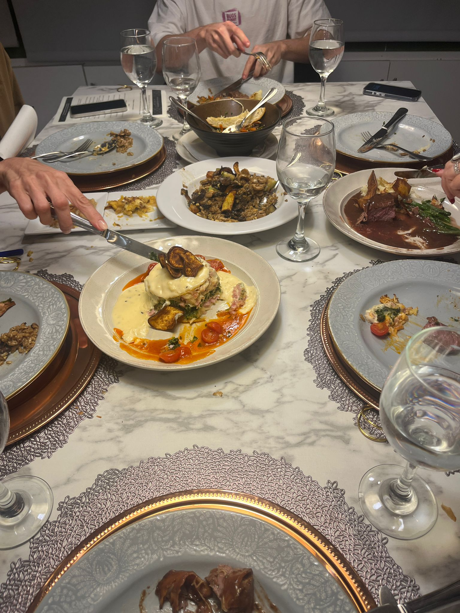
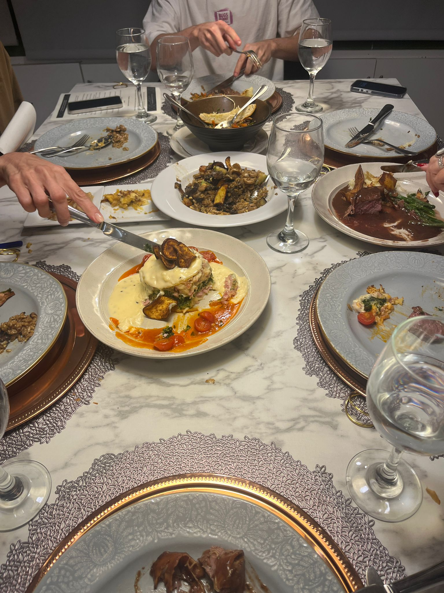
Some pictures
-
Date:11/04/2024
Climate:Sunny
Location:Uruguayan American School
Moskovicks' class is useless as always and everyone is very sleepy during her lesson.
During Digital Society, Lupi makes the finishing touches to his IA. Also Chad argues that the Physics Curve of Mr Williams makes no sense.
Chad's Argument
During Digital Society, Lucas and Sebas once again discuss the possibility of creating a Toothpaste Factory in the future. However they create a new innovation, Digital Toothpaste.
During Mathematics, Zarsky is not here, Lucas and Sebas study for chemistry in the downstairs flex space. Timo goes to search for them, but instead he encounters Mati, Mili, Eitoku, and Lupi in the library. Mati and Mili are having a discussion.
Mati says that most girls always tell each other all secrets and they aren't to be trusted, Mili disagrees, she establishes that the only person she has ever had beef with is Lupi during biology since Lupi would always mock her for cheating in bio. Lupi hears this and add "Wanna start it again?". Lupi is a very sarcastic or ironic person that likes making fun of people, but in a lighthearted way, however during bio, Mili took these insults personally and she did not like Lupi at all. Eventually Lupi stopped.
Mati has several pieces of anecdotal evidence that subsist his argument that girls can't be trusted. Mili says that she has never told anyone anything. They briefly mention that someone had once said that Mili wanted to be with Eitoku which is totally false. While they are having this sort of heated debate, Lupi comments on his clash royale game, he gets mad mad because he is losing a lot of trophies.
They stop talking about that, and now the conversation shifts to Lupi's IA, it's pretty bad. Lupi asks to see Timo's IA, but Timo is too embarassed to show it.
The two best inquiry projects of the UAS Digital Society Class of 2024
During spanish, everyone does stuff.
During homeroom nothing really interesting happens, except Alex broke a chair. Sylvia comments on how the chairs are really old. Like a decade old.
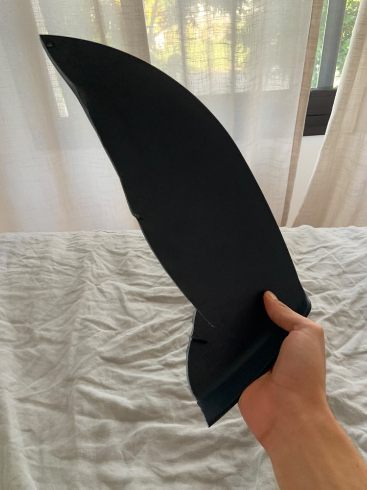Timo stole the piece that Alex broke of the chair
-
Date:12/04/2024
Climate:Sunny
Location:Uruguayan American School
Sebas, Alex, and Chad play geoguesser in the flex space during study hall instead of studying for physics.
Today there was an assembly where there was a balloon popping competition.
THey pop balloons
Chemistry practices some exams while eating Rustic Chips

Exams and Crisps
Timo finishes CAS by printing and naming some of the art samples that Mr Turner has.
The physics SL class is not let into the upstairs flex space because Mr Williams has gotten complains about their behaviour. They stay inside while the physics HL people finally finish their syllabus. Martina states that she "will cook and not get cooked", but Williams was confused since he thought getting cooked was getting high. Then they talk about some idioms, like the spansish idiom "estas en el horno". Ethan states that everyone is getting 7s. Luca corrects, saying that he is getting a 7%. Also it's strange that Ethan actually came this time
Timo and Alex are 2 people that are known for doing their IAs in a very untimely manner. Timo has already Turned in the first draft and he has to turn in the corrections today because Mr Williams is apparently going to a trip with some other teachers. These are some worrying news to Timo. He quickly head to his home using his ewheel. Timo then prints his IA and goes to give it to Mr Williams but unfortunately he was too late. Alex plans to turn in his first draft next week and then quickly correct it the same week.
Timo gave his IA to Sylvia Caballero who reluctantly agreed to give them to Mr Williams so that he could NOT grade them during the trip, and instead grade it after the trip anyways :D
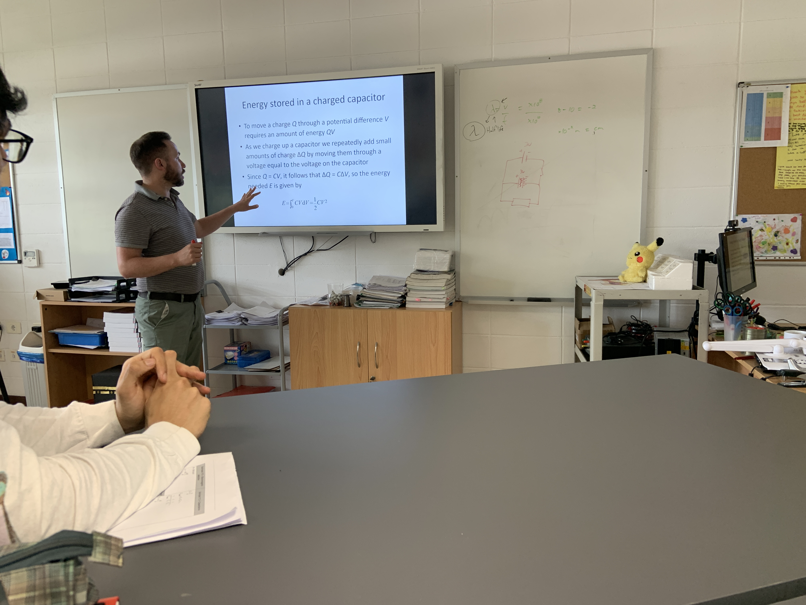Physics
-
Date:15-27/04/2024
NoteSomewhere along this time period, Alex turned in his Physics IA to Mr William. The IA was supposed to be turned in a long time ago and it is really overdue. Mr Williams will remember this.
-
Date:13/04/2024
Climate:Rainy
Location:Uruguayan American School
The volleyball team plays a match against others. They lose the match without winning a single set. They didn't play that well.
After the match, the volleyball team goes to eat at portones. They have the classic debate about which fast food restaurant is the best. It's mainly between Mc Donalds and Burger King. Then they talk about partys. Lupi tells a tale about a time where he went to a party with Mati. They were planning to sneak in by pretending that Lupi didn't know spanish. Lupi accidentally says that his birthday is 2005 instead of 2004 and he looks at Mati (The translator) with a worried face since he has made a mistake. But Mati doesn't know he made a mistake so he just translates the incorrect date (2005) meaning that according to their lies, lupi was still underage. They get in the party anyways.
Alex also loses a clash royale game, and he couldn't talk for like 5 minutes until he accidentally talked.
They also talk about a party happening tonight called the oversize. Luca says that the party looks like it's going to be really bad compared to previous parties done by the same team.
They come back, but it's raining. Timo runs all the way back while everyone else walks.
The Rain
The girls also had a volleyball match, but I don't know if they won or lost. They probably lost because they are really bad
Fede re-dyes his hair blonde.
-
Date:14/04/2024
Climate:I don't remember
Location:A party place
Alex, Mili, Mati, Chad, and many others go to a party. Luca claims that he has seen better parites and this one sucked compared to the last ones. However everyone still appeared to have a lot of fun there.


Party
-
Date:15/04/2024
Climate:Rainy
Location:Uruguayan American School and Greensboro
In the other side of the world, Megan's school is doing a senior assasin event. Basically if you get shot with a water gun while being filmed you lose. Milla and Timo joined the life360 of the event despite not being anywhere close to the US
In UAS, Sebas and Chad play competitive online geoguesser and they do pretty good. Meanwhile Bruno and Sofe talk about an ex of Sofe. This ex had something to do with wind tunnels. He is like a phycisist that works on wind tunnels. Sofe has been talking ab lot with him lately.
During ToK, Mr Turner talks about food to Dani. Dani is worried about his eating habits once finds himself in the US. Mr Turner says that he has to find a co-op. Mr Turner proceeds to give an extensive explanation about how food corporations bought all the scientist to create addictive and sugary foods which. This also prevented the scientists from campaigning against these unhealthy food products. However some healthy food scientists have not been bought off by corporations, these people are known as The Heads. In Co-ops, The Heads find ways to provide healthy foods to people that are interested. They give out all the tips and tricks on cooking. Mr Turner also informs Dani about the presence of "healthy females" in co-pos
During Chemistry, everyone practices papers. Timo brings a balloon. During the international Day, Timo stole a bunch of balloons that he will deploy procedurally throughout the school. Sebas leaves early to play football 5 (Make his cedula)
During lunch, Eitoku and Timo play a clash royale match.
During Physics, everyone practices papers. At one point, they start talking about minecraft and how they all used to have a server where they played together. They started talking about minecraft because people were talking about Ethan who plays minecraft. In this server, Ethan went far away and he refused to reveal the coordinates of his base. This was seen as tryhard behaviour by Luca, Mati, and the rest. Although to Ethan's credit, they did admit that if they ever found his base they would immediately blow it up. Dani also tells tales of Timo annoying him with berry bushes, it got to a point where Dani had to pay 5 diamonds for Timo to stop.
During homeroom, Mili explains how no one can back down from the afterprom now since doing so changes the amount of money that everyone in the class will have to pay. Timo also anounces that everyone should upload images to a drive so that the film crew can create a senior video.
Later that day, Mili is mad because some people like Bruno, Sofe, Guille and Ethan decided they wouldn't go to the after prom. Thie means that everyone now has to pay more. Mili somehow convinced Bruno, Sofe, and Guille to go. Mili and everyone tries to convince Ethan to go, they tell him that they can probably help if its a problem with money, but Ethan responds
Ethan's ResponseFriends, I have no financial issue; choosing not to attend the after prom is a personal decision. I responded at the first instance it was asked. I regret if this causes any inconvenience, and if so, I offer my apologies. My mind is made up, and there's no room for change. I cherish the good years and moments we've shared, and I hope you can do the same. I wish you all a wonderful celebration. We will see each other as usual at school.
Everyone immediately responded negatively. Ethan was present during the Senior Skip Day where the afterprom was discussed and no one recalled him ever saying that he wasn't going to go to the afterprom. Ethan's formal tone in this message was also probably came off as weird or mocking. Furthermore, Ethan has been skipping school like every single day and thus many people found it weird how he said "We will see each other as usual at school" since he hasn't been there lately
Despite all of that, Ethan actually did have a valid reason to not go to the afterprom, but he decided not to share it for some reason.
-
Date:16/04/2024
Climate:Rainy
Location:Uruguayan American School
Sofe, Bruno, and Timo hang out in the flex space while the rest place Geoguesser
Timo and Bruno
The SAAC Basketball and SAAC Tennis teams leave. Chad and San are in SAAC Basketball and they will go to Roosvelt Peru, same place where the 2023 SAAC Fine Arts was hosted.
The Camino happens
Also during Lunch, the Student Council has a meeting, Mati, Fede, and Chiara decide not to go because they are seniors and they do whatever they want. Timo goes because he is a dumbass. They talk about plans for coffee house and they decide that it's going to be an airport murder mystery style. Timo, Luca Taconne, and Kylah will be the hosts.
Also, back in the other side of the world (Greensboro), everyone doesn't like the fact that a man named Sean (Timo) was in their life360. Sean responded to their worries saying that he just wanted to play the game. Everyone insisted for Sean to leave so he left.
-
Date:17/04/2024
Climate:Sunny
Location:Uruguayan American School
It's the last A day today. Sebas is kinda sad that he doesn't have Chad to play geoguesser with during study hall. During Chemistry, Sebas, Timo, and Lucas learn about lattice enthalpies and the born haber cycle which allows them to obtain several enthalpies. Timo also inflates a balloon after failing to find food for Lucas to consume.

Also the Chem class takes this picture
During Physics, everyone practices papers. Timo spends most of his time with Williams trying to figure out the origin of a force that a positive moving particle feels in a magnetic field but from the particle's frame of reference. Williams is kind of lost, the markscheme says that from the particle's reference frame, the force is electric. However the Markscheme does not explain why the force is electric from the particle's point of view. Neither Timo nor Williams understand where the electric force is coming from.
Mr Williams proceeds to read an entire textbook chapter to Timo. Timo had already read the chapter and he knew that the information they were looking for was not there. Mr Williams decided to read the entire chapter anyways and he effectively found nothing of use in it. Mr Williams just tells Timo that he should simply memorise the fact that a magnetic field will always be an electric field when the reference frame is changed. Timo is unhappy with this answer since he likes to know the reasoning behind things.
Dani later comes and he has several questions. Williams tells Dani that he should not look at the markscheme while doing the answers since it builds up an unwanted mentality for the tests. Williams also makes a final comment saying that "It's easy when you think about it".
After the class ends, Dani gets super mad at Williams and he rants to Timo about him. He points out how it is hypocritical that Williams tells him how he shouldn't look at the markscheme while Williams doesn't know the answer without looking at it either. Dani also apparently heard Mr Williams reading the entire chapter of relativity to Timo which made Dani mad since this proves that "Williams doesn't know shit". Timo advises Dani that it's better to lauph about it rather than getting mad since nothing can be done about it. Dani agrees.
During advisory they compare their college mascots
Back in the senior assasin life360 situation in Greensboro, Sean joins and checks up on everyone, but no one wants him there. Then they change the life360 code so Sean can't rejoin.
-
Date:18/04/2024
Climate:Sunny
Location:Uruguayan American School
The English class learns. Alex, Eitoku, and some others arrived late and Ms Moskovics is not happy about that, but at this point no one really cares because it's the
Last Day of Class!
Digital Society class takes a test.
During Math, Mr Zarsky tells everyone that if they have any questions, he will answer them. Much like every class, no one goes to Zarsky to ask questions. Zarsky is kind of sad about this. But then Timo arrives. yesterday Timo and Mr Williams had a session where Mr Williams completely failed to explain a relativity concept to Timo. So Timo decided to go to Mr Zarsky since Zarsky is a genius that knows a lot about physics and pretty much anything.
However Mr Zarsky's strength isn't relativity and thus both of them struggle to come up with an explanation. Both definately agree that it's weird for the force's origin to be electric since there are no other charges to produce an electric field. Mr Zarsky and Timo do some investigation, Zarsky finds some equations in wikipedia and he tries to make them work. But then the fire alarm happens and a fire drill interrupts their work.
During the fire alarm Mr Williams and Zarsky talk about the physics problem. This is also the last Fire Drill.
When Timo and Zarsky come back, Timo had figured out that the source of the force from the reference frame of the particle was a lorentz force according to the law of induction since the particle needed to resist the change in magnetic flux.
Zarsky says that relativity tends to establish that magnetic and electric forces are the same, it just depends on the reference frame. However in this case it's not an equivalence between electric and magnetic field, it's an equivalence between a magnetic and a lorentz force. This also makes sense, since hendrik lorentz also contributed a lot to special relativity with lorentz transformations. They conclude that the markscheme was wrong.
After that, everyone goes to lunch and they all eat. Chiara arrives during this time and she leaves some extra food that was collected at the class of sylvia.
Food and everyone
In 4B, everyone goes to the class of Sylvia, there is foot here, Takis, crisps, cake, and more. Turner is here aswell and Ms Sylvia suggests for everyone to talk about some anecdotes of school.
Anecdote 1Mr Turner says that once, in 9nth web development, during the quarintines, Salma said that she couldn't do homework because she was in the beach and she had no internet. Salma justified herself saying that "It was 9nth grade web development, ya fue"
Anecdote 2Chiara says that Mr Turner used to punish everyone for not sitting in the correct sits. Turner used to have a sitting arrangement.
Anecdote 3Chiara has a list of quotes that Turner has said
Anecdote 4Fede has a list of quotes Williams has said.
Martina says multiple times that she wants to go play volleyball, but no one really wants to. Then some people do a just dance. Timo suggests for everyone to do a final recorrido through the school.
They all go, first to the flex space, then to the bridge, then to the new lunch, and then to the gym. They meet Javi at the bridge and he records this video.
People talk about some memories that they made at certain places.
At the gym, people play volleyball, basketball, and they also film some videos. Ethan, Lucas, Sebas, and Timo play lightning. Alex, Lupi, and Eitoku play basketball. Then most people eventually leave. They also record the following TikTok
At the Gym
The bio HL class takes a picture, and then everyone goes back to the spanish class wehre they do some just dances. Mati, Timo, Dani, Luca, and Salma are people that were in this school since elementary, and now they are here and that is very cool.
Then, the seniors hear their final official bell.
Final bell
After classes officially end, Lupi and Dani start talking about the past, they talk about tenth grade. Foege's class used to be very easy and boring, Foege would assign some reading homework and do nothing. Lupi talks about how he was in class with Alex, Sebas, Megan, and Milla, and he wasn't friends with any of them at the time so he used to play clash royale. Meanwhile Foege would stare at the google search bar for the entire class.
Dani and Lupi meet Timo at the flex space, they start to look at some posters that Dingley made them do during the quarintines. A long time ago, during the quarintines, Mr Dingley made the class draw some posters about them. Mr Dingley pasted the posters that he liked on the wall. Lupi's and Timo's posters were there. Mr Kelly joins them for a little while, he informs everyone that he went to japan, and then he leaves.
After that little visit to the past, they go back to the downstairs flex space and they talk about their future from now. Lupi is going to a familiar place in the united states where he will meet up with his best friend, James. Dani will go to a university in arizona. And Timo will have a journey where he decides what he will do with his life.
Lupi comments on the fact that it's going to be really hard for Dani and Timo to adjust to a new enviorment that college will present them. Timo comments how he felt "extra Uruguayan" when visiting Megan and the swamp dwellers. Lupi says that there is stuff that they will have to get used to, like the fact they won't be able to speak in spanglish as often. Lupi isn't going to have that hard of a transition because he knows the area and he has a friend going to the same college.
Dani leaves, Timo and Lupi talk about their terrible habits for schoolwork. Both Lupi and Timo have left the Extended Essay and most IA's for this final semester which was terrible to them. Timo comments on how he couldn't join SAAC Fine Arts because of this. Then they talk about SAAC Fine Arts, Timo is wearing the official SAAC Fine Arts shirt and he tells Lupi of the time that Timo sneaked into the SAAC Fine Arts final picture during the closing ceremony.
Then they start talking about how the UAS's art department was clearly the worse out of every SAAC school. Nido for example has an entire building dedicated to the music while UAS doesn't even offer any highschool music activity. In Curitiba, above the gym, there were several rooms dedicated to multiple arts like dance, music, or drawing. UAS also only has IB Visual Arts course and not IB Dance, music, or theatre.
Finally, they comment on the fact that English has been ruined by education. Unlike other art classes, english classes are not as fun since they don't involve the creation of art, it's only analysing art. Lupi says that it would be fire if they could create their own poems. Furthermore, education has made English classes too structured with things such as PETER L. In Spanish, the student is given more freedom in terms of how to structure an analysis, but english is severely different for some reason.
The house of Salma
Later that day, they all celebrate at Salma's house
They play a game where a prompt is given and people have to write names of others in some whiteboards. Then they play "never have I ever" with an app but all the questions are too innapropiate and weird and no one liked it. Mili also gives everyone a letter since it's the last day of class.
There is pizza to eat, and more people arrive. They talk about the senior prank, and they get no conclusions. Then they talk about who is going to give the senior speach. To decide this they made a whatsapp poll with everyone that wanted to give the speach. Fede wanted to use the current votes while Mili wanted the entire class to vote. The entire class didn't vote, Fede and Salma won.
They also do polls for the prom royalty. They create a poll in instagram and they make thee class of 2024 instagram account public. Nikki knows a lot of people outside of UAS so she started telling everyone she knew to vote her. However Martina also wanted to be prom queen. Martina's dad is a very well known proffessional Uruguayan football player who can potentially give Martina a lot of votes. The Prom King is going to be Fabri probably.
At this point for some reason, Chiara really wants McDonalds ice-cream and Eitoku, Alex, Angie, and others go outside. While they are outside, they talk about secrets.
They go back inside again, and now the music is really loud for Timo and Lucas, so both go out. Then, Fabri and Chiara go to get ice-cream at McDonalds and Timo joins them.
During this little car drive, Chiara asks Fabri "You know why I haven't been going to school recently?". Then she answered the question, but she told Timo that "What is said in the car ride stays in the car ride".
So I guess I can't sayExcept I don't think it was that serious. Essentially Chiara has beef with all the other girls(Except probably Sofe and Guille) and thus she felt lonely, excluded and sad. Fabri said that he had realised this and he tried to help Chiara. She specially has beef with Salma but I don't know the origin story behind this beef.
Fabri comments on how this kind of drama is never present with boys and it only happens with girls for some reason. Girls tend to mask negative emotions more than men. This means girls sometimes might not confront whoever bothers them in order to not seem negative, this means negative emotions build up more which causes more tension and drama. But that's just my theory
Chiara feels unwell so she tells Fabri to drop her off at her house.
After leaving Chiara to her house, Fabri confesses something to Timo.
Fabri and Timo come back, and Nikki takes 6 minutes to open the door. Some people leave to a party and others leave to their homes.
-
Date:20/04/2024
Climate:Cloudy
Location:CDV court - The House of Mili
The boys play a game of volleyball against Olympia in the CDV court. They play 5 sets and they lose the game. They aren't really proud of how they played since they got really tired after a while.
Later that day, at night, some people go to the house of Milagros
- Luca
- Mati
- Fede
- Fabri
- Salma
- Angie
They are watching the SAAC Basketball match of Nido against UAS, its the finals. UAS is losing. Timo arrives, and then Lupi arrives, and then UAS loses officially against Nido. What a shame but at least we got second place. Fuck Nido
Lupi, Fabri, Luca, and Timo start playing ping pong while Fede makes Angie take an autism test. Then everyone takes the autism test. Everyone gets values ranging from 0-50 and Timo gets 130 which is the perfect mean autism score.
Ping pong and talking
Then Mili starts to ask random deep questions. I don't remember many of these because I was tired. One of the questions was something along the lines of "Who was your first friend". Timo and Mati have met each other a very long time ago before they were even in UAS.
After a big while, Luca leaves at 6 AM after Fabri decided to got to Mc Donalds since Angie insisted on getting Ice-Cream. Luca is kind of mad that Fabri made him leave this late.
-
Date:21/04/2024
Climate:Rainy and Clear
Location:
Sofe, Mateo, and Bruno go to see a Cuarteto de Nos concert. They have a lot of fun and Roberto even said Hi to Sofe. Mateo is a good friend of Sofe that I never met so you won't be hearing much from him. He is probably a really coold dude.
-
Date:22/04/2024
Climate:Cloudy
Location:Uruguayan American School
Mili arrives to school for the Math class in the first period. Seniors aren't really supposed to come today, but they can come if they want to study some more.
During the second period, Chiara and Timo find each other in the computer lab since they are both printing some English work because Moskovicks won't grade anything unless its printed. Chiara wasn't here when Moskovicks told everyone to print their papers. She has a lot of F's that shouldn't be F's.
Then Chiara obtains her class picture, and Timo does aswell. Timo goes to the Flex Space and Lupi arrives. They talk about how unwise it is for Moskovicks to assign English Homework when the official IB Exams are about to start. Timo has an F in the class, a 23% to be exact, and he is really worried about that because he needs to graduate.
Luca Cassoni arrives, Lupi and Luca start debating about which science is better, Chemistry or Physics. Lupi then looks at the physics syllabus and he finds it pretty interesting and fun.
Something strange is that both Timo and Luca were told by Lucas that he would arrive at 11, but it's already 11 and that hasn't happened. Lucas arrived around 12 and he started practicing chemistry with Timo while Lupi practiced alone and Luca practiced Physics.
Then they went to eat while talking about basketball.
They came back and they started to talk about food. Timo inflated a balloon. Lately every time Lucas mentions food, Timo inflates a balloon that he stole from the international Day.
After that, they start talking about what is the best month. Timo and Luca say that its febuary since that month is their month of birth. Also Mili joined enters the scene.
Rafa walks by and he gets asked this questions: "What is the worst month" he says that it's August and everyone finds this to be a respectable answer. Mr Turner also walk by, he says the worst month is april. He quotes a poem called "The Waste Land" by T.S Elliot which starts by saying that "April is the cruellest month" in the first verse. Turner goes on to explain that the poem implies that April is only the worst because it's the beginning of life, but life implies death, there can be no good without evil, no heaven without hell.
Timo suddenly gets really tired. And Alex arrives. Alex and Lupi start to play clash royale while everyone else tries to study. Chad calls Alex, and Chad gets scolded for not coming to school. Then Alex leaves and everyone starts discussing the worst names. Mr Amaral gets asked what the question: "What is the worst name". He says it's Yampol. Lupi tells a tale of people named Kelvin and Miiac (Pronounced Maic with an accent on the "i")
Dani then out of nowehere texts Timo about how he feels like for several different sub-topics of physics. Dani sends a detailed explanation of how prepared he is for all the physics syllabus.
Lucas and Timo stay studying for a while until they decide to leave because theya are tired. Lucas drives Timo home. However Luca missed a turn so he decided to go all the way to Mones Roses and then take the Cooper street all the way to San Nicolas. Except he didn't even turn in the right way so he actually took one of the longest possible trajectories to Timo's home.
Later that day, Dani and Timo study for physics quantum mechanics. Dani sends his notes to the physics groupchat.
A very small fragment of the notes that Dani took on quantum mechanics
Also Ethan had a question about nuclear reactions. He needed to find the binding energy for a reaction. Timo helped him and Ethan responded in old english
No one understood this
Also, Eitoku leaves today
Eitoku gone (For now)
-
Date:23/04/2024
Climate:Cloudy
Location:Uruguayan American School
Mati, Mili, and Fede are in the flex space at UAS. Mati is developing a game, Mili is working on math, and Fede is studying Biology. Then Timo arrives and he starts studying for Biology with Fede even though Timo doesn't take Bio. Fede informs everyone that apparently Moskovicks has fallen again, she got injured.
In case you aren't aware, This is not the first time that mosko has fallen and hurt herself. She often comes to school with a random cast after having fallen. Today she couldn't even come.

Timo seconds after Mocking Mosko in front of Amaral
Amaral comes and sees everyone talking about Moskovicks, Amaral tells them that "she fell and got injured" and Timo replied "Yeah she tends to do that". Luckilty Amaral didn't really hear this, but then he said that "she has balance issues". Anyon gives a card with a phone number to fede, the note says "Martin Katz" and it has a phone number written on it.
Mili and Mati start actually trying to do math. They struggle quite a bit but they manage to complete some questions. Then Mili and Mati go to portones to get some things. There is this new chip called the Takis, spicy stuff, Mili, Mati, and others really like this stuff. Timo asks for a kinder egg. While Mili and Mati go to portones. Fede and Timo study, but they get bored and start playing clash royale duos. They lose so many matches.
Mili and Mati come back, they tell Timo that the kinder egg was left at the car. Mili gives Timo her car keys so that he can go get the egg, but Mati reminds Mili that she had the egg with her the whole time. Mati knew this but he thought that Mili was joking. The kinder egg surprise had a blue salamander.
Then Mati and Mili lock in, they start doing a lot of problems about binomial theorem and other math topics. They look so smart right now
Lunch time arrives, Mili and Mati once again go out of the school to get McDonalds and also to pick up Martina who lives close by. Dani informs the Physics groupchat about his progress with studying physics. Fede and Timo eat lunch at school and then they go back to studying. Timo is curious about the identity of Martin Katz. He stole the sticky note that Anyon gave him and he wanted to take a picture of it, however Fede took his phone. Timo then took his computer and locked himself in the bathroom to annotate the phone number. Fede obtained Timo's phone and he took several pictures with it.
They suffer from Physics
They got out of the bathroom, Martina and Luca were in the flex space, they had arrived recently. Apparently Mili and Mati could not enter the school with McDonalds food so they had to eat outside. Martina, Fede, and Timo went to get their food.
They go all the way to the car of Mili and they eat ice-cream and McFlurry while talking about what happened. Apparently Mili and Mati were called out by Helene since she saw the McDonalds bags. Then they went to talk to Mr Murphy who decided that Mc Donalds wasn't allowed. The student handbook did not mention this.
Fede mentions that Murphy refers to the student handbook when it helps his argument. After that they just complain about Murphy until Milagros gets a call from his dad and some doctor. Everyone goes extremely quiet. Mati puts a song through the car speakers at full volume for like 1 second and everyone holds their lauphter

In the car
Eventually they leave the car and go back to studying, Fede also says that because Moskovicks got injured, Gladys might make a comeback. Also Lucas arrives to study chemistry. Now, Fede studies Biology, Lucas plays clash royale, and Mati takes a nap. Martina, Luca, and Timo do some physics problems. Rafa comes and they all lauph at Ethan's strange messages. Martina comments on how he sounds like an anime character. Then they talk about Rafa's future IB classes and how he plans on taking Physics, Math, and Economics HL.

Mili's Takis are visible in this photo
After that everyone but Timo and Lucas leave. Timo and Lucas study chemistry for a while but they become tired. They start to head to their homes, but they realise that there are some unopened oreos in a table. Timo steals two and gives one to lucas, and then they leave. Nico Bruni saw them but they leave before he can do anything
At night they discuss food for prom because apparently no one knew that Chiara and Mati went to taste the food for prom a while ago.
-
Date:24/04/2024
Climate:Sunny
Location:Uruguayan American School
The physics people do several multiple choice questions in preparation for paper 1. Martina, Mati, Ethan, and Timo are all here. That's all they really do, Ethan didn't come until much later. He did a multiple choice with Timo where they discussed the coeficient of static friction and how it can be found by using tan of the angle of inclination, here is the a diagram explaining that.

Proof that the Coeficient of Static Friction is the Tangent of the angle of inclination for a mass in an inclined plane.
Also Mr Williams proves to be useless at relativity once again.
Also also Chiara lost her calculator which looks exactly like Timo's

Timo's calculator and Timo's calculations
-
Date:25/04/2024
Climate:Sunny and Rainy
Location:Uruguayan American School
Mati and Fede are in the upstairs flex space. Today the physics exams occur. Mati is doing a lot of paper 1 questions but he is not getting the right answers. Timo and Martina arrive. Timo mentions how he has studied so much physics that he dreams of physics problems, Martina responds saying that she plays so much genshin impact that she dreams of genshin impact. Lupi states that at some point, he used to play a lot of chess, and he would think of everything like chess, and everything was timed, and it was really stressful. Fede also does the following trend
Sebas and Alex are getting 100%
They all keep studying, and more people are showing up. Salma, Mili, and Fede are people that were not taking physics, but they showed up anyways for moral support. Salma gave Chad her green woolen sweater since Chad had a hoodie and hoodies aren't allowed in the IB exams.
The students have their digital devices removed from their person and they are escorted into the exam container. Timo brings two cups of water but apparently only transparent containers are allowed. Timo also realises he forgot his pencil after Amaral reminded everyone that the answeres should be marked with pencicls. Mr Amaral Mocks him saying "Of course it's you who forgot a pencil"
Mr Amaral does the monologue about the IB rules, the monologue basically gives everyone a chance for taking care of unauthorised items and making sure all the data in the official IB papers is correct.
Mr Amaral tells the students to "check if all data in the IB papers is correct", Ethan remarks how the examination papers say "afternoon" and not "morning". The exam was being taken at 10Am so it was strange that it said "afternoon". This was not a mistake by the IB. This becomes important in the near future.
Everyone did paper 1, it was actually pretty touph and no one liked it. The ones who finished were escorted to a classroom near the emergency exit(the emergency exit was being used as an entrance to the containers) This classroom has window walls so people call it a fishbowl. Amaral procedurally informs the students about his mistake. The exam was supposed to be taken in the afternoon, but everyone took it in the morning. This means that the students had access to the exam before they were supposed to. Amaral messaged the IB and they said that the classroom must be kept under quarintine with complete isolation to the outer world to prevent information about the paper 1 from being disseminated. In conclusion, the class can not interact with anyone outside the teachers and themselves for 3 hours until the next exam which is the paper 3.
No one is thrilled by the news. They all got kidnapped because Mr Amaral accidentally held the exam earlier than what he should have. They all eat alfajores and discuss IB questions while Martina writes letters trying to communicate to other students through the windows in the classroom. There was a problem about Beta + Decay in which a Proton decays into a neutron by releasing a positron and an electron neutrino.
They also discuss more questions until Mr Amaral realised that the class was way too small for all the students. They were all excorted to the class of Ms Mills, the history class. They brought games, they printed past papers, and they ordered pizza to prepare for the 3 hour wait.
This is how the class was left
Here are some things that happened-
Cards
Chad, Alex, and Luca, and I think Mati aswell started playing cards, mostly a game called shin or jin. Honestly I don't know how to play it but it looked intense.
-
Bop-it
Timo and Ethan played Bop-it against each other for 10 minutes. Ethan won.
-
What the are you even saying?
Martina starts saying that different people are different historical archetypes.
Person Archetype Explanation Chad Victorian Child Victorian childs are always suffering from diseases and stuff. Not sure how that applies to Chad though. Timo - Lepricon-Martina
- Wizard-Timo
- Jester-Sebas
So Timo was wearing a goofy green and purple coloured hat because Sebas said that it would fit him greatly Ethan Victorian Child He never comes to school because he is always sick so this time it makes sense. Sebas Farmer Absolutely no one disagrees, not even sebas, he wants to be a farmer. Martina - Princess-Most People
- King-Martina
Shen wanted to be king or queen but everyone else said that she would be a spoiled princess. And if your are wondering what any of this means
-
Jenga
Timo, Sebas, Dani, and Ethan start to play Jenga and they reminice of the times where they played among us and Dani would over analyse everything. One Time Dani was being chased by Timo because Timo was bored. The doors just happened to close at the right times for Dani to suspect that Timo was trying to kill him. Dani immediately rushed for an emergency meeting completely convinced that the impostor was Timo, but it wasn't and Timo found it too funny to defend himself.
They stop playing Jenga after Timo was taken away by Moskovicks. Moskovicks upsets Timo by telling him that he shouldn't go to a university that requires a lot of effort and that he is not going to do well in the IB english exams :(
-
Practice Papers
When Timo returns, everyone was doing past papers. The questions are pretty interesting and hard.
-
Pizza :D
Pizza arrives, the delivery guy took a while but he finally got here. Everyone eats pizza and drinks pepsi. Mr Amaral calls pepsi "excesso en azucar". Timo forgets to grab his pepsi and when there is 1 extra pepsi and Timo claims it, Mr Amaral says "of course it's your pepsi".
After eating, Martina dies. And by that I mean that she falls asleep and doesn't wake up until right after the Paper 3 Exam.
-
Magic Tricks
Mati shows Luca and Chad a magic trick and they are absolutely bamboozled and flabberghasted. Mati repeats the same magic trick over 20 times while Chad, Luca, and Alex (Who joined out of curiosity) try to figure out the magic trick. The magic trick is the following, Mati makes you pick a card, he puts it in the deck, he shuffles it, and then he knows where the card is.
Alex figures it out, Mati looks at the card that is right before the chosen card. Something like that, all you need to know is that it wasn't real magic, very sad.
So after all those events, the exam time came. Mills reviving Martina but she awakened eventually. They all head to the exam room, Timo asks if Martina dreamt with physics, she didn't, she dreamt of Genshin Impact. Everyone is ultra ready for the Paper 3 Physics Exam, the optional module.
After the paper 3 exam, most people leave to their houses. Mati has a small talk with Timo. Apparently the astrophysics exam was very different from past Astrophysics Papers that Martina and Mati have been studying all along, and thus they don't think they got a very good grade.
Before leaving, Amaral gives Timo back his phone. Timo's phone is very damaged and it has tape all around it to prevent it from falling apart. Amaral remarks "Of course this is your phone."

The containers where the exams are taken
Later that day, Dani and Timo do some paper 2 practice questions from past papers. But little did they know that they accidentally chose one of the hardest past papers in the world, they don't even get to finish half of it. They go to sleep. But before they go to sleep, they look at the remaining questions and lauph at how absurd and difficult they are. The test had some chemistry concepts, some astrophysics concepts, and some complex derivations. To make it worse this was a november re-take exam, meaning that people who had already taken an exam where re-taking this one in november. This made it extra funny.
Question 4 of this past paper had a section in which there was a certain mass of plutonium 238. The question had the student calculate how much energy could be obtained from this mass. The question required knowledge of how to use avogadro's number and the molar mass equations which are both concepts from chemistry. Dani obviously didn't know this since Mr Williams didn't bother teaching it to him. Timo taught Dani the basic chemistry knowledge needed to solve this problem
"Who the hell brought this hell to earth and why"
-
Cards
-
Date:26/04/2024
Climate:Rainy
Location:Uruguayan American School
The seniors have a physics paper 2 exam, Milla already took this exam. Mati and Sebas are calculating their IB grade and the rest of everyone arrives. They talk about how this is the last time they are going to have to worry about physics again. Timo arrives, he tells Mati that Milla has already taken the paper 2 and she could give them the answers. Then Mati realises that because they took the Paper 3 very early yesterday, they could have sold the answers of the paper 1 to the rest of the world. Althouhg the answers would be all wrong because no one did well in Paper 1.
Sebs studies
Martina, Luca, and Timo talk about the different Paper 3 options. Apparently this paper 3 asked things that most papers never asked about. Martina and Mati who take astrophysics got questions that they have never seen before in past papers, so they didn't do that well. Luca said that in engineering, they didn't get many calculations, instead they got many word problems which he found easier. And Timo said that the entirety of relativity problems was just easier than any Paper 3 he had done before.
Dani also mentions how he finds it funny that Timo chose Physics HL because Martina had taken Physics HL, but then Martina dropped down to SL. Timo and Martina both take Math AI and people who take Math AI don't usually take physics since physics requires knowledge of concepts like trigonometric identities and radians which the Math AI course does not cover. Mr Williams advised against Timo joining physics HL since he is taking Math AI, but since Martina and Sebas were doing it, Timo joined in. Then Sebs and Martina dropped down leaving Timo alone :(
Then they go into the container. "This exam was actually really fun in my opinion" - Only Timo
Mati and Timo go to talk to Moskovicks. Moskovicks failed to grade one of Mati's assigments and Mati lost a scholarship because of that. Mosko then argues for 30 minutes that it wasn't her fault. Timo is currently failing the class so he needs to turn something in. Mili comes into Moskovicks' class and asks Moskovicks if she can re-do some assigments to improve her grade. Moskovicks says that she is raising a generation of irresponsible students. Poor Mati had to deal with a Physics Paper 2 exam and now Moskovicks
Meanwhile, Chad, Alex, Lupi, and Sebas had gone to Portones to get Burger king. Then they came back to school and started playing a geoguesser matches against each other. The winner will officially become the burger king. It's Sebas and Alex against Chad and Lupi. Sebas is the best in Geoguesser but having Alex as a teammate nerfed him a lot, and thus Chad and Lupi get the win.
Alex lost
In this paper 2 there was a really similar question to to the one that Dani and Timo had seen a day before. Dani was capable of completing the question thanks to the knowledge he gained yesterday. Alex felt kinda bad since he takes chemistry HL and he failed to do that question.
Then they play volleyball
Also, completely unrelated side note, but an elementary class got a better art exposition than what the IB art students got. Just wanted to point that out.
The kinder art exhibition having a better space to present than the IB art exhibition
-
Date:27/04/2024
Climate:Rainy
Location:Centro de Desarollo de volleyball
Volleyball matches, the girls lose and the boys win. However the team that the boys were playing weren't the best. They used the match mostly to practice some spikes. But Marco and Mateo did something interesting.
Marco first asked his brother Lupi if he should underhand serve and Lupi told him to do it. Marco performed the underhand serve. However the ball collided with a horizontal pipe in the ceiling which prevented him from getting a point. Mateo decided to also perform the underhand serve on his own volition. This serve won the last point of the game. The other team was very pissed and the reputation of UAS as a respectable volleyball team was completely ruined in the volleyball world of Uruguay.
This made the other team kinda pissed, Coach Sebas was also pissed since this is bad sportsmanship. Truly a disapointment. Very bad that the rich private english speaking school behaves this way.
In the Table Tube Gang, Megan and Fede send videos.
Dogs, Megan's Roof, and Megan's university stuff
-
Date:29/04/2024
Climate:Sunny
Location:Uruguayan American School
Chiara, Fede, and Milagros are in the flex space studying Mathematics, everyone has the Math exam next and thus they must prepare. Timo, Alex, and Sebas arrive. Timo helps Chiara with a few Math problems. Also Chiara found her calculator in the exam room, this is the journey of Chiara's calculator.
Chiara forgot her calculator during the mock exams, Timo picked up the calculator thinking it was his'. Timo and Chiara have the same calculator. Timo then left the extra calculator with Helene. Chiara realised her calculator was missing but Helene no longer had it, someone had taken it. Then Chiara found it in the exam room.
Chiara then leaves and Timo goes to visit Sebas, Sofe, and Lucas who are studying Mathematics, however Timo's mere presence is enouph to distract them so they end up doing nothing. Sofe leaves to eat pasta to her house. Sofe daps everyone to say goodbye to them and Dani says that he never had "a chick dap him up that good" and he proceeds to make a big deal out of it.
Then Martina sends a problem through the physics group chat and Sebas is completely confused since Physics is over, why is she asking questions? Turns out it's a math question not a physics question so it's acceptable. Sebas was really disturbed since he did not want to hear anything about physics ever again in his life.
During lunch, Sebas says he had a dream a while ago where the entire class was there and Miss Nina was being annoying. Also Sebas was shirtless. Timo had a dream where Eitoku died from Meth overdose and then everyone dumped a lot of playing cards on him, not knowing he was dead. Then Alex comes with Mr Williams, they talk about the papers. Mr Williams agrees that paper 3 and 2 were actually pretty easy.
They go back to the library, but then they all go to the biology class. Bruno has arrived and he starts talking with Sofe. Sofe says that her grandma tried hooking her up with someone from new zealand, Timo asks why and Sofe says its because she is single. Timo says he didn't know this information- Sofe is shocked because she has been single for 2 months. Sofe also shows Timo a poem called "Non-believer" which is about someone believing in themselves instead of believing in god.
Lucas and Sebas then answer some questions that Fede has, the questions are mostly "Who is more likely to" questions. The conclusions are that Sebas is likely to ask for advice and not take it, Chiara is afraid of clowns, and Timo gets stuck at escalators. They call Timo a retard several times, but in a friendly way.
Then they go to the library, all this time Timo has been playing clash royale but he has lost every single game. Timo finally gives up, and then Sebas goes home. Lucas practices a paper 2 and then he leaves. Mati and Mili also went to buy stuff, they bought chocolates and an alfajor.
-
Date:30/04/2024
Climate:Cloudy
Location:Uruguayan American School
This is the last day before the Math test, all classes have this exam since the IB requires the students to take at least one math subject.
Chiara and Timo study Math for a while, then Lucas joins them. Chiara is having a lot of trouble with a paper 2 exam. She struggles with a question about the trapezoidial rule, and another question about bearings which she had never seen before. Turns out she printed an HL paper so there were some questions she couldn't answer.
Lupi did a similar mistake, he printed a Math AI paper 1 instead of an AA paper, the Math AI paper allows the use of calculators so Lupi was confused since there were some calculations that could not be done without a calculator.
Chiara, Lucas, Sofe, and Timo went to consult with Zarsky about math, they figured out how to do hypothesis tests and how to use the trapezoidial rule. Lucas went to eat lunch in the middle of the lesson, the rest skipped lunch. Also, Mr Zarsky and Amaral realise that for the mocks, they took a specific function off the students' calculators, but they were actually allowed to have that function. Timo downloaded this function back into his' and Chiara's calculator.
Zarsky is about to leave but Martina arrives just in time to speak to him about some problems that she has been having with her calculator.
At some point Mati and Mili go to get Takis at portones, they do this a lot. Mr Turner tries one Taki and he says that it tasted like spicy chemicals. Mr Turner usually likes spicy but this wasn't good. Mr Turner also expresses his surprise at what the flex space has become thanks to the seniors (Papers and Takis everywhere, basically a mess). Mr Turner then says "What the Sigma?" and everyone died.
-
Date:01/05/2024
Climate:Cloudy
Location:Uruguayan American School
Chiara arrives to the school at 9:30, and at some point Nikki joins her and they start studying for Math AI, absolutely everyone who takes the IB in the world has the Math paper 1 test today, for those who haven't taken physics, this is their first exam.
Mati and Mili also come, and then they go to get some food, unfortunately it's the first of may so Mc Donalds isn't open. They have to go to a gas station instead. Timo also joins them, and then Lupi, Luca, Chad, and then more and more people. Chad has a big smile on his face, he is ready to absolutely cook in this exam.
Eventually everyone arrives, Sebas arrives with a christmas sweater since the IB does not allow pockets in sweaters, jumpers, and all that stuff. Also Nata arrives, since she is also taking the IB and much like everyone. The only difference is that Nata left the Uruguayan American School a long time ago for reasons that I still don't really understand.
Martina resets all the TI-84 calculators because she learned how to do it correctly from Mr Zarsky yesterday. Last time that Amaral reset the calculators, he deleted some essencial functions that were needed.
Timo and Sebas will compete to see who gets the best grade in Math AI. Timo asks Dani who does he think will win this competition. Dani says Timo will other do incredibly or terribly.
Amaral collects all phones and then guides everyone to the exam container. Gladys and Ms Iruleguy are the ones who will monitor everything. So Amaral gives his speach, and he opens the paper 1 exams. Nikki has pants with pockets so she had to use some extra shorts that Mati had.
People then do the exams. Lupi, Timo, and the HL's finnish at the same time. Lupi says that he did terribly, specially in a question about geometric sequences. All the HL's also say they did terribly, Chad says that in one question he tried integration by parts both ways but he couldn't do it so he used U-substitution and it worked, everyone realises that they were meant to use U-substitution and they all wanted to die. I don't know what any of that means or if it makes any sense. Fede says he would have rathered not knowing that he did it wrong because he can't change it now. Apparently Chad is the only one who got that right, even though it took him a while. They also had a sequence question since they take the same math as lupi, and they also had no clue of how to do it.
Chad explains and Cat (This cat will be important in the future)
Overall none of the HL's did well, or at least thats what they think. Alex said it was his worst paper 1 that he has ever done. But Amaral says that every year, the HL math students say the same thing.
-
Date:02/05/2024
Climate:Sunny
Location:Uruguayan American School
Milla finishes her paper 2 exam and she is happy because it wasn't that bad. Milla always finishes the exams sooner than UAS because she is in Finland.
Paper 2 exams are impending. The students are all kinds of worried, but they are more confident than before since they have already taken a test and they know how it feels now. They quickly review their knowledge. Lupi, Nikki, Chiara, and Angie do a good luck ritual which involves hand holding and incantations. Timo puts some music, he made a "before exam playlist"
In the exam room, Ms Iruleguy tells everyone to get up and pick the calculators but Amaral tells her that the calculators must be handed to the students and Iruleguy gets kinda mad for some reason??.
The test was a medium level of difficulty. For the Math AA, there was an unusual amount of writing. There was a question about a man arriving late or something like that, Dani answered this question saying, "He was having a bad day" and that probably wasn't the correct answer. The Math AI test was easier. Lupi says that he got "even more cooked than yesterday" so that is unfortunate. Lupi is very expressive about how he does in exams thats why I mention him lately.
The computer science people have their exam next. Lupi comments on how Javi might be the worst teacher in UAS, but he remains because "he's a G". Dani says that he is not the worst teacher, he just has very unique teaching methods.
During lunch, they also remember times of health class that were funny. Chad says that his health class was really boring, meanwhile in the UAS health class, there were always debates on topics such as abortion.
They also talk about Santiago, someone that came to the class before the quarintines, everyone found him really annoying. Fabri contacted him asking to listen to some beats he made, but Fabri kept saying that the beats were trash so he would ask for more saying "nah this one is trash send me another one". This got Santiago really angry. Fabri wasn't even in the school at this time. In fact I don't think I ever mentioned Santiago so I will give you a quick recap about him.
He was kinda dumb, Camilo told him several times to stop using soundcloud in class but he didn't care. He is probably the first person evert to make Camilo get actually mad. They also called him "El Felip" for some unkown reason. During music, he was always playing faster than everyone else to show off, the Music Teacher Joaquin Baranzano always told him that he had to be in the same rythm as everyone else. That is all
Then the computer science people take the test, and they probably did pretty well.
Later that day Fede and Salma finish up all the senior university anouncements.
-
Date:03/05/2024
Climate:Sunny
Location:Uruguayan American School
Sebas and Lucas are studying energetics at the library. They first watch some videos on the topic by MSJ chem and then they do some questions in a website the Lucas has access to. Timo arrives and they all start answering some questions. Lucas tells him to get out since whenever Timo arrives, something always happens and everyone gets distracted. Timo assures them that nothing will happen.
Dani arrives, and then Fabri arrives. Fabri starts to play clash royale and then everyone else starts to play clash royale. Then Javi arrives and he goes through the Digital Society mocks with everyone. Apparently people didn't really offer an in depth analysis for many of the questions. Dani is really invested into this insight that Javi is giving him
Dani then starts to correct his exam. He compares it to Timo's exam in the questions were Timo got higher marks. Sebas and Lucas get their exams thoroughly corrected by Javi.
After that, Javi leaves. Dani comments on how it is insane that they got their Digital Society mock corrections this late. Everyone starts to study for chemistry until Mr Murphy shows up and sits down next to Timo. Timo salutes Mr Murphy, the director asks "Do you know why I am here?" the air thickens and the library is coated with a foreboding atmosphere. Director Douglas Murphy then proceeds to explain that Timo is currently failing the English course and today is the last day to put grades into powerschool, if this issue is not fixed today then Timo will not graduate. Timo rushes to talk to Moskovicks, Lucas and Sebas remain studying.
Then when Timo arrives, he explains that Moskovicks gave him Ds for every single assigment even though they were well done. Moskovicks also put an F on Timo's powerschool for an assigment that Timo never received since Moskovicks forgot to give it to him. Timo and Mosko reached an agreement in which the F would still remain, but Mosko would put a 50% instead of a 0% since it was half Mosko's fault. Lucas says "Sos un boludo" and Timo starts defending himself.
Dani states that both Lucas and Timo are correct. Mosko is a touph teacher since she always forgets peoples homework, in multiple occasions, Dani had to re-do some english work because of this. However Timo should have taken responsability for doing his work and making sure that Moskovicks graded everything instead of just assuming that she would do it. Timo counters saying that she is bad at her job and that it's dumb for her to send out homework while the IB exams are about to happen. Dani responds saying that sometimes in life, not everyone is going to do their job right, sometimes people are placed in unfair situations and you just have to deal with the situation and make the best of it.
Murphy arrives and says that Dani is correct, obviously he didn't know the context in which Dani was saying, but it's still a piece of advise that tends to always be true. Murphy corroborates with Timo that he resolved the issue. Murphy says that he is glad since he didn't want to pull a fake handshake during the graduating ceremony.
Dani also mentions Timo needs to go to a Military camp to be diciplined.
After that, volleyball happens. And everyone goes home.
-
Date:05/05/2024
Climate:Unkown
Location:Megan's House
She finds a snail
Snail Snail Snail
-
Date:06/05/2024
Climate:Foggy and Rainy
Location:Uruguayan American School
Fede and Mili are at school. Fede is listening to the disstracks between Drake and Kendrick Lamar. Meanwhile, Mili is looking for a youtube channel that covers the IB Biology syllabus. Timo arrives with a kinder egg, he recommends the The Organic Chemistry Tutor to Mili. Don't be fooled by his name, this youtube channel discusses chemistry, bio, physics, math, computer science, it's the ultimate STEM Channel and they saved me. However Mili rejects the recommendation since the Organic Chemistry Teacher doesn't have all topics in the correct order. This is because th Organic Chemistry Tutor is not officially affiliated to the IB.
Chiara grabs the kinder egg case and she assembles the toy, its a Car that can turn into a jet-ski. Chiara also likes playing with the kinder egg case, making it pop. Timo had previously gotten really bad toys like cameras. But this toy was really cool. Chad liked it.


The JetSki Car
The computer science people are currently taking the test, and then Chad arrivess. Chad finished before everyone because he is the only SL person. He says that it was kinda hard but it wasn't necesairly that bad.
Alex arrives. Alex realises that he booked a flight on the day where the valedictorian would be anounced. Alex is very likely going to be the valedictorian by the way. There are only days where the class was asked to be present in school so Alex felt kinda stupid. Fede says that he hates a friend from Yale who got into a bunch of good universities including Yale, which Fede apparently got rejected from even though he is literally the perfect student like wtf. They all agree that Fede's Yale friend got accepted because his family is rich, however this friend of Fede isn't a bad person, he is a good guy so Fede has trouble hating him.
Then Fede and Alex go to talk to Ms Mills about history things since Alex and Fede have a history exam tomorrow. The HL Math class has a paper 3 exam today, so they go to eat before the exam time. Dani and Luca joins them, and they talk about computer science questions. There was a strange questions where they had to draw things according to a piece of html code that Chad thought was JavaScript
They go back to the flex space to find Mati sleeping, Mili studying, and Chiara on her phone. Chiara is really tired even though she drank poison(redbull). Timo comments on how caffeine sometimes makes people sleepy and how he used to drink coffee to sleep and then study for bio in middle school.
After that, Ms Iruleguy comes to escort the HL math people and the portuguese people to the exam room. Luca, Mati, and Timo remain. Luca and Timo play several clash royale matches against each other and Luca won every match. Timo suggested to play one match with their normal decks instead of using a triple draft and that is the only match where Luca lost because Timo has an unbeatable deck that uses the battle ram.
Luca then shows Mati how he found pictures of Lupi in an instagram account of his old MMA coach. The pictures of Lupi are very goofy and funny. Luca sends one of these pictures to Lupi and he is very excited to see how Lupi reacts. Luca found this account because he saw Rafa wear a shirt from this club and he also remembered hearing that Lupi went to a similar club, so he searched it on instagram and it appeared. They apparently went to the same club
Then the Math HL people arrived, Paper 3 was very easy. But because of this they are worried that the grade boundaries are going to be very harsh. Amaral asks "Are you guys ever happy?" which makes sense because if the test is hard they would complain and if the test is easy they would worry about the grade boundaries.
Then the Math HL do Math HL stuff like calculating their grades and discussing their answers in the exam. After that everyone leaves except Mati and Timo.
Then the portuguese people finish their exam, apparently the exam was harder than what they had anticipated. They leave aswell. Mati and Timo remain there for a while, just sudying in silence until they leave aswell.
-
Date:07/05/2024
Climate:Cloudy
Location:Uruguayan American School
Mili studies really hard for biology, she has been studying like this every day. She aparently forgot everything she has ever learned from the biology class.
Fede and Alex study a lot of History, they have the exam today. They spend all the time reviewing with Ms Mills. Meanwhile, Sebas and Lucas do some chemistry paper 1 studying. TImo joins Alex and Fede who are studying History. Timo sees a blue ball and he decides to put it in a mug. Ms Mills comes and she helps Fede and Alex with some content, however when she goes to take a sip of her tea, she discovers a blue ball and then says "Okay, who put a ball in my mug?" she first blames Fede and Alex. Timo admits: "I totally just saw the ball and the mug and I said 'that belongs there'" So then Timo goes to wash Ms Mills' mug.
Timo joins Sebas and Lucas with music but they don't enjoy the music. So Lucas decides to hide Timo's phone and his speaker in the physics class. In retalliation Timo hides Lucas's computer, but Sebas immediately reveals the location of Lucas' computer.
Then Lucas asks Amaral several chemistry related questions. But there is a significant problem with this, Amaral does not take the time to clean up his morning breath. This means that whenever he speaks, he kills anyone with a olfactory system. Lucas had to endure Amaral's breath for a good 30 minutes. Sebas sat down for a second and immediately regretted the decision of sitting next to Amaral. Now Amaral is a great teacher and a great person so don't let this small flaw disturb the image of him.
They study really hard
Timo finds the speaker but he does not find his phone, even though Lucas hid the speaker really well but he put the phone in a very conspicuous place. Sebas goes into the room and confirms that the phone was indeed not well hidden and he tells Timo that he is stupid. So while Timo searches for his phone, Sebas hides his calculator in a computer cart.
After that, they all go to eat. Seba makes an offer to Timo "I will tell you where the calculator is if you stop playing the music, and if next time you go to ask Amaral the questions." This is because Lucas suffered from Amaral's breath too much, and he couldn't take it anymore.
The chemistry people return to study chemistry. Lupi arrives and he anounces that instead of studying chemistry he has been doing absolutely nothing. So he starts to study for chemistry. Everyone else is too tired to study effectively. Timo starts a Chem paper 3 with Sebas. Timo likes explaining things to Sebas because it helps him further understand and memorise things. Sebas likes to listen because Timo explains things well and he can just memorise them for a while and forget about them after the exam, it's mutually beneficial. However Sebas was far too tired to continue.
Luca arrives and he starts hating on chemistry, he tries to answer a chemistry question but he gets it wrong and then says that it's too easy. And the classical science debate starts with Fede arguing that Bio was the best, Luca arguing physics is the best, and Lupi arguing that Chem is the best.
Then everyone leaves.
-
Date:08/05/2024
Climate:Cloudy
Location:Uruguayan American School
Today, there are 2 exams the chemistry squad must take. It's paper 1 the multiple choice test and paper 3 the optional module.
Mili and Chiara are in the flex space, they have the portuguese exam today, but Mili is studying biology. Timo arrives and Mili tells him that he hasn't payed yet. This week, Mili is collecting money from everyone for the after prom.
Chiara is also wearing some glasses and airpods. Timo asks Chiara since when does she need glasses, but Chiara doesn't hear Timo, so after multiple attempts he gave up.
Then Timo starts studying paper 3. Timo is under the belief that Paper 1 is at 10 and he only has 1.5 hours to study. Then Sebas arrives, Sebas has never studied the paper 3 optional module in his life so he is understandably worried about it. The option that Sebas, Timo, and Alex have chosen is Option C: Energy which covers a lot of topics from fuels, to fuel cells, to dye-sensitised solar cells, to photovoltaic cells, to doping, to transesterification, to nuclear reactions, to decay, and yeah it's pretty hard. However Alex, Sebas, and Timo have the advantage of taking physics which means that they already know some topics such as nuclear reactions and decay. Unfortunately Sebs already forgot everything about physics.
Sebas and Timo review some fuel cells, they started doing some IB questions but they got to a question about doping. Both of them had no idea what doping was.
So they watched a video that Timo had seen before, it was a video by Veritasium that explained doping in non-IB terms. Then Timo compared it to the doping taught in IB terms by MSJ Chem to fully understand everything. Sebas understood nothing so Timo explained everything. After both gathered a full understanding of doping and how doping works and what is the difference between n-type and p-type doping, Timo decides that it's about time to get something to eat, since it's 9:00 and the exam starts at 10:00. They went to get something to eat. Timo also got a coffee with which he absolutely conflagrated his entire mouth and now he can't taste anything with most of his mouth.
When they return Timo goes to drink his pill, but he is stopped by Sebas who tells him he should only drink it right after the exam before 14:00. Timo is absolutely elated by the news that the exam is at 14:00 and not at 10 meaning that they have 4 more hours to study. He states with confidence "hell yeah we're passing this shit". The portuguese people then go to take their exam.
Sebas and Timo resume their study session. Sebas answers questions that Timo had already done. This helps Timo since he gets to explain and thus internalise the concepts while Sebas just learns them and forgets them immediately after the exam.
Then alex arrives. Timo and Alex have a brief exchange about fuel cells, secondary cells, and dye-sensitised solar cells. Alex proceeds to anounce that he doesn't know anything and he has to study, so he leaves to the library and studies. He hasn't studied at all because he has been studying for history lately. He studied a lot with Fede. I don't know why he didn't study with Timo and Sebas though.
Sebas and Timo learn that Ionising radiation can ionise Water making a water free radicals and a free roaming electron. This can lead to Hydroxide free radicals and protons roaming around. But more importantly, the free roaming electron can react with an O2 molecule to create a molecule called the Superoxide Radical. Timo and Sebas found the name of this particle kind of funny since it was like a super hero, or the leader of a political party.
After that, Sebas and Timo go to the computer lab to print some paper 3s, however they realise that MAP testing was being done in the computer lab. THey went to the library to see if they could print something there. They encounter Chiara and Javi, Javi is going through Chiara's Digital Society mock with her, better late than never. Javi tells them that in 5 minutes they can enter the computer lab. Alex is also there. Timo and Alex have a brief exchange about all the types of fuel cells. Microbial, Proton Exchange Membrane, alkaline, and methanol. They each have different characteristics and things which I am sure you are really interested about but I don't really feel like telling you right now.
They also talk about what they think is going to be on the exam. This is the last exam from the syllabus. They have a theory that because this is the last test from the 2016 syllabus, they will test everyone on things that they haven't used before. Alex hopes that transesterification doesn't appear.
Then they go to print some paper 3s. Timo accidentally prints all of paper 3, including the biochemistry, materials, and medicinal sections. Alex canceled the print but the printer didn't care and it printed everything anyways.
Alex remains studying while Timo and Sebas go to eat. They talk about Fine Arts. Then they go back to study. Before leaving, Alex tells Timo to hurry up in paper 3 so that he. Timo is the setter of the volleyball team and volleyball is after the paper 3. However Timo has extra time because he is special and he intends to use it.
Timo then teaches the concept of mass deffect/binding energy to Sebs. Basically, particles by themselves are always moving around and stuff, and in the quantum realm, energy and mass are pretty much the same. So because particles are moving around, they have extra kinetic energy, and thus they have extra mass. However when these particles bond to each other, they travel slower and thus they lose some of this kinetic energy. This also makes them lose mass. This mass/energy is emmitted out of the particle in the form of another particle, like a photon or something. The term "mass deffect" refers to the difference in mass of all the particles when they are seperated vs when they are bonded together, and the binding energy is the energy released by an atom when it's formed from the particles. This means that binding energy and mass deffect are the same thing, and they are correlated by the equation E=mc^2
Sebas told Timo that he is a very good teacher. Sebas says "Imagine how many points I would have gotten if I knew how to do this in physics". Physics also has the topic of nuclear reactions, however Sebas didn't really know how to do nuclear reactions so he missed some points in the Physics Paper 2. After that, they learn about dye-sensitised solar cells. They also learn that the atomic mass unit of an atom is the same as its molar mass, they didn't really understand why this is the case, but Amaral said that it didn't really matter and it was not worth it to explain it right now.
Then they practice some paper 1, Sebas taught Timo and Alex a strategy for a specific type of question about the amount left of a reactant after a reaction.
Then the exam happens. There is a question that asked "Which element is an actinoid" and no one knew which element was an actinoid. Alex got it right still because he is lucky. There was also a question were Sebas' method was used. Also Nata is here and she takes Biochemistry.
After complaining about the test in Mr Davidson's room, they go to do Paper 3. There were questions about transesterification, and there were questions about nuclear reactions, but most importantly, there was a question about the Superoxide Radical, so Timo and Sebas got use their radical knowledge.
Volleyball happens and Alex goes to join them. Lucas and Sebas stay a while watching a football match of Real Madrid against some other team.
In Chile there was snow yesterday.
Lupi and Timo join volleyball aswell. They are playing with no positions so they are kind of confused. After volleyball ends and the soccer match ends. Everyone goes home. Lucas takes Timo back home.
-
Date:9/05/2024
Climate:Sunny and cold
Location:Uruguayan American School
Today, Chemistry paper 2 is taken. Lupi, Lucas, Sebas, and Timo study some chemistry in the library. Lupi explains the concept of curly arrows to Sebas, they indicate the motion of electrons in a reaction mechanism. Then Alex arrives and establishes that he doesn't know how to find the pH of a weak acid. Also no one knows what a standard hydrogen electrode really is except Timo. But the time is running up, and so they go to the exam room wishing for the best.
After the exam, Lupi, Alex, and Timo go to eat lunch and they discuss several questions.
-
Acidic Hydrogens
Lupi was smart and he realised that not all OH- groups in a molecule where acidic since some of them didn't have a resonating bond to stabilise them once the hydrogen was disociated.
-
Standard Hydrogen Electrode
The last question was about the standard hydrogen electrode. Alex left the page in blank. Lupi and Timo got some points in that question
-
Formal Charge
A question worth three points. Timo made a presentation that included formal charge a long time ago. So he was kind of upset that no one remembered the concept that he taught. The question also just happened to be the same example Timo used all that time ago.
-
Efluric Acid
This section was about Sulfur Trioxide and how it can be used to make Sulfuric acid. However the element of sulfur was named "E" to keep the element a mystery. There was a question about the reaction equation for the Synthesis of Sulfuric
EO3+H2O=H2EO4 was the correct equation for this question. Alex and Lupi couldn't figure it out. Timo did figure it out but he still messed it up by adding an O2 in the product side for no reason.
-
Paramagnetic or Diamagnetic
Timo knew this because of his research into physics magnetic fields and the origin of iron's ferromagnetic properties. However this was never taught formally to anyone in the class, not in physics and not in chemistry.
After eating, they take the paper 1 english exam which was pretty normal. It wasn't a very good text but it wasn't a very bad one either. Some people chose the comic which was about science information. Othe people chose a blogpost that compared goals to bees.
Turner supervised the exam, he shone light at Timo with a watch. He also gave Ethan one illegal item which could have ended in the suspension of the IB program from the school.

Ethan stole this
-
Acidic Hydrogens
-
Date:10/05/2024
Climate:Sunny and cold
Location:Uruguayan American School
Everyone is studying for english paper 2 by quickly reviewing the books.
They take the paper 2 exam, the questions were not that bad. Most people picked either question 1 or question 3. Question 1 was about how different settings were used to highlight strange events, and question 3 was about how authors challenged preconceived ideas. Lupi was the only one to pick question 4 which was about the relationship between humans and nature. He used things fall apart and Othello. I have no clue how he did that but he said he made it make sense.
In the library, Nikki, Chiara, Dani, and Timo are reviewing for Digital Society. Dani is teaching some concepts to Chiara, but Chiara does not like how Dani teaches because Dani makes her feel bad about everything she doesn't know. Dani admits that he is terrible at teaching and that he would never like to be a teacher.
While all of that is happening, Chad and Alex are right next to them playing pokemon go. They are trading charizards and they are making a very big deal about it. Nikki tells them multiple times to be more quiet. Chiara asks them why are they here: "because we like you guys"
Then Paper 1 of digital society happens and it was very easy for everyone, this time it wasn't even obligatory to use a real world example.
After that, volleyball happens, and Coach Sebas anounces that there will be no match in this weekend because the other team couldn't be there. Alex is upset since he wants to play more volleyball.
-
Date:11/05/2024
Climate:Sunny and cold
Location:Uruguayan American School
Today it's saturday and the seniors set up a table at a flee market to make money. Lupi and Lucas arrive and they sell something, but then Lupi's mom takes over. Lucas and Lupi go upstairs and they study biology.
Ahhhhh, the TRNA molecule, of course
Then Timo arrives and he plays clash royale while Lupi and Lucas continue studying. Lupi's mom brings Lupi some food and so Timo decides to go get some burger king. Then Chiara arrives and instead of joining Lucas and Lupi's study session, she distracts them with random topics. Chiara starts playing with a kinder toy case that Timo had brought.
Then Timo and Martina arrive and they start talking about the English exams. Most people picked the third question which was "How does the author challenged the preconceived notions of the reader", but Lupi picked the fourth prompt "How does the book portray the relationship between human and nature". Lupi used things fall apart which was easy. But he also used Othello and he argued that the change in setting set off a change in the character through some sort of natural process.
Then they talk about paper 1 where everyone picked the first option. THe first option was just a blog post about how people should approach their goals. The blogpost used analogies with bees in order to convey the message that people should focus on one goal at a time instead of multiple goals at the same time.
Martina was the only one in this table that didn't do this option, instead she did a comic that informed it's audience about some devices that austronauts use in order to monitor some biological information such as circadian rythms and and stuff. Martina forgot to mention that personification was used, this is because the character that was explaining this information was some physical health unit. The character that was receiving the information was a biolab.
Lupi did the first text and he mentioned that the author of the blogpost used an extended metaphor. Timo said something similar, but he instead said that he used the temr "extended simile". This is because the author used in various ocassions the words "like" or "as" making it a direct comparison instead of an indirect one. This made Lupi lauph because an extended simile is kind of ridiculous. Timo also very ellegantly put that the author used "a possesive inclusive pronoun" and an exclusive one to seperate people who focused their goals and those who didnt. However he also confused an antimetabole with a hypofora which are not even close.
Lupi said that one of his paragraphs about a list was one of his worst paragraphs ever, something similar happened to Chiara.
Then they talk about the fact that they hate PEEL and PETER L writing structure. Essays should be written in whatever way they like. When Chiara was in the US, she would write them in whatever way and she would always get an A. This is basically what happens in spanish. However english teachers here insist on having a rigid structure. Lupi is extremely against the methodification of the production of essays. He says that it's not a science so it shouldn't be so structured like a science paper would be.
Then Chiara and Timo play a clash royale game in which Chiara wins. Before leaving, Lupi suggests that there should be another football 5 game played soon.
Then everyone leaves except Timo and Lucas who study biology. Except Timo doesn't actually have a bio test so he is just there helping Lucas.
-
Date:13/05/2024
Climate:SUnny and cold
Location:Uruguayan American SChool
Mati, Salma, and Santino are in the flex space. Santino is here and that is pretty cool since he is usually not here. This is because Santino doesn't take the IB so he is actually done with school and he doesn't need to study. More people start arriving and they study. Most people study for Biology since they have papers 1 and 3. Fede and Lupi are reviewing all HL, while Mili is just listening to them to absorb the information. Timo tells Lucas that he spent all weekend studying for Digital Society. He said that he studied topics 1-7 but he didn't topic 8. He also did several practice papers to get used to the questions.
This is all a joke since the Digital Society class that they took with Mr Javi wasn't structured like a normal class. They didn't really go through the topics like a normal class would have. Also this is the first Digital Society exam ever so there are no practice papers. Also Digital Society is incredibly easy.
The digital society people very quickly review some sources that they might need for paper 3 and then they enter the exam room. Meanwhile, the biology students continue studying really hard.
The Digital Society Paper 2 people come out and they go to an exam room where they talk about random things. They also review some keywords for paper 3 such as health hubs and satellite phones. Paper 3 was easy much like all other Digital Society papers. There are certain situations that the paper gives out, and the student's task is to apply digital society concepts to these situations. The paper 3 was about the lack of healthcare in rural areas and how digital technology can help to solve this issue.
After paper 3, the biology people go to take their paper 1. Fabri, Mati, Martina, Timo, and San are the ones left in the flex space. While Timo workd on CAS. Fabri and San collaborate to take off Martina's shoes and hide them. One of them was hid in the bag of Lucas and another was hid in a very conspicuous spot next to some computer charging station. Martina quickly found her shoe at Lucas' bag but she took a while to find the other one. San and Fabri played the hot and cold game until she eventually found it. Mr Turner also sent a photograph to Timo to help him with CAS.
Then San leaves to somewhere and Fabri goes to the gym. Mati watches Tik-Toks and Martina studies Econ. The biology students then go to the class of Mr Williams to review before the Paper 3 exam. And then they go in. San and Timo go to Mc Donalds at different times.
Then everyone reunites at the flex space, Angie, Chiara, San, Fabri, and others go to Mc Donalds. Mili and Fede talk about biology questions. They talk about how Nata picked human physiology and how she thought that the test was easy. She apparently found every test easy, having 35 extra minutes to spare on the math exam.
-
Date:14/05/2024
Climate:Cold and Cloudy
Location:Uruguayan American School
All the bio people are studying things such as sexual reproduction before the hardest biology paper, paper 2. Then, after everyone arrives, they go to take the exam.
Mati and Martina play some Roblox horror games. Mr Turner comes and he talks about how he doesn't do any ToK anymore. Instead he has been researching a lot of AI. He wants a way to eliminate homework.
Lucas and Timo play twinshot after and before the spanish Paper 1. Also Ethan plays super smash flash against Timo. But then they stop and they start actually studying. Everyone is here because everyone takes some form of spanish weather it's A level or B level
-
Date:15/05/2024
Climate:Sunny and Cold
Location:uruguayan American School
They all prepare themselves for the spanish paper 2, but not really because they are kinda done with everything. They don't really review the books, instead they go through some literary devices and some terminology.
When the exam begins, most questions were kinda bad, except the third question that talked about how human relations were portrayed in books, everyone probably did that one.
When they finish, the Spanish B people also finish. CHad didn't do that well there because they spoke to fast. The Spanish B people have to listen to an audio and the audio here was apparently too fast. They go to eat, and then Chad and the rest of the economics people go to take their paper 1. Meanwhile Sebas and Fabri play geoguesser on Chad's account trying to get him to 20000 points. Mati and Alex talk about series and play fireboy and watergirl.
Geoguessing and Fire Boy and Water Girl-ing
Then they go to volleyball.
-
Date:16-17/05/2024
Climate: Cloudy and Cold
Location:Uruguayan American School - The House of Martina Caceres
It's the 16th of may, meaning it's Ioel Katz's birthday. I don't remember if I mentioned who he is ever. Also the economics people do their paper 2 and 3 which were their last papers. This means that the IB is over.
High School is Over
So today, the final exams happened, with the exception of Natasia who is taking french tomorrow I think. The economics people do their paper 2, and the HLs do paper 3. Some people did greatly in paper 3, while others didn't. Chad is convinced that there was a mistake in the exam.
Senior good luck board
Then all the economics people + Fede go to eat something at McDonalds.
Later that dayEveryone is planning on burning everything, it was going to happen in the house of Chiara but Martina convinced everyone to do it at her house. She told everyone to arrive at 9:30 but then she told everyone to arrive late.
Also Timo buys Ice-cream and he encounters Rodrigo Aguirre and Nicolas Menendez. Rodrigo Aguirre used to be part of the class of 2024 back in elementary, his mother still teaches in the school. He has changed a lot and Timo doesn't initially recognise him. Timo also encounters San, Mati, and Chiara in their car.
So people started arriving, Rafa, Luca, Timo, and Ethan were there. They arrived at 9:30 because they didn't see Martina's message that told them to arrive late. They played Brawl Stars while Martina was taking a bath. Lupi's backpack is besides the couch for some reason. Luca commented on how everyone was late, which apparently they are supposed to be.
Suddenly, Luca receives a photo taken from Martina's backyard. The photo is of Luca and Rafa playing brawl stars and it was sent by Lupi. Lupi must be in the backyard for some reason, spying on them.
Alex and Sebastian arrive and then Lupi and Chad also arrive. Luca questions Lupi about the picture, but Lupi dismisses it and Chad also says he doesn't know what he is talking about. Then Martina comes down from the stairs and asks "Lupi, how long have you been here?"
This is because Martina had seen Lupi's backpack before she went to take a bath, meaning that he was here a long time ago. Lupi responded saying: "You said 9:30 and I arrived 9:30... I had fun though" and then Chad adds: "We did lose a ball though". So apparently Chad and Lupi weren't late, they just didn't see Martina's instruction that told them to arrive late. So they played with footballs or something for 30 minutes in Martina's house without her knowing, which is really funny.
Then Santino, CHiara, Salma, and others arrive. They want to wait for Fabrizzio because he told them to do so. But after a short while, they decide to start the fire without him because he didn't even take the IB so what is he going to burn anyways?
They start the fire, and they light many papers. At the beginning the crumple the papers and just throw them, but then they start stacking the papers creating a paper tower. Unfortunately the inside of the paper tower doesn't burn because it's not exposed to oxygen. Fede brought a biology book and an extended essay book which he gave to Timo so he could burn it. Timo suffered a lot because of the extended essay since he chose to do it on a subject he wasn't taking, history. Also Lupi jumped over the fire because why not. Martina did not agree with Lupi's actions.
The BonFire Begins
Using the fire, people started roasting marshmellows and making smores. They also went to eat pizza. Fabri and Dani came during this time. Dani brought some extra fuel for the fire. Some people take a break and they eat stuff. Others go to the living room inside.

They fuel themselves
After a lot of highschool work was bruned, the ashes started to pile up and overflow the fireplace. There was no room for the paper so it ended up falling to the ground. Lupi tried to kill the fire by suffocating it with more paper and oxygen, but he didn't have enouph paper and oxygen so the fire became bigger and bigger. Lupi was a actually joking around a lot with the fire and he was causing the fire outside of the fireplace to continue.
The Tower grows
Martina told everyone to stop but she wasn't taken seriously. She used a hose to wet the grass around the fire to prevent it from spreading further, however a lot of ash and a lot of papers flew out. Also the papers weren't even in the fire anymore, they were everywhere, and the same thing applies to the fire. They also burned a spanish comic book called arrugas. A lot of grass died around the fire.
If you like fire this is for you
Eventually everyone goes inside. Then Fede, Ethan, and Mili start a discussion about israel and palestine. Honestly I don't know what the discussion was about exactly, and many didn't either.
Hello Chad and Chiara :D
Then some people went to play fortnite while others played football inside the house. Lupi kicked the ball aiming for Dani with considerable strength. He absolutely missed Dani and instead hit a window in the living room. Luckily he didn't break the window or any of the fragile materials in the living room like the TV. While everyone was playing fortnite, Timo informs them that there is ice-cream.
By this point Alex left so he didn't get ice-cream :( Also Timo didn't know pistachos are a dry fruit so Chiara couldn't eat any ice-cream because one container had chocolate with nuts and vanilla and the other container had pistachos and Dulce de Leche. She is allergic to dry fruit
After eating ice-cream, people start to leave. Ethan was very drunk and he just kept talking and interrupting Dani while Fabri was getting everyone home. When Fabri took Ethan home, the guard at the door accidentally anotated Fabri as a resident, so now he can just go to Ethans house whenever he wants to.
They burned stuff
-
Date:12/05/2024
Climate:Sunny and Cold
Location:
Cata and Timo are finishing up a poster for Coffee House. Turner and Mr Dingley join them. Mr Dingley puts some music and Mr Turner does some Torres Garcia artwork on the Coffee House poster. Mr Dingley is apparently going on a trip today and he is sad because he won't be capable of attending todays coffee house where Timo is the host.
Then volleyball happens, they play and they have fun. Afterwards
Coffee House
Timo, Luca, and Facu put on Pilot suits. Sofi and Bruno arrive, they are presenting a short film made by the film club, and thus Mr Turner is there aswell. Coffee House goes great, despite some minor inconveniences with Microphones and audio stuff.
-
Date:18/05/2024
Climate:Cold and sunny
Location:Uruguayan American School - Portones - The house of Lucas Fiandra
They all arrive to play volleyball, except Timo who arrives late. Lupi also arrived kinda late. They lose the first 3 sets and they are out. They actually played very well. Timo didn't play for the first 2 games because he arrived late and Coach Sebas got mad.
The first set was the best and the second was the worst. During the third set, Chad saved a ball that was going outwards. There was also a very intense point that ended with Alex absolutely dunking the ball straight into the floor and immeditaely losing the point as a consequence. Alex had apparently thought that he was closer to the opponents net and he meant to pass it over. This was really funny
Everyone said that they had played well. Alex made a couple of mistakes but it was overall good. Timo was unable to arrive early because he had to go back home to change his Jersey because Marco didn't have the right jersey so everyone had to wear the light coloured jersey despite the fact that they had previously agreed on wearing the dark coloured jersey.
Important noteToday Martina said that everyone was very irresponsable for what they did at her house the other day. Mili apologised and said that anyone that didn't apologise sucked. Everyone at volleyball agreed that was a stupid thing to say.
Martina was really mad, probably because her mother got really mad about the mess that everyone made. Lupi argued that Martina should have let Chiara do it at her house, but he didn't say anything through the groupchat.
After the match, Chad, Alex, Timo, and Lupi go to Portones to get some food. On their way there, they talk about what they could improve on. They need to get better at defending tips, Chad even proposed a strategy that was used in their old school where the setter is always behind the block. They also talk about how Alex has not read a single book for english, how Lupi liked the old man and the sea(a book by Hemmingway), and how Chad wishes he read more.
They get to Portones, Timo goes to a Chinese restaurant but he ends up getting sbarro. Chad apreciated the idea and he got Sbarro aswell. Lupi and Alex went to get Burger King and Timo went to get a subway. Then they proceed to talk about random stuff for about 4 hours. Here is what I remember of the conversations.
-
Friends and Contacts
They mention that having friends or contacts can get you really far in life.
-
Countries and Experiences
They talk about certain experiences. Alex who has been in indonesia says that you can get a good meal for 1 dollar, which is like 3500 rupies or something. Alex also saw a thrasher shark while diving which lupi was very suprised about.
-
Ethan
Timo informs everyone that the reason Ethan hasn't been going to school, and the reason he is not going to afterprom is because he has year problems. He has been getting a treatment for it but the treatment makes his hearing worse. Everyone wonders why Ethan didn't simply tell them that. No one appreciated how Ethan backed out of Prom specially because he hadn't given a good enouph reason.
-
Fruits
They talk about fruits. They agree that starfruit is underwellming and so is dragon fruit. Mango is inconsistent but good. Strawberries are consistent. Cherries are not as good. Blackberries are better than rasberries. Apples come from china. Kiwis are respectable but hard to eat. Passion fruit is good. Sweet cherries are strange. Green coconouts have better water but brown ones have better meat.
-
Alcohol
Alcohol is pretty bad. Once Lupi got really drunk really fast, he would go up to people, listen to conversations, and then when they spoke to him he would leave. He was besides Luca and he said "Luca look, I can't get hurt!" and then he fell backwards. Then he fell backwards again.
Timo also explains that alcohol doesn't insta-kill him, which is what he usually says. Instead it's the habit of drinking that would kill him. But drinking sporadically is fine for him, specially if he is not stressed.
-
Dad Lore
Mr Turner has lived quite an interesting life. His father was a fur-trapper and he was born in Oregon where everyone bartered with each other.
- He went to the military
- He studied english and got into debt
- He went to Japan
- He taught in some interesting public schools
- He made his own farm and compost and hummus
- Built his own chicken roosting thing and compost thing
They all agree that they have to get their own dad lore. Lupi's dad has gone backpacking and one gay weird guy asked him to do some gay weird thing and thus Lupi's dad left immdediately. They were staying at this guy's house so they slept outside that day.
Chad's dad lived on a tent in Alaska and he worked a lot with fish for a long time.
Alex's mom was picking up trash in a beach and then her hand turned black, no one knew what it was and she didn't feel pain. It returned back to normal eventually. Alex's father went to North Korea.
-
Political Parties
They talk about presidential US elections and political parties. Lupi states that people tend to think that the presence of political parties is more important than what it actually is. Chad doesn't like the fact that so many ideas be them political, religious, or economical are grouped into only 2 parties. It forces people into a dichotomous where neither side is likely to fully align with your beliefs.
Lupi also says this amazing quote: "America land of the free home of the brave, most corrupt fucking country out there"
While heading back, Chad talks about how he is curious of what people say about him while he is not there. Lupi and Alex think that Chad is just worried about what people say behind his back but it's different. It's more about how people perceive you, what image everyone has of you. Because everyone sees things differently and thus everyone will see a different person in you.
This actually reminds me of a story about an anxious man that really wanted to see how others saw him. His wish was made a reality. All he needed to do was check his reflection on someone else's mirror, his reflection would look like how the owner of the mirror sees him. He was capable of seeing how all his friends perceive him. But then his own mirror became empty
They get to school and its dark. Suddenly Alex and Chad have a fantastic idea. Playing hide and seek in the entire school at night. They go to the lunch room and then they talk about random things while Lupi plays clash royale. A this point it's like 17:45 so pretty late
They are at school at night
Lucas' AsadoLuca is hosting an Asado. Dani said that Felix and Ito were making another Asado but he came to this one instead because he told Lucas that he could come and he didn't want to dissapoint him.
Dani, Timo, and Seba arrive. They talk about how people tend to care too much about slurs or about ponouns or other things and how this sabotages their happiness because the more things you care about the less happy you'll be. They also say that the only reason slurs are so insultive is because everyone treats them like very powerful and important words, and if they stoped giving slurs so much importance then they would lose their insultive value.
Timo informs them about Ethan's ear problem and how its the reason behind him not going to the afterprom. Everyone then realises that it makes sense, but they are also confused as to why he didn't tell anyone.
Lupi didn't win
Then Chad, Alex, and Lupi arrive. Lupi and Timo play a chess game while Lucas prepares the Asado. After that, they start eating chorizo. They start talking about a funny Argentinian TV show.

They eat and talk
They start talking about very random things like some guy singing a song at the airport. They also talk about a show where people displayed their strange addictions. Lucas was making the Asado and it was really good. Also, Lupi amdits that he did behave like an asshole during the senior bonfire.

They just talk
When the Asado ended, they ate ice-cream and then they proceeded to go outside and make animal noises for 20 minutes.
-
Friends and Contacts
-
Date:20/05/2024
Climate:Sunny and Cold
Location:Uruguayan American School - Portones
The UAS Class of 2024 goes to the auditorium where Mr Murphy informs them about some things that I don't remember. This was a day in which it was mandatory to come to schoo and everyone was told about this date with anticipation. Alex missed this meeting because he chose a flight for today, specifically for today, like he comes back tomorrow. He did it on accident though
But before they do anything, abri, Luca, Dani, and San are in the flex playing football. Mosko confiscates their football ball
Taskin anounce Fede as the salutatorian and Chad Murphy as the valedictorian. Everyone expected Alex to be the Valedictorian so this was quite unexpected. The theory is that Alex's physics IA was not given the best grade because of how late it was turned in. Lupi comments on how even though Alex is really smart, he doesn't give off Valedictorian energy.
Then they look at the board where different people are going to university

They look a the board
Then break time happens.
-
Date:21/05/2024
Climate:Cloudy
Location:Uruguayan American School - Portones
StuCo InitiationThe current StuCo members welcome the new StuCo members. The teachers buy pizza and Kylah baked her signature cookies. Kylah's cookies are really good. The only senior that attended the highschool meeting is Timo because he appreaciated the food. Javi showed everyone some pictures of StuCo moments like thanksgiving and Coffee House.
Later, Timo decides to find out what he is going to do with his life. He inquires with Mr Tasking who offers a Morrisby vocational test aswell as a BridgeU vocational test. Timo goes to the computer lab where Davidson and Tanu assist him. Tanu believes Timo would be a great musician, the test he took had the same conclusion. Javi affirms that nowadays there are many things that require musical knowledge. Mr Turner also arrives in formal attire, he reommends that Timo to not join the armed forces.
Juanma arrives and apparently Timo, Tanu, and Jaunma all agree that the US is not a good place to be in since its very entropic.
Moms vs the Senior UAS Volleyball team of 2024Later that day, Luca arrives and he starts practicing some volleyball with Marco. The net in the Mauricio Levitin Gymnasium is very low and Marco tells Luca that this is the net they will play on, Luca disagrees. Lupi and Timo arrive and they practice spikes and minimatches. But then everyone gets tired, Luca and Timo where kinda sick, so everyone decided to rest for a while as people started to arrive.
Martina and Santino arrived aswell as the rest of the volleyball teams.
Opposite/Setter Middle Blockers Outside Hitters Mati Lupi Luca Timo Alex Chad The boys lost 1 game and they won the rest. There was a mom that wore a cape and a mom called pau that hit the ball with strength. At first the boys where unorganised but they became organised later.

They take a picture together
Then, Martina, Matias, Luca, and Timo decide to go to Portones. Mati, Martina, and Luca got McDonalds while Timo got chinese food. He explained that he had gone to all food places except el canton chino, so he had to try it.
In Portones, Martina reveals that she is still kind of mad about Alex, Chad, Lupi, and Fabri who didn't behave well at her house during the senior bonfire. Mati also blames Lupi for telling Marco to underhand serve this day.
Mati states that he was mad at Lupi after the match because Lupi told Marco to do the underhand serve. However Mati incorrectly stated that Lupi was directly responsable for Mateo's underhand serve aswell. Furthermore, a less important innacuracy that Matias made is that Marco's underhand serve touched the ceiling, it didn't, it touched a pipe in the ceiling, and the pipe was significantly lower that the actual ceiling.
Martina then says that out of all the people that did bad stuff in her house, Santino proved to be the most caring and respectful since he individually messaged her asking for her pardon.
Martina also told that Rafa was supposed to come to the volleyball thing but he had a "Compromiso" and Martina didn't like that because Rafa's compromiso was supposed to be the volleyball match, but she already got over it because the match was very fun.
Luca also talks about how he won't go to thursday's volleyball practice because the freshmen (Mateo, Marco, Thomas and others) often make the practices very boring. A similar thing happened to Martina and that is why she started not going to the UAS practices. She considered going to the Juan Ferreira Club. It's a feminine club outside UAS managed by Coach Sebastian Antelo. Paula Marcaida and Bianca Lugano go to the club. Martina was also interested but the practices of the Juanfe club are at the same time as the Mom volley practices and Martina like going to mom volley.
Martina also called Mili to ask her if she wanted to come to watch a movie. Martina had forgotten that Mili was in Argentina. After that everyone went home.
-
Date:22/05/2024
Climate:Cloudy and Cold
Location:Uruguayan American School
Fabri and Luca go to soccer. After that, Alex, Luca, and Timo go to volleyball. Lupi arrives at the end of the practice with an orange shirt, light brown pants, sandals, and white socks. He had gone to the American Embassy to do something.
The practice was sort of okay. Although there weren't that many seniors so it wasn't that good.
-
Date:23/05/2024
Climate:Cold and Sunny
Location:Uruguayan American School - Punta Carretas
Today, there is a volleyball practice. The volleyball practice was meant to happen tomorrow, but Sebas is occupied tomorrow so he moved it to today.
Timo arrives at school, there are people from Lincoln and Curitiba, this is because the friendships are happening. Friendship games are like SAAC tournaments but for middle school. They are less competitive and only Curitiba, UAS, and Lincoln participate.
Volleyball practice starts at 15:40. Timo is the only senior there. A boy from lincoln briefly joins the practice but then he leaves. Alex joins the practice later, and a volleyball match occurs. The net is a little lower than usual since there are a lot of freshmen. Thomas spikes pretty well.
After the practice ends, Alex and Timo practice the middle blocker attack for a while. Then luca shows up, he tries to block Alex, and he also tries out the middle blocker attack, but it has been too long ever since Luca was a middle blocker. Timo does some opposite attacks and then both Alex and Timo take a break.
Then Alex, Luca, and Timo play pepper with some volleyball players from other schools, there is a girl that is surprisingly good at spiking. After that they all play Brawl Stars. Its a game that has become more popular out of nowhere. Even in Brazil people are playing it.
Timo lost his phone. He asked Alex if he could use Life360 to find it but Alex had deleted it a long time ago. He did find his phone eventually, a cleaning lady grabbed it from where he had left it and gave it to Helene.
Alex and Timo continue practicing their attacks. Alex wonders why Timo didn't become an opposite instead of a setter. It's because Mati was already a good opposite and Timo wanted to make sure that this time he went to SAAC.
Then they do some pepper again until Luca leaves. So Alex and Timo do some more practicing until Timo decides to leave.
Later that day, Sebas waits for Timo at Punta Carretas to watch a movie called " The planet of the apes". Sebas arrives there earlier. They both get some popcorn and they go to the movies. They get 200 peso coupon to spend on the casino. They don't spend the 200 pesos
Sebas gave Timo a quick summary of the Planet Of Apes story since Timo never watched a single movie about it. Basically, humans created a virus that made monkeys smarter and humans dumber. This was in an attempt to cure dementia. Monkeys and Humans went to war sometimes. But Monkey Ceasar was against war on humnas. However Monkey Oswald framed the humans for the death of Ceasar and so monkeys hate humans now. The humans are seen as inferior species sometimes called Ecos, Novas, or humans.
In this movie, humans are almost extinct, and all of them are really stupid. This girl follows monkey called Noa. Noa's village gets obliterated by clan Proximus so he goes for revenge. He meets Raka the orangutan on his way there, and he also meets human girl that he calls Nova. Raka knows humans are important, he doesn't know why though. Ceasar became like Jesus now, many monkeys look up to him but no one understands why Ceasar thought humans were so important since now they are just useless and weaker animals that can't even speak. Human Girl suddenly speaks, revealing that she is immune to the dumbness virus, this shocks both Raka and Noa who were convinced humans were like any other animal. They still get captured by the proximus clan which believes that Ceasar hated humans, Raka doesn't like this because he knows that it wasn't true, they are twisting the words of Ceasar. Raka is killed in a river. King Proximus Monkey wants the technology of the old gods in order to control the world. This technology is found inside a vault that proximus has been trying to open for a while but he can't. Mae devices a plan in which she gets some 2 important items from the vault and then destroys the vault so that Proximus can't have the tech. The plan almost fails because proximus cornered them, but Mae makes use of her first special item in order to get out, her gun. And then she blows up a damn to flood the entire bunker.
Noa's clan is reunited. Noa is kind of mad at Mae because by flooding the bunker, Mae almost killed his entire clan. Mae almost shoots Noa with a gun but she decides not to in hopes that one day humans and monkeys will live at peace with each other. Mae then makes use of her second item. It's called a key or that allows humans to access satellites and radio so that they can speak to other humans across the world. This is because Mae actually belongs to a community of humans who live inside a lab safe from the dumb virus.
Sebas likes how they made Ceasar be kind of like Jesus and how the movie represented the misrepresentation of religion. Timo then told Sebas about the ToK song that he has been making and how he loves the amount of free time he has.
They go to a McDonalds where Sebas tells Timo that he is planning to go on a roadtrip with a friend and record stuff, hopefully making money. Sebas doesn't want to be called a youtuber, content creator, or influencer though. Timo tells Sebas that he will study Pharmacology.


Mc Donalds
Then they leave to their respective homes.
-
Date:24-25/05/2024
Climate:Cloudy
Location:Football 5 - Deliship
Football 5 happens. Fede arrives late and Lupi never arrives. They played 3 matches and they had a lot of fun. Sebas scored 3 goals and Dani also scored 3 goals so they are tied. Lupi apologised in the chat for not coming but everyone was still very dissapointed in him.
Timo asks Sebas if he is coming to the art exhibition that Mr Turner is hosting. Timo really liked the last ar exhibition. Sebas declines the offer.
Fulbo
The Art
Later that day, Mark La Roy Turner hosts an art exhibition with Joaquin Baranzano, Camilo Baraibar, and DJ Creese(Cristopher Dingley).
- Timo
- Sofe
- Bruno
- Shivansh
- Ian
- Pame
- Clemen
- Felix Bagurskas (Past UAS student)
- Mr Williams
- Kelly Elder
- Mr Davidson
- Javi
- Kokkila
- Adriana Anyon
- Friend of Turner
- Uruguayan Grandparents of Dingley
Creese made his background music. Camilo read his poetry, including extracts from poems he made when he was a teenager. And Joaquin Baranzano demonstrated his music skills in the piano.
Timo got tipsy on 9% black beer, shivansh, Pamela, and Ian where there to witness it. They where all at the first floor, on the actual shop part of the place. Upstairs there was a lot of loudness and a lot of people. That is why Shivansh and the rest went down. The shop was an organic stuff shop which had a lot of stuff like kombucha. The art exhibit was held at a second floor upstairs.
Bruno, Sofe, Jorge, and Clemen filmed some of the arts. There was a painting that was very reminicent of the random house that the Class of 2024 randomly chose to eat burgers on during the last OEE.
Timo informs the Table Tube Gang about his first time being drunk, but he wasn't really drunk, he was barely tipsy

The Painting is inspired by the balizas building where the students rested in a stranger's house
-
Date:25/05/2024
Climate:Cloudish cold
Location:Whatsapp and Florida
Timo goes to Florida to see the volleyball team of his sister, Juan Ferreira. Fabri offers his house to do a juntada tomorrow.

Florida volley
Pauli's match got delayed, she had gone to sleep late and she had to wake up early to play a game. Timo and Miriam couldn't watch Pauli play her match because her match got delayed.
Later that day, Timo goes to see a show by a comedian known as Andy Ini. It was pretty fun. This comedian is from Argentina and Lara was the one who helped Andy Ini settle and organise his show in Uruguay. The Freshmen also sold stuff at the entrance to obtain money for prom.
-
Date: 26-27/05/2024
Climate:Cold and Sunny
Location:Whatsapp groupchat - The car of Mili - The house of Fabrizzio - The car of Lucas
A groupchat is created. The seniors are planning a senior trip that they are supposed to be on right now. They are planning it for thr 1 to the 4rth of july. There are some hotel discussions, some people want a more expensive hotel, some others don't.
Mili picks up Angie, Martina, and Timo. During their way to the House of Alexander Derzic, they talk about the hotels. Angie, Martina, and Milagros believe that a good hotel is essential for a good experience in the senior trip. Timo differs, saying that as long as the class is together they would have fun. Alex is picked up, Martina picks up a scent of food on him, he was eating with some guests. Then they go on their way to pick up Sebas.
Timo asks the question "What have you been doing now that the school is over?"
MartinaMartina has been playing Roblox quite a bit. She also quit horseriding for the second and final time.
AlexAlex is working on a watch mojo style of content creation. But he plans to do a short-content version. Tik-Tok, reels, and shorts. His account is called Top5 and he is planning to automate the video editing process.
SebasSebas went for a run
LupiHe has been eating a lot and wasting his time watching reels and stuff. He had been trying to eat 5 meals a day before so this might be good for him.
They picked up Lupi by the way. He is in the trunk because Alex, Sebas, Timo, and Martina are all squished in the backseats and Lupi wasn't going to fit. Then they go to the house of Fabrizzio. Timo tells Alex about how he got tipsy at Turner's art exhibition. Alex didin't know about this because he never checks the Table Tube Gang groupchat that he is in. Once they entered the house of Fabrizzio, Timo admits to Sebs that he feels kind of sad about how no one asked about what he has been doing all this time.
Anyways, Luca and Dani have already arrived and Luca has been destroying everyone in Fifa. Then Fede, Lucas, and Mati arrive. They start talking about random topics such as their university mascots and which mascot would beat the other in a fight.
Then the girls all leave, this is mostly because Mili has to leave early due to something and everyone's ride is Mili. So all the girls leave and almost immdiately all the boys start watching jubilee videos about dick sizes. This is until San and Chiara (a girl) arrives.
They play Fifa and they watch videos
Fede starts playing powerwash simulator, a game about washing houses and stuff with a powerwash hose. Somehow and for some reason, Angie aquires administrative powers over the Seniors groupchat. She immediately demotes all other admins and establishes a dictatorship. Timo told Angie that he had a question, but he never asked it.
Mati and Chiara start playing clash royale, and then Alex joins. Alex and Chiara play a game and Chiara is actually good at the game now. Lupi gets clapped by literally everyone.
Then they play some Fifa while everyone either plays clash royale or just stares at nothing for some time. Sebas and Timo think of going to play ping pong, however the paddles are absent and Fabri has no clue of where to find them. They start playing with the soccer ball inside until the pizza arrives. Fabri ordered Pizza and Coke. Its at this point that San and Chiara decide to leave, Chiara wasn't a fan of being the only girl.
Then more Fifa ensues, this time those that aren't playing Fifa are instead playing brawl stars, Timo, Alex, and Lupi are playing brawl stars. For some reason Lupi's name is Megadong and he doesn't know why or who changed it but it's really funny.
Then instead of playing Fifa, the others watch a game show where a man always treats a woman very unfairly in the games. It's a comedy game show, its kind of scripted but the boys still find it funny. The women in these game shows are always against the same man, and they are given harder questions, more difficult tasks, and they are objectified by the game show host all the time. It's funny because of how extremely unfair it is and also because the game show host is very clearly a dumbass named Jose who always acts irrationably.
Show Insane
Meanwhile, Luca starts playing brawl stars. Eventually they stop watching this show and they play a football game where you must not flinch to someone fake-passing the ball to you. Meanwhile Fede continues to wash a house in power wash simulator. Everyone gets bored and they all conclude that they must leave only after Fede finishes completely cleaning a house in powerwash simulator.
Powerwash and football
While the virtual house is getting cleaned, they discuss two interesting topics.
The BreathAmaral has a very bad breath that is incredibly psychologically, and (to an extent) physically harmful to anyone who approaches him. Apparently Ethan's breath can get pretty bad too, specially in Math class.
EthanEthan has become some sort of joke for everyone since he never shows up to class and he is known for watching anime. So people think that he is just watching anime all day and doing nothing. This is pretty unfortunate, but I don't really know why he stoped going to school all together.
The Senior TripThe senior trip was supposed to happen during this week where the seniors had absolutely nothing to do. It didn't happen because of poor planning and now they are trying to squish the senior trip before graduation. Lupi says that he is 100% not going.
Anyways, with the help of Lupi and the minimal yet long lasting assistance of Timo, Fede finished powerwashing the hosue. Timo took a long time in his turn because he wanted to wash a part of the roof, but he insisted in using the least efficient hose. But now that the house was effectively powerwashed, everyone was free to leave. Lucas took Fede, Timo, Sebas, and Alex home. During the car ride, they talked about some things.
Alex claims to have beef with all teachersAmaral doesn't like him because of that one time where he went to a volleyball game instead of finishing his IA.. Mr Williams doesn't like him because of how late he turned in his IA. Ms Moskovicks has dementia and hates everyone. Alex feels like sometimes he takes jokes too far in Rodri's class (I have no evidence of this I have never been there). Ms Orrico doesn't like the fact he stole a calculator from her once, which fair enouph but Alex believes her reaction was unnecessarily extreme (No evidence again). Also Alex says that he doesn't put much effort in Ms Mills' class and that she resents her for that, Fede assures Alex that this is not the case.
MoskovicksShe asked Timo "Where are you planning to study? I hope it's a place that requires low effort" and she also told him he was going to get a bad grade in the IB. This was during the big sequestering. Not really what Timo wanted to hear right before taking the Physics Paper 3
Kelly and KokkilaAlex thinks they are together but Fede doesn't. Alex has seen them go to home together but Fede doesn't believe this. Furthermore, Fede is 40% sure that Kokkila is a lesbian.
Bullying TimoHe has a strange way of living life. He knows intricate and specific things such as relativistic and quantum mechanical concepts, but he struggles with months. Dani and Lucas often make fun of him for not knowing his months or for having an unusual signature.

Timo's Signature
During these talks Lucas took the largest route he could have possibly taken to get to Timo's house, but he did actually get there eventually. And I am assuming he got to everyone's house and everyone arrived safely.
Also, Angie sent out the first version of the senior video. Dani then suddenly starts asking where he can get pictures since he wants to make a better video.
Angie's Senior Video
-
Date:28/05/2024
Climate:Humid
Location:The Cinema of Montevideo
Timo, Fede, Pauli, Leo, Agus, and Riho (she is visiting Uruguay from greensboro) go to watch the dead poets society. A movie where a bunch of high school boys learn about the importance of art because of a teacher named Keating. But will they be capable of perservering against the forces that against their creativity? One of the boys is called Neil and he killed himself because his father didn't want him to become an actor. Neil was part of a poem reading group called the Dead Poet Society, a group which Mr Keating was part of when he was young. This group and Mr Keating are blamed for the death of Neil even though the true cause of his suicide is his father's contempt for his dream. All the boys do not dare to stand against the director, but they show solidarity to Mr Keating by standing on their desks, a symbol for always remembering to look at things from different perspectives.
They see buses and police on the way back. A lot of buses
Today, the senior prank was discussed aswell. They came up with ideas and tomorrow Timo will go talk to Murphy about it.
While the movie was happening, Fabri and Lupi started saying some very interesting comments directed towards Angie and her dog. The comments had an innapropiate nature (to say the absolute least) that wasn't enjoyed by the girls. The girls got mad so they kicked Lupi out a bunch of times. They can do this because Angie got admin and she took away the admin from everyone. Timo asks his question from that time at Fabri's house, he asks Angie if he can have admin, and Mili says no. Dani how Timo waited to ask the question
Timo still got admin because Angie gave it to him, he also sided witht he girls and Fede. They all believed that the things that Lupi and Fabri were getting out of hand with the things they said. Dani sends the following messages to Timo.
Dani was also interested in defeating Angie's dictatorship over the whatsapp groupchat. But Timo was in Angie's side so he didn't do anything.
"Hahaha you can tell school really ended" - Sebastian Saß's response to Dani's plan
Dani also psychologically analysed everything and he explained the whole situation to ChatGPT. Sebs opinion on this is that Dani has way too much free time, Sebs also thinks that it's hypocritical of Angie and Mili to be offended by Fabri's comments. This is because Angie and Mili always use stickers that make fun of people with Down Syndrome, and those stickers are offensive.
Dani has also aquired an interest for "The Prince" by Nicolo Machiavelli.
Angie also sent the second version of his senior video, she just changed some pictures around so I'm not going to show it. Dani does not like the video because it's too simple and effortless so he makes one himself. He puts a lot of effort into it.
-
Date:29/05/2024
Climate:Sunny
Location:Uruguayan American School
Timo goes to talk to Mr Murphy about the senior prank, it turns out he was not supposed to do that. Fede had said
Las vias institucionales correctas y las que espero que nos vayamos a adherir son pedir permiso
TranslationThe correct institutional course of action which I hope we adhere ourselves to would be to ask for permission
This ended up being completely false since Murphy states that he can not officially give permission for them to do a senior prank. So the plan will be to go into the school this sunday at 7 PM and do the senior prank. The guards will be told that the Seniors are doing a video.
Alex, Chad, Lupi, Timo, and Luca go to volleyball. Timo eats half of a 30cm sandwich from subway and talks to Alex about how UAS's art department sucks. Then they do volleyball.
Later that day, Dani proudly presents his senior video to the class. It's very fast pased and heavily edited unlike Angie's video. However most people didn't like the song and asked for Dani to change it. But they failed to understand that the whole video was edited around that song and changing it wouldn't make it work since it would be off beat.
Dani's video
For this reason everyone considers choosing Angie's video instead. Dani tries to convince Alex, Timo, and others to use his video instead. Dani and Angie end in an agreement were they will find a way to play both videos in the graduation ceremony.
-
Date:30/05/2024
Climate:Sunny
Location:Uruguayan American School
Timo talks to Mr Murphy, he gets the approvaly to "Film a video" this sunday at 7 PM. Murphy and Timo also agree to play Angie's video at the beginning of graduation and Dani's video at the end. Both Angie and Dani are satisfied with it.
-
Date:31/05/2024
Climate:Sunny
Location:Uruguayan American School
The award ceremony is today. Alex wins the math award, Chad wins the humanities award, Dani wins the science award, and Lupi wins a presidential award.


They won awards
Eitoku is here, he came back from Japan and he joins today's volleyball practice. He is not rusty at all and Alex thinks he might have improved. This is an interesting phenomom where if someone takes a month-long-ish break from a hobbie they somehow become better. It doesn't always work though so don't try it.
-
Date:01/06/2024
Climate:Cloudy
Location:Uruguayan American School - Olympia
The volleyball team has their final match today. Chad is in the school but he notices Timo hasn't arrived yet so Chad calls him 3 times. Eventually Timo arrives, turns out he left his phone at school. He goes to search for it, but he can't find it. This is because it was put in one of the locked drawers at the reception. Luckily the key to the drawer was found in a seperate unlocked drawer.
Lupi took this photo of himself with Timo's phone while he was searching for his charger
Then they go to the bus where they play clash royale. They start their warmup immediately after arriving and then they start the game. The first set goes well, they win. They played well. Eitoku played as outside hitter replacing Luca. Mateo played as setter replacing Timo during the second set, they lost that one.
The third set started off badly, but it improved after some changes were made. They won the third set.
Then they lost the fourth set. Luca became outside during this one.
Then they lost the fifth set. They were losing, and they almost came back at one point but they couldn't do it. However they don't feel bad because they all felt like they played pretty well.
On the bus ride back home. Luca, Lupi, Chad, and Alex talk about how annoying it is that Mili and Angie became admins of the groupchat, meanwhile Eitoku and Timo play clash royale. Luca then realises that Timo is admin and he begs Timo to make him admin. Luca receives admin after Timo ends his clash royale match with Eitoku. Then Luca immediately ends the dictatorship of Mili and Angie.
When they reach the school, they talk about going to a party that's happening today at night. Also, Lupi and Chad might not be going to the senior prank tomorrow because they don't really feel like it.
-
Date:02/06/2024
Climate:Rainy
Location:Uruguayan American School - Portones
While watching the senior videos, Fabri notices an interesting detail. During the OEE at Valizas, Eitoku lost his vape somewhere while sandboarding and he couldn't find it afterwards.
Fabri found it
Also Dani sends this through the groupchat
Dani makes a meme about the class, we love Dani
Later that day, the seniors get ready to prank the school. Santino is the first to arrive in his red car with Chiara. However security turns them down. Alfredo has not granted them permission to go to the school and proceed with the senior prank. This is kind of insane given that Mati, Zalma, and Timo all communicated with Mr Murphy and Alfredo about this and it was very clearly going to happen today at 7pm


Chad, Alfredo's responses, and the email that Timo sent to Mr Murphy
Lupi arrives, Timo arrives, Fede arrives, but no one can really get in. Timo, Fede, Chiara, and San go to the portones parking lot. Zalma's mom talks to Alfredo. Alfredo claims that Murphy wasn't on board with the idea even though Murphy was completely on board with the idea. It's clear that what Alfredo needs is an incredibly clear statement from Mr Murphy that says that the seniors are allowed to go into the school.
They failed to do the Senior prank
This is obviously strange given that both Alfredo and Murphy knew with a lot of anticipation that this was going to happen. Then most people go to the house of Salma since Fabri had already been driving around gathering people for the senior prank. They watch cars clips, and then the lights go out.
A poster for prom gets made, and Fabri anounces through the senior groupchat that tomorrow at 6AM the prank will be done. (This was a joke, but Timo did actualyl go there at 6AM and he felt pretty stupid afterwards)
Everyone is really mad at Alfredo because either he completely forgot about the senior prank, he forgot to talk to murphy, or he simply didn't want it to happen. Either way it's most definately his fault.
-
Date:03-04/06/2024
Climate:Clear
Location:Uruguayan American School - McDonalds
Today Timo went to talk to Alfredo, Alfredo claims he never got explicit permission from Murphy, so Timo then asks for Murphy to send an email to Alfredo giving the seniors explicit permission to go inside the school today at 18pm. All doubts have been cleared out. What happened is that Alfredo knew that the seniors were going to do the senior prank and he didn't want that. Unfortunately for him, the director is on the student's side (Probably because Chad Murphy is his son)
After that, Timo is going to get a suit and his mother dirves past the Oliva Pizza Restaurant, except that apparently it has closed.

Their pizza was pretty good
Sofe and Timo encounter each other at a Zara but none of them realised that until later that day.
At 18pm, Timo arrives, he starts making paper airplanes and blowing balloons. Then luca, Fabri, and Lupi arrive. They start thinking of what to do, the first thing that they do is make a mess out of the gym, puting the weights everywhere. Luca also put tape on Moskovick's smart board projector, mentioning how she was never going to figure out why the smart board wasn't working. Then Nikki arrives with some random person named Joaquin, it's her current boyfriend.
Then Chad, Alex, Eitoku, Dani, San, and more people start to show up. Here are all the pranks that they did.
Mosko's class- Toilet Paper
- Balloons
- They wrote on the whiteboard saying "We love you anyways" completely false
- Tape on the smart board projector
- Tower of desks and chairs wrapped with film
Persepolis taped to walls and floor
Dani messed up Mosko's class a lot by putting the books in the floor, but everyone thought that this was taking it too far so they put all the books back towards the end, these are the pranks in Mosko's class.


The class of Ms Moskovicks
Mati, Martina, Mili, Angie, Chiara, and San also arrive, and they all start pranking the school. Here is everthing they did
- Balloons everywhere
- Paper airplanes in the flex space
- Toilet paper everywhere and in the stairs of flex space
- Chairs and Tables messed up in lunch
- Bathrooms are flex spaces
- Seat in visiting bathrooms
- Mircrowave in bathroom
- Film in chairs of lunch
- Film in the bathrooms and in the toilets
- Flex space couches everywhere
- reception couch upstairs


We love our school
Also, while pranking Moskovicks, Fede noticed something interesting. In Ms Moskovicks' desk lied a mess of papers that contained work from the UAS Class of 2024, but among these papers there were other things. Most notably there were essays that Megan and Milla wrote 2 years ago before they left school.
Mosko is kinda lost
After that, they go to McDonalds. One table talks about how some people from lower grades started rumours because of a situation with Milagros' younger brother. The rumours where that Facu was going to hit Angie. Something dumb like that.
The other table was comparing wallets and ranking them based on aura and functionality. Lupi's wallet is very big and floppy. Dani's wallet has no personality and it's really empty. Timo's wallet has a lot of personality but not as much functionality.
-
Date:04/06/2024
Climate:Cloudy
Location:Uruguayan American School
Schedule for today
Seniors are required to go to school today to do some stuff. They must do an interview with Javi, an Interview with Mr AMaral, an interview with Mr Murphy, and finaly they must attend a talk about the prevention of addiction to drugs. One final "Don't do drugs, kids" from the school. They must also clean up the prank that they did yesterday.

San chilling in the pranked bathroom
Timo and Mili are told to clean up Mosko's room, but only Timo does that. More people start arriving and they do Javi's interview. Javi's interview is filmed and it consists of the following questions.

The Questions of Javi (I don't really know what he ended up doing with this)
So everyone is doing the interviews, but the interviews are interrupted Nina Taskin who is accompanied digitally by Eduardo Torres and Tim. They give a talk about prevention of drugs. They explain hoy there are substances in vapes that haven't been FDA approved for inhalation and thus the longterm consequences of this are unkown. Eduardo also explained that people with ADHD are more prone to getting addicted.
Do drugs responsably people!!! Mati should have probably listened to this advice... I mean whaaaa???
But as always, many people already knew these things. Some of them conciously didn't care about their health.
After that, they resume with the interviews. Many people told Murphy that Moskovicks is a bad teacher. Some seniors stay behind to clean up the mess they left in the downstairs secondary hallway. However one of the stalls in the boy's bathrooms is particularly dirty and no one cleaned that one up. I would show a picture but I think that not doing so is in everyone's best interest.
-
Date:05/06/2024
Climate:Rainy
Location:Uruguayan American School - Los Trevoles
The UAS Class of 2024 unites at UAS and gets ready to go to Los Trevoles, a school built in the wrong side of the tracks. It needs assistance with the painting of columns, roofs, and more. So the students carry the buckets of paint and supplies to the bus, and they take off.

They bring a loudspeaker
In the bus ride, everyone plays a Brawl Stars All against All. When they arrive to the school, they go to a room with one yellow wall, and one of the people there explains the backstory of the school.
A couple of poor families built a place where students could go to do some activities like art, computer science, or reading. A Church called Stella Maris supported this, and they founded los trevoles. The 3-leaf clover is a reference to the holy trinity. So now there is this established school that offers education in this poorer area.

The Room they are in
Fede has been here before because of scouts and also NHS people have been here. People in NHS are Mili, Chad, and Alex. Then the man starts making teams for painting different things.
Columns- Chiara
- Mati
- Martina
- Timo
- San
- Fabri
- Eitoku
- Fede
- Nikki
- Salme
- Sebas
- Dani
- Sofe
- Lupi
- Bruno
- Eitoku
They all start painting the columns and stuff. They first clean the things that they paint with water, then they wait for the water to dry so they can put a layer of paint. The kids in computer science are playing roblox which is really funny.
Dani has been doing all the work in the window fence team, and Sebas has literally done nothing but watch. Martina and Chiara washed a column with water and immediately painted it, but they didn't wait for it to dry which caused all the paint to flow down and out of the column.
Mariela comes and gives everyone pizza and cookies.
The roof team encountered several spiders and they took a long while to clean all the roof. Once they got all the roof they could finaly start painting. Dani criticised all the columns and the roofs since they were painted very unevenly. Lupi criticised Bruno for painting the door frames in a non-straight fashion.
The door-frame team and the fences team
After everyone is done, the blue haired guide reveals that there is a final classroom that must be painted. Five people will paint that class while the rest adds the finishing touches to the other things they painted. Nikki brings the big UAS speaker to the second classroom and most people start painting it. Everyone else starts adding the finishing touches


The work
Timo was sent to paint the class, however the music inside was way too loud so he just wandered around outside, Bruno was just wondering around outside aswell. One of the staff of the school told them that they could make themselves useful by washing the paint-holding trays. So Bruno and Timo go to wash most of the paint holders while talking about chemistry, physics, and Biology. Then lunch occurs, there are burgers with baked potatoes. A little kid joins them and the class speaks to him in spanish. Several kids ask everyone where they are from since they heard everyone speaking english. Timo told them he was from Chile and Lupi told them he was from Russia.

They finished the room
Then dessert arrives, and it's very delivious cake with dulce de leche and also milk caramel and salchichon. After that, everyone is divided into groups. Chiara, Nikki, Sofe, Timo, and Eitoku are in the reading club. Nikki and Sofe read the story, Chiara admires Nikki's story-reading techniques, Timo makes paper airplanes, and Eitoku goes through a near-sleep-experience.
The tale read was about an ant that gets carried by several animals so that he can find his final destination close to a special type of palm tree called a pindo. Timo also made a bunch of paper airplanes including the classic tube plane.
After that, everyone goes to lunch where they play a little bit of football and then they say some words about their experience. Most of them said it was fun and it was great to help. On the way back they played videogames too. A balloon was lost, and they aquired official Los Trevoles stickers.
-
Date:06/06/2024
Climate:Sunny
Location:Uruguayan American School - Portones

Senior breakfast
The Senior Breakfast is a tradition where the Juniors all unite to give the seniors some breakfast. And that is what happens. They also show a video, and everyone gets their very own graduation cookies. The juniors were also kind enouph to give everyone some recipes for cooking stuff in college!!!
Timo's graduation cookie
Sofe learns to play magic the gathering with Alejadnro, and all the yearbooks are given out. Only Chad, Dani, Timo, and Fede have senior quotes. Sebas said that in Timo's page Timo looks like different person in every photo. Here are all senior pages.


 I accidentally deleted Salma's... Sorry
I accidentally deleted Salma's... Sorry
Chad said that mine was his favorite, Thanks Chad :)
So yeah I was going through the Senior Page folder and I pressed remove on Salma's folder accidentally and it didn't let me undo the action. My bad Salma
Also the yearbook people blurred the 1800000 pesos that Alex and Lupi won at the Cassino, Alex and Lupi are not happy about this
They also have to complete a survey and they do that. Afterwards, they do a Camino from the halls of elementary to the entrance of school. Even though most of the class never went to elementary. It symbolises the journey of UAS. After that they all rehearse graduation. They rehears how to walk slowly to the stage, and they practice standing up and sitting down at the same time. Lupi often struggles with the timing because he zones off.
But they make it eventually, and then they go off to Portones. It's Eitoku, Lucas, Chad, Fede, Timo, San, Alex, and others. Martina decides not to go because she is really pissed at the fact that not only did Lupi(and others but mostly Lupi) make a mess in her house during the Senior Bonfire, but they also didn't apologise.
In portones they all have brawl stars and all they do for like 40 minutes is play a bunch of brawl star games. At first, Luca refused to use the brawl stars character "Buzz" since he is clearly overpowered. But after losing several games consecutively, he starts using it anyways. However it's still balanced because everyone targets Luca in order to counter the fact that he is using an overpowered character.
Also, Martina lost her graduation cookie and she asked through the class groupchat if anyone had it but it wasn't found. Until later when Dani questions the presence of Martina's cookie in his bag and he demands his own graduation cookie. Turns out Dani unkowngly grabbed Martina's bag instead of his own. Dani denies this despite it being a very logical explanation to what happened. Another possibility is for Martina to have put her cookie in Dani's bag or something.
Martina's Graduation Cookie - Photo by Dani
-
Date:07/06/2024
Climate:
Location:Uruguayan American School - The House of Angie
Graduation of the UAS Class of 2024

The auditorium, the cafeteria, and the main hall
So all the seniors start arriving to the school and they put their caps and gowns, they take a bunch of pictures with their graduate attire. Timo is looking at the ToK exhibitions when Constan arrives. Then Constan says hi to everyone he has known before, luca, fede, and others. Everyone take a picture with their caps and gowns, and Mr Amaral gives everyone and IB golden pin.


Boys and Girls Graduate
Then, everyone start heading to the auditorium except the graduates. The graduates form a line behind the audience, and from here on out, there is a livestream.
The graduation of the UAS Class of 2024, it took a day to download this video
The ceremony begins. Beata gives a very long speach thanking the parents and the staff for everything they have done. He didn't thank the cooks though. They were pretty good and also really friendly
Then Mr Murphy comes along to do a speach thanking the parents and telling them that they must let go of their children and send them out into the world and not try to prevent them or protect them from the world any longer. He uses many phrases from finding nemo to back up his claim.
After that, Salma and Fede gave a speach about the story of the UAS Class of 2024. First they thank all the teachers and all the parents. They also host their own award ceremony, except they give everyone an Oscar. Throughout the speach they use storytelling vocabulary such as "Once upon a time" or "rising action".
ExpositionEight students have been here ever since pre-school. They say that they have been together for 15 years and it took them 15 years to get Angie and Timo to arrive on time, it took them 15 years to make Dani smile, and there were 15 years of friendship between Mati, San, and Luca.
The Rising ActionStudent Oscar of Mati Aspiration Dani Will Angie Dependability Timo Imagination Santino Charisma Salma Charm Luca Honour Fede Persistance After that, in elementary, Ethan, Lucas, and Martina joined the school. Martina then left to italy but she came back in middle school. Fede talks about how Moskovicks was the main conflict of the rising action in the story of the UAS class of 2024. Salma says that Martina has a contagious energy, Ethan has a jaw-dropping talent, and Lucas is very competitive in ping pong. Fede said that this people became elemental to the class.
Student Oscar Ethan Creativity Lucas Politeness Martina Authenticity Fede said that as the class hit puberty, there was a shift in the setting, the class moved far away into new halls of education. The secondary hall. It was in the secondary hall that Lupi and Fabri joined. However many other people joined during secondary. Lupi and Fabri are the only ones that remain though, the rest left. This is also the time where Martina re-joined from Boston. Salma talks about how much Fabri and Lupi changed.
ClimaxFabri Straightforwardness Lupi Enthusiasm With these new characters, the story was almost complete. But they are still missing the most defining part of their life, highschool. Fede talks about the fact that many people left during the second semester of 10nth grade. "There was facinating phenomenom that occurred during the first semester of 10nth grade, suddenly and without a warning, everyone left. Luckily, some returned and many new friends joined either in the second semester of 10nth grade or to begin the beautiful, graceful, smooth-sailing process of the IB"
Student Oscar of Alex Tenacity Bruno Unpredictability Chady Positivity Chiara Variability Eitoku Amicability Guille Patience Mili Kindness Nikki Honesty Sebas Thoughtfullness Sofia Firmness Salma thanks these people for joining them before the climax of the story.
ResolutionGraduation and Prom are the resolution and Fede admits that they don't know how the rest of the story will proceed. Salma states that this is only the end of one chapter of everyone's lives. They end the speach with a spanish rhyme "Y colorin colorado, este cuento se ah acabado".
Then deputy chief of Mission from the US embassy Mr. Karl L. Rios does a little speach and choses Fede as for the presidential award.
Then Doug Murphy anounces Chad as the valedictorian and Fede as the salutatorian. Chad then gives his speach, he starts by saying that he felt very welcome to the school when he first arrived. His speach encompasses how international student's have a strange identity since they have made friends in several different places. Chad himself lived in California, Cayman Islands, and now Uruguay and all of those places and the friends he made along the way are part of his identity and part of who he is and where he is from. So UAS will now always be a part of the UAS Class of 2024.
Javi was chosen as the teacher to give the a speach. He talked for quite a long time and he covered several topics. One really cool thing that he did is putting everyone's different yearbook pictures in the big screen for everyone to appreciate the Class of 2024's evolution throughout their UAS journey.
The Luca Cassoni passes the senior key to Luca Taccone. He gives a little speach about how leaving UAS is bittersweet, but he knows that the next seniors will be great.
Luca gives the key to Luca
Then everyone receives their diplomas, some of them receive both the Uruguayan and the American diploma and some others only receive the American. The most interesting thing that happened is Santino dabbing with both diplomas on his hand. Also Guille's hat just fell off.

Georgina Bianchi was there too
A long time ago, the UAS Class of 2024 went 4rth to 5th grade and they had their moving up ceremony where they went from 4rth grade to 5th grade. Here is a picture

The moving up ceremony some years ago


Ultra Epic People
Then, Mr Murphy tells the students to move their tassle from left to right to symbolize their transition from candidates to graduates. And then everyone throws their hats and go outside.
Outside, they take some pictures, they congratulate each other, and they are all really happy. Inside there is some food and some drinks. People talk to each other. Constan and Timo catch up, San and Chiara take a picture together, Chad and Fede also take a picture where both are biting their medals, and they all have a great time. Some pictures were not shared for some reason.


Some pictures taken
AfterThat
Everyone goes to Arocena somewhere, Fabri, Luca, Mili, Timo, and Guille go to Manzanar; Dani goes to cafe misterio; and everyone is just near. So they decide to go to the house of Angie to just spend some time. They talk about graduation.
Fabri picture of Luca in Manazanar

They see the graduation
They all congratulate Salma and Fede for their amazing speach and their amazing idea to give oscars to everyone. They also praise the speach of Chad, it was quite good. The worse speach out of all was probably Javi's because it was very long. It wasn't the worst because it was bad, it was just very long, but that is a very Javi thing to do. They also question what Ethan has been doing. When Taskin anounced the names of the students when getting their diploma, he always gave a short description of what they did and what they will do. Ethan's description claimed that he created a "technological solution that aimed at bolstering the circular economy by leveraging artificial intelligence", no one knows what this really is.
Chiara also claims that she once saw some innapropiate drawing in Ethan's sketchbook, but Chiara often lies so this source is untrustworthy.
Then they start playing a little bit of futbol, Lucas and Timo play a little bit of brawl stars, and the rest start to listen to a little bit of music. People start to leave and then everyone makes fun of koda (Angie's fat dog) for 47 minutes and then everyone leaves.
Koda the Morbidly Obese
-
Date:08/06/2024
Climate:Cloudy
Location:Uruguayan American School - Fantasy Garden - McDonalds - The House of Chiara
In Prom, everyone is taking pictures with their families and stuff. They are all wearing suits or dresses obviously. Everyone looks Fantastic. Most people are wearing black or blue suits except Eitoky who is wearing a red suit and Timo who is wearing a green suit. Dani and Fabri are wearing bowties too.
Everyone looks very fine
Lucas and Sebas are at the fruit bar, they didn't know the names of any drinks so they just told the bartender to make them whatever, and they got whatever, but it was pretty good. Then they all talk and compliment each other's attire while they eat some of the food that some waiters are offering. There is some very good sushi and some other delicious stuff that the waiters are passing around. They make some fun of William's choice of attire, like a scottish thing.

The teachers
Eventually they all sit down. This is the seating arrangement.
- Alex and Timo
- Sebas and Chiara
- Eitoku and Mati
- Chad and Lupi
- Martina and Fede
- Angie
- Fabrizzio and Dani
- Santino and
Timo made the seating arrangement and Sebs doesn't like the fact that he was put with Chiara. Fabri and Dani are in the same table, however they are in the complete opposite corners so they can't really talk. Alex, Timo, Pauli, and Ryan talk about volleyball and future possible carriers. Alex also mentions that he is currently trying to convince his parents to let him go to toronto instead of singapore since singapore is cheaper I think.


Some cool people
Then the food comes, and it's a lot of food, it's some coconout rice with tai chicken and it was delicious. After that come the desserts. The bio HL people take a photograph, and so do the physics people, the computer science people, and the chemistry HL people. And then they just take a bunch of other group pictures.


Group Pictures
Lara, Juanma and Mili arrive now, they talk to Mr Turner about the ToK exhibition. Timo also talks to Mr Turner about the exhibition and how the school modified the wikipedia page that Timo had created. Timo made the website with a neutral tone, but Maria added a more promotional tone. Turner also tells Timo why Zarsky has been missing school and why he didn't come to PROM, his mom died. Timo later encounters some lowerclassmen in the flex space and he accidentally scared them. Timo is in the flex space for 2 reasons, he plans to rest so he has energy for the after prom. ANd the second reason is that he forgot his ear plugs and he really hates loud music.
Meanwhile everyone dances in the dance floor. The prom royalty is anounced by Sylvia. They had to improvise some paper crowns because they forgot to prepare actual crowns. Martina and Fabri won an instagram poll that they made some time ago and thus they were anounced as prom Queen and King. They did a very awesome dance


Dancing
Also, the boys do this thing in the boys bathroom
Clown Stall
Then everyone starts to get ready for after prom. Many people change their attire such as Chad, Martina and Timo.
Then some people get on the bus. Lupi, Chad and Alex are the last ones to get in the bust before it starts heading towards the afterprom location. Mili asks who isn't getting drunk tonight. Dani and Lucas are the only ones who won't be getting drunk. They also bring one of the shot roulettes that they had in prom, they will use this in the future to take some shots of random alcoholic beverages.
AfterProm
The Bus
Then the bus arrives at the wrong place, so they go back. It turns out that Fantasy Garden is actually quite close to the Juan Ferreira Volleyball club that Pauli and Bianca go to. They have the shot wheels with them and they plan to use it in the afterprom. Timo inflates some balloons.

Fantasy Garden
Sebas, Timo, and Sofe agree to be drinking buddies, and they do some shots and they drink some stuff. Sebas and Timo didn't really know anything about drinks, so they ask the bartender to just give them whatever, and they receive whatever. They try each other's drinks and Sebas' drink tasted better although they both tasted horribly in Timo's opinion. Also Sebas gets kind of sick after the first 2 drinks and one shot. It's the first time Timo and Sofe are getting drunk, meanwhile sebas has gotten drunk multiple times. Timo and Sofe agree that they should follow Sebas' pace since he is more experienced but they stop following his pace very quickly since it turns out Sebs is kind of lightweight.
Mili asks Timo for his charger. Timo gives her his charger, this was a mistake.


Timo and Sofe get both drunk for the first time together while Bruno is high and Mateo is also there. Mateo is Sofe's best friend and they know each other from Bolivia I think, or Colombia I don't remember. Mateo is really cool though.
Mati tried a little bit of some suspicious substance offered by the friend of Eitoku. Seconds after this event, Mati realised he made a significant mistake. He went to the bathroom, got tachycardia, anxiety, and a panick attack. He was trying to escape from the guards. Luckily Timo's mom "Miriam" calmed him down. Then Mati's sister and his mother showed up. Mati was taken to the hospital where they gave him some water through intravenous methods. Then he got better and went home, he good now.
Camila Guasque (Mati's sister) blamed Constantino Zaffari for this incident since he is known for using drugs. However it wasn't Constan's fault, the security guards got suspicious of Constan since he did carry some suspicious stuff of his own. However Constan keeps saying that he never gave any of his stuff to Mati. It was actually the friend of Eitoku who gave stuff to Mati not Constan.
Back in the afterprom, Sofe encounters her ex-boyfriend Juampi. Juampi touches her back and stuff and she is having none of it. Some people also encounter Sofe and Bruno, the random people speak english to them, but Sofe responds in fluent spanish because their english was bad. The random people are searching for someone who only knows english, Sofe says that there is only one person who does not know spanish that well (Although he still knows quite a bit). The person in question is Chad Murphy, so the random people go in search for Chad.
Also, Rodrigo Aguirre and he talks to some people. Everyone is dancing at one point and having a lot of fun. Fede, Sofe, Alex, TImo, and Sebas all drink shot roulette, a game where they get a shot of a random beverage.
Mateo, Bruno, and Timo then have a little talk about drugs. And then they dance a little bit more, except Bruno I don't think he ever danced. Guille also left very early because she was bored. She gave a QR entry ticket to Pauli allowing her to get. Pauli got in with Salma's cedula and Guille's entry ticket.
Then the guards started to push everyone out, and the UAS Class of 2024 decided to go to Mc Donalds. Timo, Dani, Sebas, and Sofe went on Lucas' car while Lupi, Alex, Chad, and others went running to Mc Donalds.

About to leave
In Lucas' car, Sofe and Timo are drunk and they talk about how it feels to be drunk. Dani didn't believe that Timo was drunk for some reaons.
They get to Mc Donalds and some people eat food, some others don't. Then they go back. Sebas is really drunk and he finds everything funny, like the fact that he saw Timo's parents in their car. Sofe is also very drunk, she can barely walk.
Cool Car RideThey all go to Lucas' car again. Sofe then asks Dani if he considers her his friend, Dani responds asking sofe to define the word "friend".
In my opinion a really stupid thing to say like what do you mean "define friend?" are you dense or something? My bad that was a bit rude. Dani says that one can be just friends, or they can be real friends, however he uses another term for his real friends, he calls them "my niggas" (Interesting choice of words)
Dani does not consider Sofe as one of "[his] niggas" because she isn't a boy. Dani also mentioned that even if Sofe and him were really platonic, Dani would always have "other intentions" with sofe. Timo found this rididulous, he claimed that two (straight) people of opposite gender can perfectly be best friends without the existance of "other intentions". Dani countered by saying that Timo is asexual so his opinion is invalid. Timo was left confused and he was too drunk to try re-validating his opinion so he tried to get a third opinon on the matter. He asked Sebas what his opinion was but Sebas was also too drunk to argue, so then he asked Lucas, Lucas said that he doesn't care and he can be friends with anyone equally and regardless of their gender. Dani didn't aagree
Anyways, they get to Chiara's house now. And Timo falls asleep. Meanwhile the people that usually play pool, play pool. Martin Edelman is the cousin of Federico Edelman and he is here smoking weed outside too. Dani also has an interesting reflection to make. He talks about how it's sad that he has to make his own decisions and stuff now, but Salma tells him that its going to be alright since he has already become quite independent.


Wise Words, pool and stuff
Then everyone goes back. Lucas brings Timo and Sofe to their homes. They all talk about how Dani has some weird ideals such as thinking that two people of the opposite gender can never be true friends.
-
Date:09/06/2024
Climate:Quite hot actually
Location:Cultural Afabeta - Rudy - The House of Salma
The class plans to go to Rudy and then to Salma's house. Mili asks through the class groupchat if anyone saw or took an iphone charger that was left in Fantasy Garden (The place where the afterprom was hosted). Timo had lent his charger to Mili during the afterprom, however Mili lost it. It was never seen again.
Sofe, Sebas, Eitoku, and Timo go to Cultural Afabeta, it's a cafe, a cinema, and a library, and probably something else. Lucas parks on a garage that has an elevator for cars. On their way to Cultural Afabeta, they talk abotu times where they have been Stuck in elevators. Sebas and Eitoku are already waiting at the cafe and they have been for a while. Sofe, Lucas and Timo arrive, Timo starts to eat his cake and drink his hot chocolate.
They didn't get to use the Car elevator :(
They talk for a little while about Dani, and also about Eitoku's new girlfriend. Apparently Kagura and Eitoku have broken up and Eitoku moved on to someone new. Eitoku shows her new girlfriend to everyone, everyone agrees she looks good although Timo is not a fan of the white hair. Sofe also tells everyone about this guy she has been talking to lated, the name is Lorenz and he makes wind tunnels. Sofe met Lorenz in California, and he works with wind tunnels and he has signed some NDAs and stuff, he is like a really cool engineer.
Eitoku also brought candy and he gives some of it. For some reason, they start talking about George the Curious, and Sofe apparently knows all the Curious George lore and how Theodore met George because he looked like a bannana. Apparently there was a movie that Sofe knew everything about.
This makes Timo recommend everyone a movie he watched recently. The move is called "Coherence", but everyone thinks that it sounds extremely boring. But Timo makes a deal with everyone, he will tell them a secret and in return everyone will watch the movie. Timo doesn't really have many secrets, but he has one secret that he promised he would tell Sofe during the SAAC Fine Arts fest of 2023. Here is the secret.
A lont time ago while the class was still in elementary (anf timo was young and dumb), everyone was talking about their second names. fede's second name was Guillermo for ecample. Dani was here too.
Young timo thought that his second name was Elisabeth and that is what he told everyone. This is because his mother's second name was Elisabeth and he thought that second names where inherited like last names.
A long time after this, Timo was talking to the lunch people and Fede caught a glimpse of the name "Elisabeth" on a paper that the lunch lady had. What Fede actually saw was Miriam's second name, however Fede thought he had seen Timo's second name.
A longer time after that, in middle school at Mr Dingley's class. Mati was making a jeopardy game with Timo. They started talking about second names again for some reason. Mati somehow remembered that Timo's name supposedly Elisabeth since that is what he said while they were in elementary. Timo decided to play along just for fun, and everyone believed it.
So to put it simply, due to a misunderstanding in elementary, everyone believes that his second name is Elisabeth. He decided to go with it because he found it funny. This is one of his biggest, most succesful, and most inconsequential lies ever.
But Dani knew about this, and he even called attention to it once, saying that it was just a dumb thing that I said during elementary. Everyone was shocked and Sebas simply could not believe how Dani was right when he said that. Timo was also surprised that Dani had even remembered the origin of this whole thing. So they talk a bit more about how strange Dani is and how he is smart in his own way.
Then Lucas goes to the bathroom. For some reason there are two women's bathrooms and they are really big. On the other hand there is only one men's bathroom and it's really small and bad. They comment on how this place is sexist.
Then everyone starts leave but not before they take some photos in the library. Timo blows a balloon here, but it blows up and the man in charge was really mad at him. So they quickly take the photo and get out of there. On their way out they saw some japanese books and some other intersting books about cooking and stuff.

Very cultured people
Once they get outside of Cultural Afabeta, Timo claims to remember where the parking lot is. However no one has faith in him so they still pull up google maps. Timo did indeed remember which way to go But Lucas says that it was just a lucky guess. They talk a little bit about Dani more about Dani and also some other things until they arrive to the car of Lucas.
The lights of the Car of Lucas malfunction and a guy in the street calls him out for not having his lights on. Lucas finds the guy annoying and he doesn't have the pacience to explain that the lights are malfunctioning so he drives off disrespectfuly. He parks at a random spot and everyone gets out. He attempts to fix the lights, he calls his dad, everyone is just there standing around, but nothing gets fixed. Lucas then drives with both blinker lights on.Also Timo has inflated 2 white balloons and Lucas wasn't a fan of that. They pick up Alex and he plays Squad Busters with Eitoku, Eitoku absolutely destroys him while everyone clowns on squad busters.
They get to Rudy, Mati's mom is there and she gives a little speach about taking care of our friends. This is because Mati almost died yesterday due to drugs, but he had people that took care of him such as San and Miriam.
After that, Lupi talks about times in 10nth grade were the class would play volleyball and everyone would mock Mili for not doing anything. Mili would always claim that she got bullied in volleyball, but Lupi says that the bullying was justified because Mili wouldn't take the game seriously. Same with Chiara but Chiara wouldn't complain about the bullying.
They also talk about the gym teacher and basketball coach Jeff Granger. He has said a lot of suspicious stuff throughout the years, stuff that would 100% get him fired.
After that, they all go to Salma's house. They talk abour random things as always. At the beginning they play like a game of brawl stars while Eitoku just plays squad busters. I don't really remember much about what everyone else was talking about. Mati asked Ethan what his project for bolstering the circular economy was. In simple terms, Ethan wants to digitise the receits and tickets you get since not doing so is a huge waste of paper.
Dani gets some advise from Salma, Lucas, and others about dating and other things in general. Everyone tends to agree that Dani's mathematical way of thinking about things is not the best way to approach situation in life such as dating. Dani says that he understands this, and hopefully this helps him in Arizona State University. One particular piece of advise that I remember Salma was saying is to always smile. Salma states that she would never go for a guy who never smiles.
Salma also scolds everyone for not making out with someone in the afterprom parts. Fede actually couldn't because there were absolutely no gay people. Nikki and Mili where the people that invited the most people so Fede was mad at them for excluding the gay. Fede was the only one with a real excuse.
Lupi, Chiara, Fabri, Timo, and Sofe are doing would you rathers. Fabri and Sofe start talking about random things such as man spreading. Also Alex leaves to the other room.
Salma's house has a Music Studio that is seperate from the main building. This studio comes with its own bedroom and bathroom. This is also the place where the class usually hangs out when they go to Salma's house since they can't bother anyone in the main house.
Alex went to the bedroom and talked with Mili, Martina, and others because he was really sad about how things are ending now. Mili reassures him that everyone will keep in touch, friends like Chad, Lupi, Timo, Eitoku, and all the others aren't lost to distance, specially nowadays in this Digital Society. Mili will make sure to spam the groupchat and make sure it never dies down.
Meanwhile Timo is dying in the bathroom from allergies. Chiara had offered some anti-allergic things but he forgot to take them. More and more people start joining the room with Alex.
Anti-Allergy pills of Chiara
Everyone saw how Fabri and Sofe were talking a bunch an lauphing a lot. They all started to go to the bedroom where Alex had originally gone to, everyone procedurally left Fabri and Sofe alone. This was apparently all a master plan orchestrated by Fede and Salma, they wanted Fabri and Sofe to get together. Timo mentions the fact that Sofe has a boyfriend, or at least a guy she is talking to. The name is Lorenz but no one cares. This is just like the time at Martina's house where they all left Ethan and Sofe alone in Martina's playroom.


Sofe and Fabri abandoned by everyone
Then people start farting in the room so everyone starts to leave. Lucas has to leave and he is Sofe's ride. So he interrupts Fabri and Sofe to everyone's dissapointment and they go home.
Everyone immeditaly goes to the normal room and they interrogate Fabri on his experience with Sofe. Unsurprisingly, they just talked and lauphed about random stuff while everyone else left them. So then they watch Santino's feed for a little while, it's all girls dancing with a lot of skin exposed. So they spent like 30 minutes lauphing at Santino's degenerate feed. But then they all start to leave.
Santino's question regarding Fabri and Sofe
Mili takes Angie, Martina, and Timo. Mili gets some stuff that she gave to Pauli during after prom.
Also in the other side of the world, Megan graduates!!!!! Her school uses purple robes instead of the traditional Blue which is really cool

Megan Graduates
-
Date:10-11/06/2024
Climate:Cold
Location:Bowling - Bar Arocena - The House of Milagros
Fede goes to pick up Angie, Fede, Martina, and Timo. The plan is simple, they were going to go to arocena but Eitoku is too far from Arocena, so they are instead going bowling.
In the car ride, Fede talks about how he has beef with Mati and Vito and how no parent should tell another parent how to raise their kid. Mili also says that even though she does feel bad for Mati since he missed most of the afterprom, it was definately his fault for accepting the suspicious offering of Eitoku's friend.
Mili also talks about some experience with her dad about how he thought that she was in a car in Chiara's house or something. I don't know I zoned out. Also tomorrow apparently it's Rafa's and Martina's anniversary, or monthiversary I think, I don't remember I was zoned out. They also struggle to find a word for for the gear lever in spanish.
They eventually get to the bowling place. Alex, Luca, Eitoku, and Sebas are there playing a bowling game. Mili and Fede then start a bowling game of their own in which Fede absolutely destorys Mili. In the other game, Luca and Sebas are losing by a landslide, and I don't remember who was winning, it was Either Eitoku or Alex. While they continue their game of bowling, a game of pool happens. Angie and Milagros vs Timo and Luca, Timo and Mili are throwing and fumbling all the time while Angie and Luca are the ones carrying the team. Luca's team won because Timo fumbled less than Mili.
Mid-pool-game, Martina and Fede arrive very sweaty and very exhausted. This ocurred as a consequence of Fede and Martina competing in the hardest difficulty of Dance Dance Revolution knock off game. Fede is apparently a god at Dance Dance Revolution, he beat Martina and he would go on to beat everyone who dared challenge him. But before that, there are several Tejo games that occur. Sebas lost every tejo game, Timo won against Luca and Eitoku, and Alex lost against someone whom's identity I've forgoten. Martina, Mili, and Angie play the car arcade games.
Air Hockey Adventures
Fede then proceeds to beat everyone in Dance Dance Revolution. And by everyone I mean Eitoku, Martina, and Lupi.S
Fede beats Eitoku at Dance Dance Revolution
After that, they make a plan. They will go to the Arocena Bar to eat some chivitos. Good Plan. Fede takes Alex, Lupi, Mili, Martina, and Angie; the rest wait for an Uber. While waiting for the Uber, Sebs talks to Timo about the end of an era, the end of a story. Sebs is happy about the fact that he won't have to do physics or chemistry ever again in his entire life, he is also happy that he won't have to experience Bruno's strange behaviour again. However he does admit that there is some bittersweetness to the end of this story. Then the uber arrives and they all play brawl stars, Lupi gets anihialated by Eitoku and Timo who decided to team against Lupi for no reason. Eitoku also plays some squad busters which is a trash game, I am the narrator/chronicler by the way so I am always right. Mili is called and scolded by her brother for some reason that I didn't really care to remember.
They do arrive at the arocena bar eventually. But the waiters don't bother taking their order so Timo goes to get them. Most people order an arocena Chivito, but Timo orders a vegetarian one right before anouncing that that today he decided to be vegetarian.
Anyways, they also order rabas, onion rings, and fries. Then they proceed to talk about explotions for an hour and a half. "Exploding someone" is a euphemism for having sex with them, thought that might be worth clarifying. They even talk about exploding Luca's future roomate at some point, literally everyone was part of this conversation about explosions.
At one point they also talk about second names, Timo reveals that his second name (Elisabeth) is actually written with an s and not a z which is kind of goofy. They also discuss normal names, Luca's roomate is Amiri and he is really black. Mili says that the name Magnolia could be a good name and that the name Olga is terrible. Billy is only good for Billy (Billy is someone that is in the same class as Marco Lupinacci and Rafael Galiley and Mateo Beem and Paula Marcaida. He plays volleyball sometimes. The Name Billy really fits him well). Also Martina has received a comment from hola65527 asking her if she was chico or chique. So they eat the food, the food is good.
Killer Exploding Question
Then they wait for 10 minutes for the waiters to come, but they never do so they go inside to pay. Fede takes most people to the house of Mili, except Sebas who must leave to rest because tomorrow he has an early dentist appointment.
Eitoku is leaving tomorrow so he says that if anyone wants to go visit him then they should be there at 10 at the airport. For. Luca, Alex, Timo, and Eitoku run to Mili's house and they arrive in that same order. Eitoku is very sweaty since he was wearing a sweater.
They Run
In the house of Mili, they watch some videos. The first videos are some random things that Fede puts. No one likes the content that Fede has displayed. The second video is about some black guys trying to figure out if a person is black, not that good either. And Finally Mili puts a video that is really good and really funny. It's a video of a person reacting to a pedophile's interview with a 14 year old.
After that, an uber takes Martina, Angie, and Timo to their homes. Martina and Timo have a small talk about their plans for the future. Martina will go visit her dad in the United States of America. And Timo will study either Music of Pharmacology. Timo also tells a tale of a time where Lupi said "It's time to break bad" at the start of a chemistry class, and Amaral responded saying "It's always an option. Martina questions if Timo is doing something with Physics since he took it as an HL subject. Timo says that apart from engineering, it's quite hard to make money off of physics. Specially the cool physics like Relativity, Astrophysics, or Quantum physics.
-
Date:11/06/2024
Climate:Cloudy and Cold
Location:The airport - the house of TImo - Devoto Express
Timo, Sofe, Mili, Fede, and Sebas all plan to go to the airport to say bye to Eitoku who is leaving to Japan to study. Timo arrives at 10 but Eitoku isn't there. Timo texts Fede and Fede says that he is planning to get there via Mili. Eventually, Eitoku arrives
Eitoku first sees Timo go to the bathroom so he waits outside. They talk about how it's Eitoku's sister's birthday and they did a video call early in the morning and now they are really tired. Then Eitoku goes to secure his luggage with green film and to dispose of his luggage. After that, the mothers talk about how this airport is really efficient compared to other airports in other countries. They also talk about how Japan is beautiful when the flowers bloom and it should not be visited during summer because too hot and humid.
Eitoku gets kinda bored of the talk and he signals Timo to leave, so Eitoku takes a picture with Claudia and then leaves to Starbucks. Eitoku asks Timo what he carries in his little backpack that he always carries around. Timo responds with "the essentials" and Eitoku adds "like deodorant". This is because yesterday after running to Mili's house, Eitoku was really sweaty and he wished he had deodorant, and then he saw Timo pull it out of his backpack. For Timo the essentials tend to be deodorant, wallet, keys, and phone, however he doesn't have his phone right now because he forgot it at the house of Mili and Eitoku finds this funny.
They go to a starbucks, and since it's the last time Eitoku is in Uruguay, he orders a dulce de leche frapuccino under the name "Timo", because dulce de leche is Uruguayan, not Argentine. Timo retalliates by ordering a cookies and cream frapuccino under the name "Eitoku" which takes much more time since Eitoku is an uncommon name. The lady confuses this name with "Etoku". They sit down and Eitoku says that confusing Eitoku's name for Etoku is actually a common mistake in Japan since it's usually hard to hear weather or not the name has the "い" sound or not.
After that, Sofe and Sebs arrive and Eitoku receives a message from Fede. Turns out that Mili never picked him up for some reason so Fede couldn't come and he is mad about that. Mili never replied to any of his messages too.
Anyways, Eitoku has some gifts for everyone, some necklaces, Timo receives a dinosaur necklace and Sebs receives the Golden Version of the dinosaour necklacke. Sofe receives a ghost necklace but she swaps it for another necklace that Eitoku had, one that had a broken king card. Sofe also gave Eitoku a toothless/chimuelo plush. Sebs didn't bring anything so he feels kind of bad.
The Dinosaur Necklace. It represents how Timo never has internet (metaphorically)
Timo shows Eitoku his new wallet which has a seperate wallet which can hold his ID, also Sebas informs everyone that he officially got his driver's license. Sofe talks a little bit about how she went to a writing course and she had her last class yesterday. Sofe has also been learning how to play a game called magic the gathering. Timo inflates a balloon that he had on his wallet and Sebs finds it really funny that Timo has balloons everywhere.
Then the mothers come to inform everyone that Eitoku must leave soon, so they take the following pictures.
Bye Eitoku
Then, Timo gives a special gift to Eitoku, he gives the Holden Caufield Hat to Eitoku. Sebas is really surprised since Timo has had this hat since before he met Sofe, Eitoku, or Sebas. The hat has a text that says "EST.89" in it, and 89 is Eitoku's favourite number, and thus Timo figured it was meant to be. They take a picture with the Eitoku having the hat on.
Eitoku with Timo's people hunting hat
Eitoku really wants to smoke right now because he knows he won't be able to sneak one in when he is on the plane because its illegal. So they go outside for Eitoku to have a smoke, Timo asks if he can have a cigarette which shocks everyone. But Eitoku says that not with his mother here. Timo goes to get his mother's permission, he aquired it and then he asks Eitoku for instructions on how to smoke.
Smoking 101 according to Eitoku- Suck the smoke out of the cigarrette
- Breathe through your nose
- Avoid having the smoke linger in your throat for too long because its painful
Timo sacrifices lung cells for a bit. (Unfortunately Sebs lost the video)
He almost didn't live through that one, it was so touph. Sebas lauphed his ass off at the situation, Sofe also smoked but she didn't die as much, although she did say that it tasted terribly.
But after that, Eitoku actually left
Farewell
Sofe and Sebas go to the house of Timo so that they can get a cheaper Uber back home. Timo reflects how Sbeas should have also taken a smoke so that everyone would have smoked from the same cigarette which is reminicent of how in Uruguay everyone always drinks Mate from the same Mate cup. In the car ride, Sebs finally listens to the song that Timo was talking about during the egg trials. They also talk about coherence, the movie that everyone promised to watch. Sebs really does not want to watch it beause it sounds boring but he made a promise so he must (He never did). They plan that today at 8-7 they might go to some place to eat.
So when they get to Timo's hosue, they look at coherence, and see that it takes place in "the most boring place in the world"-Sebas Which is finland, Timo swears that the movie is good though, and it's only 88 minutes long which kind of convinces Sebas. They start watching La La land at Sofe's behest even though Sebas and Timo aren't really a fan of musicals. Sofe also sees Timo's watch list which includes movie's like Lady Bird and Donny Darko and she says Timo has good taste.
Then they go to a Devoto Express since Sofe can't get an uber from here. On their way there, they talk about stuff. They mentions how it was a little strange that Dani said that Sofe can't be his real friend because he would always have some "other intentions" with her. They tried to figure out what Dani meant when saying this. Sebas found this hilarious. Timo theorised that maybe Dani was trying to "rizz" Sofe by sneakily declaring that he loved her. Sofe said that if what Dani had said that night was a "rizz" attempt then he failed really miserably.
Then they start talking about walking. Sofe used to walk a lot in other countries, but she has stopped walking in Uruguay and now she always takes ubers and stuff. Timo reminces of the time that they all went pokemon hunting and also to visit the destroyed ritual. Sebas thinks that the ritual was weird and he thinks Timo was the one that made it. Timo says that he has lied before, as proven by his main secret, however he never lies about stuff that would actually impact someone's lifestyle. Sebas mentions that the ritual wouldn't really impact his lifestyle unless it was cursed or something
And Sebas is right, Timo did just find some horse bones and arrange them in a ritual like pattern. He was bored and he thought it would be fun, and for all intents and purposes, it was really fun. He did also knowingly use the ritual to get Sebas to tell him his secret about why he joined physics HL so I guess that was kind of manipulative
Anyways, they do eventually get to devoto express. They talk a bit about friendship. Sofe asks Sebs if she is Sebs best female friend, Sebs says that Megan and Milla are probably closer to him. Sofe questions what she would have to do to become a better friend of Sebs than Megan. Sebs responds that Sofe would have to beat Megan in a fight. Then Sebs and Timo look at each other asking themselves "Who WOULD win in a fight!?". They conclude that it's a pretty even fight, could go any way. Sofe states that she looks "small and beatable", interesting observation. Milla on the other hand can't be defeated because she is Jesus so she will just re-spawn every 3 days.
After that, they talk about Movies. Timo states that Sofe has a good taste in movies, Sofe affirms that this makes sense because she is a filmaker. However, Sofe never watched any movies by Christopher Nolan because one of her exes used to really like Cristopher Nolan movies. This ex boyfriend is Lorenz the wind Tunnel guy. Sofe has been chatting a lot with Lorenz lately so she considers watching a movie that Timo recommended, "Memento" By Cristopher Nolan. They also talk about how it's good to seperate the artist from the art. Sofe says that Cristpher Nolan actually seems like a great guy. Timo says that if Coherence isn't the best movie ever (and then Sebas lauphs) then Memento by Cristopher Nolan is.
Then the Uber arrives. They all go back and Timo infroms the Table Tube Gang that he smoked for the first time. Fede is not happy for several reasons. Firtly, Timo smoked; Secondly, Mili completely ruined his day by not picking him up and taking him the airport. This meant he couldn't be there to salute Eitoku. Megan says that when she smoked she had a similar experience to Timo except Megan smoked weed so it was a lot worse and it took her a week to recover. Milla had a similar experience, and Fede did so too. Fede said that if he was there he would not have let Timo smoke, which makes sense.
The Table Tube Gang also realizes that Sebs will be in Germany, Fede will be in the Netherlands, and Milla is close by in Finland, so the three of them could meet up.
Strange Night
Later that day, Sebas and Sofe arrive at some restaurant that had pizza. And then Lucas and Timo arrive. Timo once again insists that everyone should Watch coherence, Sofe claims that she didn't promise to watch coherence even though she heard Timo's secret. They establish a new pact were Timo will watch a movie about Sharks in France and sofe will watch Coherenece in exchange. Then Sofe makes a quick summary about the Shark movie. It's about Sharks in the Sena river.
They also call Timo autistic for a bunch of reasons. Like taking the labels of the bottles and puting it in the glass, touching everything, playing with knives, and putting a knife in sprite.
Then they talk about literary devices but in the real world. Mainly about forshadowing and how looking back in the story of your life there are multiple instances where you could say an even was forshadowed. However this could just be hindisight bias since your brain just makes connections.
Sebas asks if Timo's predictions were real, Timo responds he doesn't believe in supernatural powers, he believes that everyone can predict random stuff with dreams because of some unkwon scientifical reason. You just need to know what part of the dreams will become true in the future.
They also talk about how the other day, Fabri and Sofe were left alone by everyone. Sofe found this really funny and kinda weird since this had already happened but with Ethan. But at least she had a lot of fun talking to Fabri. Sofe also brings up how Santino came and everyone started to watch his feed, Chiara had left by this point. Sofe found Santino's feed of women showing their boobs and stuff very disturbing, she said that was definately a red flag in her opinion. Sofe establishes that if his boyfriend ever did that, she would break up with him. Sofe also didn't like how San talked to Chiara.
Then Timo told people secrets since it's the end of the year. Everyone is shocked except Sebas, he saw it coming. Lucas makes some jokes that are pretty funny. By far the most shocked and sad one was Sofe. Sebas was kind of surprised about how Timo had some interesting tea.
Food comes and they eat, Timo insists on paying for Lucas' food since he has been driving Timo to his home for a long time now and he wants to re-pay the favour. Lucas refuses. And then they decide to go eat some ice-cream.
Timo and Sofe race to see who gets shotgun, Sofe wins.
This is what happens when you eat ice-cream past 00:00
They go to the Madriguera ice-cream shop, this one. And then one of the wirdest and funniest conversations ensues. Sofe doesn't like wooden spoon, Timo says that plastic spoons are bad since they contaminate the enviorment. Sebas dislikes the comment, saying that Timo didn't listen to his presentation in 10nth grade about how climate change is the corporations' fault and not the people's. Timo agrees to an extent but he argues that the people are demanding the companies to produce these things. If the people would stop comsuming, the companies would stop producing. So in conclusion Sofe should stop using plastic spoons to boycot the plastic spoon companies.
Sofe says that she wants to use the plastic stuff on purpose to kill the turtles because she hates turtles. And then Timo shares a little theory.
Timo's TheoryThe world will get rebuilt after it's innevitably destroyed by humans. Just like the phoenix, like in the end of farenheit 451. However if society's reconstruction happens at a time too close to the sun's explosion, humanity won't have time to build spaceships to get out of there. Thus humanity will go extinct. However if the reconstruction happens way before the sun begins to explode, then humanity might have time to prepare the necesary equipment to find a new habbitable planet. So then the best course of action would be to make apocalypse happen as fast as possible so that the world gets rebuilt sooner rather than later and thus there will be more time to prepare for escaping earth and finding a new home.
The Ice-Cream of Timo (I think there are drugs here)
Sofe says this theory is crazy but it might work. She compares it to the craziness of her statement "Comunism is extreme capitalism" which I personally didn't really understand. Timo already has some ideas as to how humans can expedite apocalypse: Contamination Factories, CO2 factories, CO factories, Tetraethyllead factories, all those good chemicals. Then Lucas and Timo devise a "Create the problem, Sell the solution" plan where Timo is an arsonist, and Lucas is a bomberman (firefighter/bombero) with fire hydrants.
Lucas' Buisness IdeasThen Lucas start saying some incredible buisness ideas
- The classic Toothpaste Factory
- Fire hydrant seller
- Artificial Intelligence Arm-pit cleaner, it's faster than humans but not as good quality.
- All the organs are apples
Sofe's PlanThen Sofe talks about ruling the galaxy and everything in it with her friends. Fighting against rebellions, having evreyone as slaves and servants, specially pretty people. Then she goes on her phone while Lucas, Sebas, and Timo start building a man out of Lucas' enterprise ideas.
- Ears for blenders
- Teath beard
- Hair teeth
- Organs are apples
- Paper heart
- Sunglass abs
- Ice cream leg
- Grass Leg
- Light Bulb knees
- Blender ears
- Foot of shoe
- Shoe of foot
- Socks of nails
- Banana elbows
- Pinaple hands with sandal gloves
- Flower and venus flytrap eyes
- Glass hair
- Serpent spine
- Airplane breasts
- Bicycle bones
- Serpentina veins
- Chameleon insides
- Balloon Diagfram
If you are confused by any of this
So after that, they all go to Lucas' car, Sofe and Timo race to see who gets shotgun. This time Timo wins, meaning that he is now Lucas' co-pilot. Lucas goes to leave Sebas at his house, but he decides not to go throught la rambla and to go through rivera instead. And then he goes contramano in Fede's street, and then he has to go all the way back through la rambla. He blames Timo for being a terrible co-pilot. He stops at a gas station, Timo tries to pay gas since he has been driving Timo to his home for a long time now. Lucas refuses, however his card fails, and thus Timo pays for Lucas' gas anyways.
On the road, they talk about what they might do tomorrow. They want to go to el jardin botanico. Timo proposes inviting Fede, but Sofe dislikes the idea (obviously) and Sebas also dislikes the idea (surprisingly). Sebas doesn't really elaborate as to why he dislikes the idea though. Sebas is left, and it turns out Fede is not going to be invited.
Then Sofe switches places with Timo. She talks about how she apparently goes to a gym where they put an electric suit to her that activates specific muscles which allows her to be more efficient with gains.
-
Date:12/06/2024
Climate:Sunny
Location:Whatsapp groupchat
This video was posted on tik-tok. It got some interesting comments from UAS haters.


Comments
UAS naturally has haters because it's a rich school. These comments are from Olimpia which is one of the volleyball teams that UAS played against.
-
Date:13-14/06/2024
Climate:Quite hot for winter
Location:Garage Burger - The Cassino - The House of Alex - Some Benches - Obra
Timo arrives at Garage Burger, then Luca and Fede arrive and they start to re-arrange all the tables up to make more room for the people that will come in the future. Timo tells a tale of a time long ago when Lupi, Nata, Timo, and Contan made a plan to go to Garage Burger. Lupi said that he couldn't get there at 20:00 so they all changed the meeting time to 20:30, and then Lupi didn't come anyways. Timo is worried history might repeat himself and Lupi might not show up.
A waitress comes up and she informs everyone that there are no cheese sticks. Everyone was looking forward to cheese sticks, this is really sad.
Then Luca and Lucas talk about some football. There is an app called Penca Ovacion Movistar which allows you to bet on countries that could win in the Copa America football tournament that's going on. They also talk about the burgers in that place, there is a burger which has medialunas for bread and another one called "Bel Air" that has way too much green in Luca's opinion. There is another burger called the Ferrari which Luca claims is spicy and has a lot of onions, Timo likes this idea so he plans to order this burger. Then Mili sends an audio to Fede. Mili is quite late, the plan was to come here at 9 and it's already like 9:34. Mili explains that his dad hit a person in wheelchair with the car.
Timo and Fede then talk about how SAAC should re-include Paraguayan American School into the SAAC events. The American School of Asuncion(ASA) was banned from SAAC for some reason, I think it's because they used players from outside ASA when competing in the SAAC Tournaments. Timo believes that ASA probably learned their lesson and they should be re-included into SAAC.
Luca then shows his predictions for the soccer Copa America games to Lucasn. I only remember that Peru and Chile tie 1-1, Ecuador and Venezuela 2-1, Mexico 2-0 Jamaica, and I don't remember the rest. Then Fede talks to Timo about his future life in the netherlands. Fede lives an hour away from where he studies because he couldn't find a place with a reasonable price. Fede could possible get housing from his university if he wins a raffle. Fede is hesitant to ask Timo for luck since last time he asked Timo for luck was the time he couldn't go to the Taylor Swift concert because he couldn't get tickets. There is a 50% chance that Fede gets the appartment. Timo spins the peruvian time coin and Fede says heads, but tails appears. So Timo spins his new Paraguayan Coin(worth 1000 Guaranies), and he gets heads. Therefore Fede has to root for Paraguay and not Peru during the Copa America.
Last Time that Timo was here the place had Jenga and it turns out they still do. Timo and Fede play Jenga. Fede argues he is going to win because his father is an Engineer... Chemical Engineer but still. So Fede loses a bunch of games and also the table is really wobbly so it's kinda hard to play Jenga. Then Martina and Mili arrive. Martina asks the waitress if there are any simpler burgers, the waitress suggests the kids menu, but Martina is too embarassed to pick from the kids menu. Then she talks about chees to the waitress for 3 minutes before deciding what to do with the cheese in her burger.
Jenga Adventures
They also talk about Luis Meneces. He once arrived to history class drunk and never payed attention to any class. History, Digital Society, and Chemistry, he would put on his airpods and not listen to anything. He would even ignore Javi while he was speaking directly to him which was really funny. Once he made a bet against Ms Mills the history teacher and he won a cookie out of it. I don't remember what the bet was though.
Then Martina is surprised at Timo eating meat since he said in bar arocena that he was going to be vegetarian. Timo says that those days are over. He explains that he used to be vegetarian a long time ago before he found out he had crohn's disease. His doctor recommended not eating plants while Timo's stomach was damaged so he couldn't really be vegetarian.
Mili then says that Timo in after prom was very drunk. Martina follows up saying that even though she drinked several alcoholic beverages, she was perfectly sober because the beverages were very diluted. Fede tells her that the play is to drink shots, however Mili says that she can't take shots without vomiting.
Then they talk about HIV and herpes and how it works similarly to Crohn's since it can enter a state of inactivity or remission. Mili knows nothing about that and Fede know a lot about it because it was in Bio. Luca says that the only respectable science is Physics, but Lucas says that Chemistry is more respectable. Lucas is right by the way
Then Luca talks about how the computer science class did some random project at the start of IB and Dani decided to make it his IA. Because of this, he technically worked on his IA the entire 2 years of IB which is insane. Fede talks about how he has a friend that only remembers Dani from a time where Dani called her a fat cow. Then Mili shares an interesting conversation. Mili asked Dani "Por que te caia tan mal antes" since Dani and Mili used to fight all the time in UP classes, and Dani responds that it's because "Pesabas 15 kilos mas". Dani is known for making several out of pocket comments or questions. Lucas remarks Sarcastically "Es un argumento razonable".
Then Martina asks why they chose Javi for the speach at graduation. Everyone agrees that even though he doesn't teach the class that well, he is a really cool, chill, and buena onda teacher. Javi has also been with the class since the beginning. Furthermore, Javi was also a student of the Uruguayan American School, so he is a true original. So even thouhg his speach was unnecessarily long, no one don't regret chosing him.
Mili then asks what teacher has the most pedophile looking appearence. They reply Wilkinson, Mr Turner, and Jeff. One of those is definately not a pedophile. Luca tells a tale of how today in football practice, Leonor Pereira walked by and Jeff made an interesting comment: "Es impresionante el cuerpo que tiene esa mujer". Leo is in 9nth grade at the same grade level of Rafa, Pauli, and Marco, she has around 15. After that comment, Rafa and Luca looked at each other and lauphed at Jeffs suspicious behaviour. Lucas sarcastically remarks "pero capaz que es un compliment". Mili says that it would be like Moskovicks saying "Estas enorme" and Martina says that Mosko actually said that to Mati once. According to Martina and Mati, Mosko said to him "You're pumping iron mati" while grabbing her arm?!?! kinda strange. Then they talk about Mosko and how it was really hard to stay awake in her classes, specially towards the end.
Then they discuss who is the best teacher and Mili immediately says Orrico. Martina says that she hates Orrico and she doesn't like how strict Orrico is and how she shouts all the time, she doesn't really shout but she does speak really loudly. Martina then sarcastically remarks "La mejor profesora fue Antonina" and then Mili immediately looks at her worringly. Timo and Martina agree that Zarsky is probably the best teacher they had since he always put a lot of effort into his classes and lesson plans. They both agreed that if you came to school to learn, the you would definately learn succesfully in Zarsky's class. The only downside to Zarsky is he isn't that strict. Sometimes students would have entire conversations mid-lesson and once Mr Zarsky told asked them to at least pretend to pay attention which is kind of sad. Martina says that the only thing that she didn't understand was probability but only because she doesn't like it. However, she did really well on calculus because of Zarsky.
Then Mili tells a tale of a time where she did something in her class, I don't remember what she did. But then Antonina sent an email to Mili's dad saying that they should have a coffee together and talk about Mili's grades. Mili says Antonina has flirted with Mili's dad very often. Pretty strange stuff. Mili said that she saw that Antonina sent her dad more than 30 mails. In one of the mails Antonina even gave Mili's dad her number
They also talk about the time were Mili had her phone out during one of Antonina's test. Apparently, the test that Antonina gave to everyone did not match up with the topic that that everyone was told to study. So in one question Mili decides to use her phone to know what is a monetary policy. Mili believed that if she could cheat in Davidson's class(Biology) succesfully then she might be able to pull it off here. Fede counters establishing that Davidson definately knows that everyone in his class cheats, he just doesn't care. So Antonina catches Mili cheating, Luca and Chad were also taking the test and they were trying so hard not to lauph. Luca says he knew Mili was cheating after Antonina asked Mili to give her the phone, but Mili claimed that she didn't have it in her person. Mili always has her phone. Antonina was so mad about Mili cheating that she decided to go to the other senior class and inform them that Mili has done something horrendous. During Lunch, all of the other class asked Mili what she had done to elicit this reaction from Antonina
Mili also tells a tale of a time were Antonina told Luca to not be shy because he is pretty and he is going to be surrounded by girls in college if he isn't already. Mili and Luca look at each other worringly. "Se fue a la verga" says Mili. Then Fede talks about a time where Mosko invited him out of the class, Mosko scolded him for something and she said "It's not because your blonde" which fede found ridiculous.
Then Fabri arrives, and so does Lupi and Alex. They talk about universities and some interesting laws in the US such as the law that says you can drive at 15, and the law that says you can't drink until 21. Also, Luca proposes for everyone to go to the Cassino one final time. This is specially fitting since yesterday was Martina's birthday so she can legally enter the casino now.
They start to head out but then they are informed that only 3 people per table are allowed to pay with card, the rest have to pay with cash. Rules of the restaurant. So they do some system where some people will transfer some money, it takes them a while but they eventually pay succesfully. And then they head to the Casino. Lucas, Mili, and Fede take their car while the rest walk. and Lupi remarks how Lucas' car is really goofy, specially since Lucas himself is so big and his car is so small.
Alex is worried because he has an expired cedula so he might be unable to get in. They all get to the Cassino, they didn't let Alex in. But be not afeard, everyone decides that they will not let this get in their way. They all make their way to Alex's house to get some of his alternative documentation.
Alex leaving the cassino sadly
On their way there, they listen to some loud music so I couldn't hear anything of what anyone was talking about. Luca notices that Timo is covering his ears and so he tells Fabri to turn down the music a bit. Fabri is annoyed at this because he likes loud music. Fabri's driving speed is insane, he went at 90 on a curve and he raced someone. During this race he accidentally missed a turn so he took longer to get to the swiss residence. They park in the no-parking spot that all residences have.
In the car
Alex gets his documentation, and then they leave. Alex plays Brawl stars with Timo on the way back and they lose every single match ever.
Then they get to the Cassino, but unfortunately, only Uruguayan cedula's are allowed?!?!. So the make up a rule to prevent Alex from getting in. This is because Alex won a lot of money last time he went to the Casino. Nah but in all seriousness they said that immigrant documentation isn't valid but Timo literally got in 30 minutes ago with his Argentine cedula so they literally made that rule up.
They go to get some ice-cream but everything is closed. Mili starts talking about some guy that he likes. She stalks all the girls that this person has been with and she compares herself to them. Furthermore she asks everyone to rate her and also rate the girls this person has been with. Doing this is bad for several reasons. But Mili does it anyways and she doesn't like the results that she got from Luca, Luca said one of the girls was prettier. So they go to Crepas but Crepas is closed, they go to grot but it's also closed, everything is closed at this time. Timo knows that la madriguera helados is open at this time since he went there with Sebas, Sofe, and Lucas. But Lupi is not a fan of the black ice-cream cones that the place has because he is racist.
They sit down at some benches and talk about Mili's crush for like an hour.
Timo accidentally sits down on a ice-cream that was left at the bench so he goes to clean himself up at Bar Arocena.
Everyone wants to know who Mili's crush is since she keeps talking about it, Fabri says that Mili is "edging" everyone. Mili says that she will only tell her secret if people share some secrets of their own. However no one has very interesting secrets. Lupi reveals that he sucked his thumb till he was 12. So Mili comes up with a plan, everyone must rate their relationships with their classmates in a scale from 1 to 10
So they did thatPerson Lupi Alex Fede Fabri 8 7 Luca 9 8 Mati 9 8 3-4 Timo 6 7 10 Alex 9.5 9 Bruno 3 1 4 Angie Depende 5 8 Chad 9.5 9 9 Chiara 6 5 4 Dani 8 6 6 Eitoku 8.5 9 9 Ethan 3 3 3 Fede 7.5 8 Guille 3 3 Lupi 9 7 Lucas 7 Mili 8 7 8 Nicole -4 5 7 Salma 6 5 8 San 7.5 6 6 Seba 8.5 9 9 Sofe 2 2 1 Martina 7.5 6.5 8 But Mili is still reluctant to share her information so Fabri just says "Mili, a nadie le importa lo que estas escondiendo, a nadie le importa, te juro y nadie le va a decir a Andres ni nada". Mili didn't even realize that Fabri revealed her crush. Also Lupi makes a comment about how there is no gossip between boys. But then Mili asks everyone to compare her to Andres' previous girlfriends.
"Your playing against diamond players but she's silver" is what Lupi said. Also it turns out that Mili has a slight crush on someone called Bruno(not the one from our class), but Lupi informs her that Bruno is with his sister Mili can't have him.
Then Mili asks for gym advice, Fabri tells her to go to the gym thrice a week. Lupi tells her to eat a lot and to eat healthy. Fabri tells her to leave the vape, but Lupi counters saying that she can "hit that shit you want" and as long as she eats healthy and goes to the gym she'll be good. However Mili doesn't find exercise appealing. They also talk about how Martina has otaku legs. Also Martina reveals that she walked her dog for an hour today. Mili made her realise that Martina did this because she didn't have her pc so she couldn't stay inside all day.
Lupi, Fede and Fabri go to the gas station to buy drinks and maybe food. Mili then decides to tell Alex who her crush is, she didn't hear how Fabri revealed it in front of everyone so Alex tells her he already knows. Mili does not want Dani to know this. Then everyone argues that she should be with Dani instead of Andres but Mili refuses. Then Mili proceeds to compare herself to girls that Andres was with. Mili is still kinda mad that Luca finds one of the girls prettier than Mili.
Also Martina wants Luca to convince Rafa to not leave. Rafa is leaving somewhere and Martina doesn't like that. After a lot of insisting, Luca tells Mili that both the girl and Mili are a 9/10.
Then Mili urges everyone to go to a less autistic place, Timo points at another place they could sit but he sees that there are already some people there. The people wave at Timo and he waves back. So then they go to Obra because Mili wants food. The people working there ask for their IDs. Eventually they get in, Fabri and Lucas stayed outside because they had a bottle of liquid that they couldn't go inside with. Mili asked several interesting questions that everyone had to respond, unfortunately I was way too tired to actually remember any questions. I do remember that Mili asked if kissing was intimate and most people agreed that it depends on the context
Mili also asked what everyone would do if they switched to being genders, Martina had left by this point. Lupi said he would "explore [her]self" and asked Mili if she would do the same thing. Mili said she wouldn't. Timo gets bored so he starts playing with the lights.
Alex fixes the lights
They told Timo to stop playing with the lights so he goes to see what Fabri and Lucas are doing. Then Fabri and Lucas go inside. They all start playing with the little lamp that has different shades and you can switch between them by tapping it. Mili asks some more questions.
After that they go outside and Timo leaves.
Timo will be leaving to connecticut tomorrow where he will have a lot of fun adventures, and he will even visit Milla. Everyone else will also have a lot of fun adventures everywhere else.
And in case you haven't figured it out somehow, I am Timo, the Chronicler.
And after that last event, I left to the United States of America. And the class had a lot of fun, probably. I had a lot of fun. And then some more time passed. I am writing this in 30/12/2024... you might be wondering, why did it take me such a long time to publish this website???. It's because I had to go through it and remove all the secrets people have told me, and also I had to change every video tag to an embed to onedrive because github was obviously not going to handle a 1 hour video of boiling water.
But now new year's seems like a fitting time to upload this.
I just want to take a moment to thank my friends, I love you all. This was the best class I could ever ask for. The mere fact that I was going to you was the only reason I went to school some days. It was an honour to share this class with you.
But now this chronicle is over because the Class of 2024 has disbanded, and they will all do wonderful things out there, all over the world. Let me give you some examples of the wonderful things that have already happened since the end of the chronicle
- Alex and Nata are now in a long distance relationship
- Milla and Sebas visited Fede in the netherlands and they all blacked out together
- Chad broke his hand in ultimate frisbee
- Fabri started his football career
- Martina re-started horseriding
- Timo and San lost a paddle tournament epicly and then San's rear car window got destroyed (epicly)
- Megan and her friends did eventually go to court for trespassing
- Mati probably did something cool in purdue idk
- Luca got unexpectedly visited by Ethan in miami
- Angie worked in a job for her father
- Bruno did so many more beats that are epic and he has been learning a lot
- I don't actually know anything that Salma did but I bet she had fun in spain
- Mili did an entry course for engineering in the Institue of Technology in Buenos Aires
- Dani cooked (And informed everyone about it)
- Lucas did an Asado
- Lupi got a bad haircut
- Chiara existed
- Nah Im just kidding she is studying in the UM with San
- Sofe went to Italy, France, Switzerland, and she did film with popular people, and got a new boyfriend known as the wind tunnel man(Lorenz).
- Guille existed (i think)
Wow look at all of that cool stuff. We are such a cool class with such a cool story. I would like to thank my class again for making things so enjoyable. I admire everyone and I will never forget how wonderful this time was
Seconds